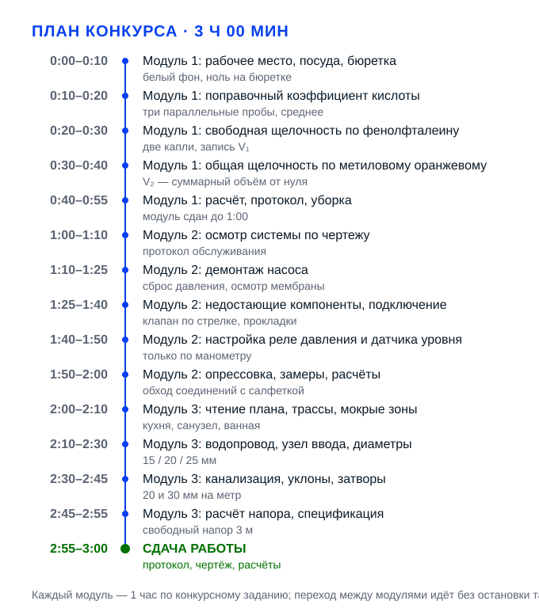
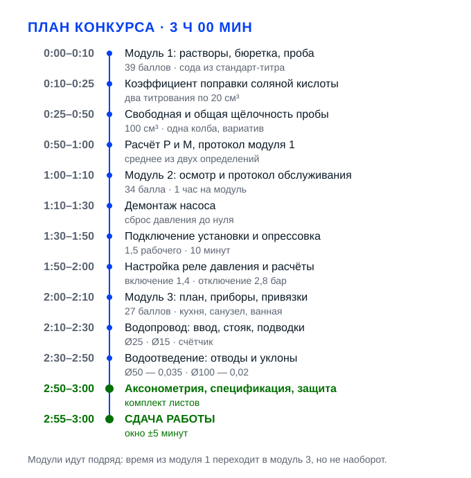
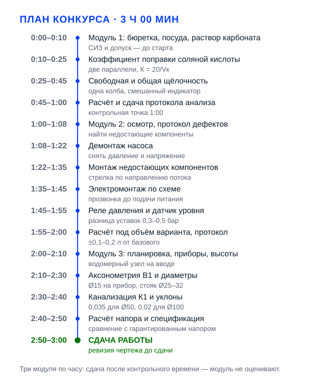

Водные технологии (Р)
Задания ниже — официальные файлы «Абилимпикс» (источник: abilympics-russia.ru), разложенные по категориям. Решения написаны по тексту задания, регламенту и критериям оценки; в них указано, что именно проверяет эксперт.
Школьник
14–16 лет, базовый уровень заданияВыдержка из официального конкурсного задания: страницы, относящиеся к категории «Школьник» (стр. 5–7 источника).
Пошаговое решение
Задание категории «Школьники» состоит из трёх модулей по одному часу: лабораторный химический анализ с титрованием, водозапорная арматура с пуском установки и проектирование водоснабжения и водоотведения в жилом помещении. Модули разные по природе — в первом вы работаете с бюреткой и считаете миллилитры, во втором собираете узел руками и настраиваете датчики по манометру, в третьем чертите план квартиры и считаете расход и напор. Общее у них одно: везде оценивают не «получилось или нет», а порядок действий — закрыл ли кран до того, как отвернул гайку, сняли ли воронку с бюретки, подписан ли уклон на каждом участке канализации. Ниже — последовательность от входа в лабораторию до сдачи листа, с размерами, числами и типичными ошибками в тех местах, где их чаще всего и делают.

Задача 1. Определить свободную и общую щелочность титрованиемМодуль 1 · 1 час
Первый модуль — химия: нужно определить поправочный коэффициент раствора соляной кислоты, затем оттитровать пробу по фенолфталеину и по метиловому оранжевому, получить свободную и общую щелочность и посчитать их по формулам задания. Час делится примерно так: десять минут на посуду и рабочее место, десять на коэффициент, по десять на каждое титрование с параллелями, остальное — расчёт, протокол и уборка. Работа выигрывается не скоростью, а тем, что каждое следующее действие уже подготовлено предыдущим.
Действие 1.1. Собрать рабочее место под титрование
Шаг 1.1.1
Освобождаем стол и размечаем три зоны: слева штатив с бюреткой, по центру колба на 250 см³ и цилиндр, справа журнал, груша и капельницы с индикаторами. Под колбу кладём лист белой бумаги, а сам стол разворачиваем так, чтобы свет из окна или от лампы падал слева и не давал блика на стекле. Бюретку зажимаем в штативе строго вертикально, лапками за середину трубки, а не за кран: кран должен поворачиваться двумя пальцами, без заедания. Носик поднимаем над столом на 10–15 сантиметров, чтобы колба с сотней кубиков пробы свободно входила под него и её можно было покачивать не отрывая.
Результат модуля по конкурсному заданию — определение общей и свободной щелочности и расчёт, и держится он на одном условии: середина титрования должна быть видна без напряжения. На модуль отведён час, а титруем мы трижды — поправочный коэффициент, свободная щелочность, общая щелочность, — поэтому каждая лишняя перестановка посуды по ходу работы отнимает время у параллельных проб. Бюретка, зажатая за кран, при повороте смещается, и отсчёт уезжает на десятые доли кубика, а из этих десятых и складывается ошибка в конечном расчёте.
Проверьте с рабочего места, не вставая: бюретка вертикальна (сверяем по краю стола или отвесу), белый лист виден под колбой целиком, до журнала можно дотянуться рукой. Кран ходит легко, носик не касается горла колбы, когда она стоит под ним. Если приходится тянуться или наклонять голову к носику — переставьте штатив сейчас, через полчаса будет поздно.
Частая ошибка — поставить бюретку сбоку и читать показания, поворачивая голову: глаз оказывается не на уровне мениска, и систематическая ошибка в 0,1–0,2 см³ повторяется во всех трёх титрованиях. Вторая — работать без белого фона на светлом столе: обесцветание фенолфталеина ловится на две-три капли позже, и свободная щелочность выходит завышенной, а вместе с ней и расчёт.
Эксперт подходит к месту в первые минуты модуля и смотрит на организацию: вертикальность бюретки, белый фон, наличие груши, разложены ли пипетки по индикаторам. По этому осмотру сразу видно, работал ли участник с титрованием раньше или видит бюретку впервые.
Шаг 1.1.2
Моем конические колбы на 250 см³, цилиндр на 100 см³ и пипетки тёплой водой с каплей моющего средства, затем трижды ополаскиваем дистиллированной — по 10–15 см³ на порцию, сливая каждый раз до конца. Колбу держим за горло, а не за дно, чтобы не оставить следов на стенках. Изнутри посуду не вытираем полотенцем: ворс и волокна дают ложную муть и мешают ловить переход окраски. Сушим вверх дном на решётке или просто стряхиваем остаток — влажные стенки титрованию не мешают, а вот капли водопроводной воды мешают сильно.
Щелочность водопроводной воды в десятки раз выше, чем у пробы со щелочностью 2–4 мг-экв/дм³, поэтому две-три оставшиеся капли добавляют к результату заметную величину. По заданию результат модуля — численные значения свободной и общей щелочности и расчёт по формулам, где объём пробы принимается равным 100 см³; если в колбе оказалось не 100 см³ чистой пробы, формула формально верна, а результат нет. Плюс на стенках колбы остаются капли индикатора от прошлых проб — они тоже смещают переход.
Налейте в вымытую колбу 50 см³ дистиллированной воды и добавьте каплю фенолфталеина: розовой окраски быть не должно. Второй признак — вода стекает по стенкам ровной плёнкой, без разводов и капель. Проверьте и пипетки: из пипетки на 20 см³ вода должна вытекать полностью, без капли, застрявшей в носике.
Ополоснуть один раз «для вида» — самая распространённая ошибка: вода вроде бы чистая, но щелочность поднимается на 0,1–0,2 мг-экв/дм³, и это ровно та величина, из-за которой параллельные пробы расходятся. Вторая ошибка — вытирать колбу насухо бумажным полотенцем и оставить в ней ворсинки: они садятся на дно и всплывают при титровании, переход окраски становится грязным и нечитаемым.
Эксперт смотрит, ополаскивается ли посуда дистиллированной водой и не стоит ли на столе полотенце для вытирания колб. Обычно это видно по первой же пробе: у подготовленного участника раствор в колбе прозрачный и переход окраски чистый.
Шаг 1.1.3
Промываем бюретку раствором соляной кислоты: наливаем по 5 см³ из склянки, наклоняем и проворачиваем так, чтобы титрант смочил все стенки, сливаем в стакан для слива — и так три раза. Затем заполняем бюретку через воронку почти до верха, воронку сразу снимаем, а воздушный пузырь под краном выгоняем коротким полным открытием: струя должна идти без разрывов. Доводим уровень до нулевой отметки, снимаем повисшую на носике каплю касанием стенки стакана и только после этого ставим колбу под носик.
Бюретка, сполоснутая только водой, разбавляет титрант в первых кубиках, и концентрация кислоты в начале титрования оказывается ниже, чем в расчёте: коэффициент поправки, который вы определите в этом же модуле, перестаёт соответствовать реальному раствору. Пузырь под краном — скрытый источник ошибки: он выходит в середину титрования и добавляет к отсчёту лишние 0,3–0,5 см³, причём незаметно. На весь модуль отведён час, и повторное титрование из-за пузыря съедает его половину.
После трёх промывок и заполнения посмотрите на трубку на просвет: пузырей под краном и в кончике нет, струя при открытии ровная, без воздуха. Уровень стоит на нуле и не подтекает за минуту (проверяем секундомером или просто по часам). Если уровень ушёл вниз сам — кран подтягиваем или меняем бюретку.
Забыть снять воронку с бюретки: в неё попадает пыль, а главное — воронка мешает видеть мениск, и отсчёт снимается по верхнему краю. Вторая ошибка — начинать титрование, не выгнав пузырь: он выходит на 3–4-м кубике, отсчёт прыгает, и вся проба идёт в брак.
Эксперт проверяет бюретку до начала титрования: снята ли воронка, нет ли пузыря, стоит ли уровень на нуле. Это одна из тех мелочей, по которым отличают участника, отработавшего методику, от новичка.
Действие 1.2. Проверить растворы, индикаторы и пробу
Шаг 1.2.1
Берём со стола две склянки: раствор соляной кислоты 0,1 н и раствор карбоната натрия 0,1 н. Читаем этикетки полностью — концентрация, дата приготовления, кто приготовил, — и ставим склянки так, чтобы они не путались: кислоту слева от штатива, карбонат справа. Смотрим на раствор против света: он должен быть прозрачным, без мути, хлопьев и осадка на дне. Пробку снимаем только на время отбора и сразу закрываем обратно, потому что кислота улетучивается, а карбонат тянет из воздуха углекислоту.
Карбонат натрия — это раствор сравнения: именно по нему мы находим коэффициент поправки, и любая ошибка в нём автоматически переносится на все последующие расчёты щелочности. Если карбонат частично выветрился или растворился не полностью, его титр уже не 0,1 н, и коэффициент получится завышенным. Кислота в открытой склянке за сутки теряет часть хлороводорода, концентрация падает, а с ней уезжают оба результата — и по фенолфталеину, и по метиловому оранжевому.
Наклейка на месте и читается, дата не старше допустимой по методике, раствор прозрачен, осадка нет. Уровень в склянке позволяет набрать пипеткой 20 см³ без того, чтобы пипетка касалась дна. Если на дне видна соль или плёнка — раствор к работе не годится, и это надо сказать эксперту сразу, а не подставлять в формулу сомнительное число.
Взять склянку, не прочитав этикетку, — классика: перепутанные кислоту и карбонат обнаруживают уже по результату, когда коэффициент выходит 0,05 или 2,0. Вторая ошибка — оставить склянку открытой на всё время модуля: к концу работы концентрация уже не та, что в начале, и параллельные пробы не сходятся между собой.
Эксперт может подойти и спросить, что за раствор в руках и какова его концентрация. Ответ «кислота» без цифры читается как формальность; правильный ответ — 0,1 н раствор соляной кислоты, коэффициент поправки которого мы определяем в этом модуле.
Шаг 1.2.2
Готовим индикаторы к работе: фенолфталеин 1 % спиртовой в капельнице с надписью, метиловый оранжевый 0,1 % во второй капельнице, смешанный индикатор в третьей. Капельницы ставим в ряд справа, подписанными сторонами к себе, и проверяем, что каждая даёт отдельную каплю, а не струйку. Проверяем и то, что пипетка для отбора пробы не используется для индикаторов: индикатор в пипетке на 20 см³ испортит и пробу, и следующий отбор.
Количество индикатора прямо входит в переход: две капли фенолфталеина на 100 см³ дают розовую окраску, которая исчезает точно на нужном значении, а пять капель дают насыщенный малиновый цвет, и вы оттитруете на 0,2–0,3 см³ больше. С метиловым оранжевым то же самое: лишние капли смещают переход из жёлтой в оранжевую в сторону больших объёмов. Задание задаёт точное число капель — две для фенолфталеина, две для метилового оранжевого, три для смешанного, — и отступать от него нельзя.
Капля из каждой капельницы выходит отдельно и падает в колбу, а не течёт по стенке. На белом фоне видно, что фенолфталеин бесцветный, метиловый оранжевый оранжево-жёлтый, смешанный — зелёный. Если фенолфталеин уже розовый в самой капельнице, он загрязнён щелочью и работать с ним нельзя.
Капать индикатор «на глаз», считая, что больше — нагляднее: окраска становится слишком плотной, переход теряет резкость, и вы либо не замечаете конца, либо заканчиваете раньше. Вторая ошибка — одна капельница на два индикатора: остатки фенолфталеина в носике дают розовый оттенок в пробе с метиловым оранжевым, и переход читается как грязно-бурый.
Эксперт смотрит на подписанные капельницы и на то, считает ли участник капли вслух или про себя. На категории «Школьники» это отдельный признак аккуратности работы с реактивами.
Шаг 1.2.3
Отбираем пробу: перемешиваем ёмкость с водой плавным переворачиванием, а не тряской, и наливаем цилиндром 100 см³, следя за нижним мениском на уровне глаз. Переливаем в коническую колбу на 250 см³ по стенке, чтобы не взбалтывать воздух. Проверяем температуру: рука не должна чувствовать ни холода, ни тепла — проба должна быть комнатной, около 20 °C. Если вода пришла из холодильника, колбу с пробой греем в ладонях или ставим в тёплую воду на 5–10 минут.
Титрование ведут при комнатной температуре, потому что от неё зависит диссоциация угольной кислоты и, значит, положение точки перехода. Холодная проба «тянет» конец титрования: обесцвечивание приходит позже, свободная щелочность выходит завышенной на 0,1–0,3 мг-экв/дм³. Взболтанная проба теряет углекислоту в воздух, и результат уходит в другую сторону. Обе ошибки систематические, то есть повторяются в каждой пробе и не ловятся параллельными определениями.
Объём в колбе — ровно 100 см³ по нижнему мениску, пены на поверхности нет, стенки не забрызганы. Термометр или тыльная сторона ладони к стенке колбы: ни тепла, ни холода. Если пена стоит шапкой, подождите минуту — пузырьки искажают и отсчёт объёма, и момент обесцвечивания.
Налить «примерно сто» по верхнему краю цилиндра: реально получается 103–105 см³, и щелочность выходит заниженной пропорционально — ошибка в 3 % при результате 3,0 мг-экв/дм³ это 0,1. Вторая ошибка — брать пробу из отстоявшейся ёмкости, не перемешав: у поверхности вода одна, у дна другая.
Эксперт проверяет объём пробы и её температуру до начала титрования, а также смотрит, отбирается ли проба цилиндром или на глаз. На глаз в этом модуле не отбирают ничего.
Действие 1.3. Определить поправочный коэффициент кислоты
Шаг 1.3.1
Пипеткой на 20 см³, сполоснутой раствором карбоната, отбираем 20 см³ карбоната натрия и переносим в коническую колбу на 250 см³, держа пипетку вертикально и давая раствору стечь по стенке. Доводим объём дистиллированной водой до 100 см³ — цилиндром, по нижнему мениску. Добавляем две капли метилового оранжевого: раствор становится жёлтым. Колбу ставим на белый лист под носик бюретки, уровень кислоты проверяем ещё раз — ноль.
Разбавление до 100 см³ нужно не для красоты: в концентрированном карбонате переход окраски размыт, и конец титрования ловится с ошибкой в полкубика. Разбавленный раствор даёт резкий переход, а объём титранта при этом не меняется — количество вещества осталось тем же. По заданию за результат титрования принимают среднее арифметическое, значит, первая проба должна быть выполнена так же, как вторая и третья, иначе среднее считается по разным условиям.
Объём в колбе 100 см³, окраска ровная жёлтая без оранжевых разводов, пипетка слита полностью. Посмотрите на кончик пипетки: если в нём осталась капля, значит, пипетка не калибрована или вы не дали стечь — несите 20 см³ не тем объёмом, и коэффициент сразу уедет.
Отобрать 20 см³ «на глаз» цилиндром — ошибка в 0,5 см³ даёт ошибку коэффициента в 2,5 %, и это уже видно в расчёте щелочности. Вторая ошибка — разбавить водопроводной водой: её собственная щелочность складывается с карбонатной, и коэффициент выходит завышенным.
Эксперт смотрит на пипетку и на то, чем доводится объём: пипетка на 20 см³ и цилиндр на 100 см³ — единственный правильный набор в этом шаге. Отдельно проверяется, споласкивается ли пипетка раствором карбоната: без этого первые полкубика разбавлены водой, и коэффициент уходит вверх.
Шаг 1.3.2
Титруем: открываем кран, даём струйке идти тонкой непрерывной нитью, колбу покачиваем круговыми движениями, не вынимая из-под носика. Когда жёлтая окраска начнёт темнеть и в месте падения капли появляются оранжевые вспышки, переходим на капельный режим: одна капля, покачали, посмотрели. Конец — первый момент, когда вся жидкость стала оранжевой и не светлеет после покачивания, обычно это 19–21 см³ кислоты.
Карбонат натрия титруется до гидрокарбоната, поэтому эквивалент совпадает с кислотой один к одному: на 20 см³ 0,1 н карбоната должно уйти ровно 20 см³ 0,1 н кислоты. Именно это равенство и лежит в основе коэффициента поправки — отклонение объёма от двадцати и есть та поправка, которую мы потом вносим в расчёт щелочности. Если перетитровать до жёлто-розового, объём вырастет на 0,3–0,5 см³, коэффициент уменьшится, и обе щелочности окажутся заниженными.
Окраска по всей колбе ровная оранжевая, при покачивании не светлеет к жёлтому, у стенок нет жёлтых пятен. Отсчёт снимаем по нижнему мениску, глаз на уровне жидкости, с точностью до 0,05 см³. Если переход «поймали» на глаз, а через минуту раствор снова пожелтел — вы остановились раньше, добавьте полкапли.
Титровать струёй до самого конца и потом удивляться, что объём 24 см³: конец проскакивает на 2–3 кубика, потому что оранжевый в жёлтом читается хуже, чем кажется. Вторая ошибка — не покачивать колбу: у стенок остаётся неоттитрованный карбонат, и переход приходит позже.
Эксперт стоит рядом именно на этом титровании: смотрит на капельный режим у конца, на покачивание колбы, на то, читает ли участник мениск на уровне глаз. Это самое информативное место всего модуля.
Шаг 1.3.3
Повторяем титрование ещё дважды, каждый раз с чистого нуля и со свежей порцией 20 см³ карбоната, разбавленной до 100 см³. Три объёма записываем в журнал подряд, находим среднее арифметическое и считаем коэффициент по формуле задания: К равно объёму карбоната (20 см³), делённому на объём кислоты, ушедшей на титрование. Если расхождение между пробами больше 0,1 см³, четвёртая проба обязательна.
Задание прямо говорит: за результат титрования принимают среднее арифметическое, — поэтому три пробы нужны не для солидности, а чтобы увидеть разброс. Сходимость в 0,1 см³ означает, что вы владеете техникой; разброс в 0,5 см³ означает, что где-то теряются капли или гуляет объём пробы, и коэффициент в этом случае лучше не считать, а переделать. Коэффициент близкий к единице (0,98–1,02) — норма для свежеприготовленной 0,1 н кислоты, и это хороший способ проверить, что вы не перепутали растворы.
Три значения в журнале, разница между крайними не больше 0,1 см³, среднее посчитано на бумаге или калькуляторе и перепроверено. Коэффициент попал в диапазон 0,95–1,05. Если он вышел 1,4 или 0,6 — ищите ошибку в растворах, а не записывайте число.
Взять за результат первую пробу, «потому что она самая аккуратная»: задание требует среднего арифметического, и подмена видна по журналу. Вторая ошибка — округлить коэффициент до целого: К = 1,0 вместо 1,03 сдвигает обе щелочности на 3 %, а на малых значениях это уже заметно в протоколе.
Эксперт сверяет журнал с бюреткой: записаны ли все три объёма, есть ли среднее, как посчитан коэффициент. Ответ «посчитал в уме» без записи здесь не принимается.
Действие 1.4. Определить свободную щелочность по фенолфталеину
Шаг 1.4.1
Вносим в чистую коническую колбу 100 см³ анализируемой воды — цилиндром, по нижнему мениску, сливая по стенке. Добавляем ровно две капли раствора фенолфталеина и перемешиваем круговым покачиванием, не взбалтывая: пена на поверхности мешает потом видеть обесцвечивание. Ставим колбу на белый лист под носик бюретки и проверяем, что уровень кислоты стоит на нуле: титрование начинается с нулевой отметки, иначе отсчёт придётся пересчитывать в уме и легко ошибиться.
Фенолфталеин показывает именно свободную щелочность — ту часть, которая приходится на карбонаты и гидроксиды и исчезает при pH около 8,3. Если после двух капель окраска розовая, свободная щелочность есть; если раствор остался бесцветным, значит, её нет вовсе, и объём по фенолфталеину равен нулю — это нормальный результат для воды с гидрокарбонатной щёлочностью, и записывать его нужно честно. Момент появления розовой окраски — это и есть точка начала отсчёта, по ней видно, что индикатор рабочий.
После двух капель окраска ровная розовая по всему объёму, без малиновых сгустков. Если розового нет — проверьте индикатор: капните его в дистиллированную воду, там он тоже должен остаться бесцветным, а в слабом растворе соды — порозоветь. Колба стоит на белом фоне, носик бюретки в горле, не касаясь стенки.
Налить воду «до метки» на глаз и не проверить объём: при 95 см³ вместо 100 свободная щелочность выйдет завышенной на те же 5 %. Вторая ошибка — добавить индикатор до того, как колба встала на белый фон: бледно-розовый на цветном столе не виден, и участник начинает титровать вслепую.
Эксперт смотрит на объём пробы и на число капель, а также на то, стоит ли колба на белом фоне. Вопрос «почему ровно две капли и что будет от пяти» задают именно здесь, и ответ про смещение перехода читается как понимание методики.
Шаг 1.4.2
Титруем раствором соляной кислоты 0,1 н из бюретки, покачивая колбу и не вынимая её из-под носика. Сначала можно подавать тонкой струйкой, но как только розовый станет бледным, переходим на отдельные капли: капля — покачали — посмотрели. Конец — полное обесцвечивание, когда розовый оттенок исчез по всему объёму и не возвращается в течение минуты. Капли, попавшие на стенки выше уровня жидкости, смываем 2–3 см³ дистиллированной воды из промывалки.
Свободная щелочность мала — обычно от нуля до трёх кубиков, — поэтому здесь каждая капля стоит около 0,05 мг-экв/дм³, а струя легко проскакивает конец на 0,3–0,5 см³. Смывание капель со стенок нужно потому, что индикатор на сухом стекле не участвует в реакции: розовое пятно остаётся на стенке, а раствор уже обесцвечен, и участник продолжает титровать «до победы», завышая результат. По КЗ именно объём по фенолфталеину идёт в формулу свободной щелочности, поэтому лишние полкубика — это прямая ошибка в ответе.
Раствор бесцветен и остаётся бесцветным после минуты стояния и лёгкого покачивания. На стенках нет розовых разводов, объём в бюретке прочитан по нижнему мениску с точностью до 0,05 см³. Если розовый вернулся — вы остановились раньше, добавьте одну каплю и запишите новое показание, а не первое.
Считать концом «почти бесцветный» раствор с розовым оттенком: свободная щелочность выходит заниженной на 0,1–0,2 мг-экв/дм³, и потом оказывается, что общая щелочность меньше свободной, чего не бывает. Вторая ошибка — титровать, не покачивая: у дна остаётся неоттитрованная щёлочь, обесцвечивание приходит рывком и поздно.
Эксперт фиксирует, в какой момент участник остановился и проверил ли он результат через минуту. Именно возврат окраски чаще всего показывает, что конец не пойман.
Шаг 1.4.3
Снимаем отсчёт по нижнему мениску: глаз строго на уровне жидкости, бюретка на белом фоне, деления считаем от нуля вниз, десятые доли оцениваем на глаз с точностью до половины деления, то есть 0,05 см³. Записываем объём в журнал сразу, а не «запомню»: за час работы в памяти держится максимум два числа. Колбу не выбрасываем — раствор после титрования по фенолфталеину пойдёт дальше на общую щелочность, и это прямо разрешено заданием.
Отсчёт — самое частое место потери точности во всём модуле: ошибка в 0,1 см³ при щелочности 2,4 мг-экв/дм³ это 4 %, а при щелочности 0,4 — уже 25 %. Запись сразу в журнал защищает от второго по порядку источника ошибок — путаницы между объёмом по фенолфталеину и объёмом по метиловому оранжевому: формулы задания используют V1 и V2, и перепутанные местами числа дают бессмысленный результат, который, однако, выглядит правдоподобно.
В журнале стоит число с двумя знаками после запятой, например 2,40 или 0,15. Проверьте себя: бюретка опустела на ту же величину, что записана (если начали с нуля). Если отсчёт не сходится с уровнем в бюретке, значит, вы записали не то число — исправляйте сразу, зачёркивая, а не замазывая.
Читать по верхнему мениску или «по середине» — самая частая ошибка новичка: кислота в бюретке даёт вогнутый мениск, и верхний край выше нижнего на 0,1–0,2 см³. Вторая ошибка — оценивать десятые доли по памяти, не глядя на деления: отсчёт становится случайным.
Эксперт может попросить назвать отсчёт и сравнить со своим. Расхождение больше 0,1 см³ читается как неумение читать бюретку, а отсчёт, названный по верхнему мениску, — как ошибка, которую участник не замечает сам.
Действие 1.5. Определить общую щелочность по метиловому оранжевому
Шаг 1.5.1
Не выливая раствор после первого титрования, добавляем в ту же колбу три капли смешанного индикатора или две капли метилового оранжевого — так разрешено заданием, и так экономится проба. При смешанном индикаторе раствор из бесцветного становится зелёным, при метиловом оранжевом — жёлтым. Перемешиваем покачиванием и снова ставим колбу на белый лист под носик, проверив, что уровень кислоты в бюретке записан и не сбился.
Общая щелочность — это сумма всех веществ, реагирующих с кислотой, и её определяют до pH около 4,3, то есть до полного разрушения гидрокарбонатов. Работать в той же колбе можно потому, что кислоту, ушедшую на свободную щелочность, мы уже учли в отсчёте: общий объём V2 считается от нуля бюретки, а не от предыдущего показания. Если этого не понять, легко вычесть одно из другого и получить бессмыслицу вроде общей щелочности меньше свободной — а на защите результата такой ответ сразу виден.
После индикатора окраска ровная: зелёная или жёлтая, без пятен и разводов. Если при добавлении смешанного индикатора раствор стал серым сразу, значит, кислоты в колбе осталось слишком много — это признак перетитрованного первого этапа, и пробу лучше начать заново.
Забыть записать отсчёт после фенолфталеина — и потом гадать, откуда считать второй объём: V2 и V1 перепутываются, и обе щелочности в протоколе оказываются неверными, хотя титрование выполнено аккуратно. Вторая ошибка — добавить индикатор в новую порцию пробы, не отметив этого в журнале: условия двух титрований становятся разными, и сравнивать их нельзя.
Эксперт смотрит, в той ли колбе продолжается работа и понимает ли участник, что V2 — суммарный объём. Это вопрос, который задают почти всегда: не разобравшись в нём, следующий расчёт сделать правильно невозможно.
Шаг 1.5.2
Титруем до перехода окраски: зелёная у смешанного индикатора должна стать грязно-серой, жёлтая у метилового оранжевого — оранжевой, и это начало перехода, а не ярко-розовый цвет. У конца снова переходим на капли, покачивая колбу после каждой, и держим рядом колбу-свидетель: такая же порция дистиллированной воды с тем же индикатором, но без титрования. По сравнению с ней переход виден точнее, чем «на память».
Переход у метилового оранжевого размытый, и глаз легко уходит на полкапли вперёд — к розовому, который уже не имеет отношения к делу. Колба-свидетель отсекает эту ошибку: вы сравниваете два раствора, а не вспоминаете оттенок. Смешанный индикатор даёт более резкий переход зелёный — грязно-серый, но серый легко перескочить до фиолетового, поэтому у смешанного индикатора тоже нужен капельный режим и постоянное покачивание.
Окраска соответствует описанному переходу и не меняется после минуты стояния. Объём кислоты на втором этапе явно больше, чем на первом: разница между V2 и V1 обычно составляет 1–4 см³. Если разница нулевая, значит, свободной щелочности в пробе не было, и это надо проверить по первой пробе.
Титровать до ярко-розового «чтобы точно перешло»: объём вырастает на 0,5–0,8 см³, общая щелочность завышается на 10–15 %, и результат перестаёт соответствовать пробе. Вторая ошибка — не покачивать колбу и остановиться по цвету у поверхности: у дна раствор ещё жёлтый.
Эксперт следит за капельным режимом у конца второго титрования и за тем, пользуется ли участник колбой-свидетелем. Это признак методической грамотности.
Шаг 1.5.3
Снимаем отсчёт V2 по нижнему мениску — это суммарный объём кислоты от нуля, а не добавка после первого этапа. Записываем рядом с V1 и сразу проверяем логику: V2 больше V1, разница положительная, оба числа не превышают объём бюретки. Если кислоты на втором этапе не хватило и бюретка подошла к концу, доливаем её до нуля, записываем добавленный объём и суммируем его с прежним, а не начинаем счёт заново.
Именно здесь чаще всего теряются баллы: V2, записанный как добавка, занижает общую щелочность в полтора-два раза, и расчёт по формуле задания даёт значение, которое не проходит простейшую проверку здравым смыслом. Разница V2 минус V1 — это та часть щелочности, которая приходится на гидрокарбонаты, и по ней тоже видно, правильно ли выполнено титрование: она не может быть отрицательной ни при каких условиях.
V2 больше V1, разница в пределах 1–4 см³, оба отсчёта записаны с двумя знаками. Уровень в бюретке после второго титрования совпадает с записанным числом. Если V2 меньше V1 — вы записали добавку, а не сумму, исправляйте до расчёта.
Записать в V2 добавку после первого этапа — ошибка, которая обнуляет весь модуль, потому что и расчёт, и вывод по качеству воды строятся на этом числе. Вторая — не проверить, хватит ли кислоты в бюретке: на 20-м кубике она заканчивается, отсчёт теряется, и пробу приходится повторять с нуля.
Эксперт проверяет именно соотношение V1 и V2 в журнале. Несоответствие видно за секунду и говорит о непонимании методики, а не о случайной описке, поэтому переписать число задним числом уже не поможет.
Действие 1.6. Рассчитать, оформить протокол и сдать рабочее место
Шаг 1.6.1
Считаем по формулам задания: свободная щелочность P равна объёму кислоты по фенолфталеину, умноженному на концентрацию 0,1 н, на коэффициент поправки и на 1000, делённому на объём пробы; общая щелочность M считается так же, но с объёмом по смешанному индикатору. При пробе 100 см³ и кислоте 0,1 н множители сокращаются, и получается удобная проверка: численное значение в мг-экв/дм³ равно объёму в кубиках, умноженному на коэффициент поправки. То есть 2,4 см³ при K = 1,00 дают 2,4 мг-экв/дм³.
Формула из задания — единственный законный способ получить ответ, и в ней важен каждый множитель: коэффициент поправки мы определяли отдельным титрованием именно для того, чтобы он вошёл сюда, а не остался красивым числом в журнале. Сокращение множителей при 100 см³ пробы — не упрощение «на глаз», а следствие арифметики, и оно даёт быструю проверку: если расчёт по полной формуле и по сокращённой не совпадают, значит, в исходных числах есть ошибка.
Оба значения посчитаны, подставлены в формулу полностью, а не «по-быстрому», и проверены сокращённым способом. Размерность — мг-экв/дм³, округление до второго знака. Проверьте ещё раз, что в числителе стоит 1000 (перевод в дм³), а в знаменателе — объём пробы, а не объём титранта.
Перепутать в формуле объём пробы и объём титранта — ошибка, после которой ответ отличается в сотни раз, но выглядит как число. Вторая — забыть коэффициент поправки: результат уезжает на 2–5 %, а при плохой кислоте и на все 10 %, и расхождение с контрольным значением эксперта становится очевидным.
Эксперт проверяет подстановку чисел, а не только итог: важно, чтобы в формуле стояли именно те V1, V2, N, K и Vпр, которые записаны в журнале. Ошибку в множителе 1000 он видит по порядку величины результата.
Шаг 1.6.2
Проверяем результат на здравый смысл, прежде чем переносить в протокол: свободная щелочность не может быть больше общей, общая для питьевой и сточной воды обычно лежит в пределах от 0,5 до 8 мг-экв/дм³, разность M минус P не может быть отрицательной. Если числа вышли за эти рамки, ищем ошибку в журнале: перепутанные V1 и V2, забытый коэффициент, неверный объём пробы. Заодно пересчитываем обе величины второй раз, другим способом — через сокращённую формулу.
Проверка на здравый смысл — это то, что отличает лаборанта от человека, впервые держащего бюретку: число, противоречащее физике, нельзя сдавать, даже если арифметика формально верна. Задание требует определить и посчитать, и эксперт на защите почти наверняка спросит, почему общая щелочность больше свободной и что это значит для воды. Ответ, что разница приходится на гидрокарбонаты, показывает, что участник понимает, что измерял.
P меньше или равно M, разница положительная, оба значения в разумном диапазоне, пересчёт двумя способами дал одно и то же. Если разница M минус P равна нулю при заметной общей щелочности — проверьте, не забыли ли добавить индикатор на втором этапе.
Отправить в протокол первое получившееся число, не сверив его с физикой: типичный случай — свободная щелочность 4,2 при общей 2,8, и участник не замечает противоречия. Вторая ошибка — «подогнать» результат под ожидаемый: подгонка видна по несовпадению с журналом и стоит дороже честной ошибки.
Эксперт задаёт вопрос по существу результата — что показывает разность и о чём говорит величина щелочности. Ответ по делу ценится выше, чем идеальные цифры без объяснения.
Шаг 1.6.3
Оформляем протокол: дата, номер пробы, объём пробы, температура, коэффициент поправки, V1, V2, свободная и общая щелочность в мг-экв/дм³, фамилия и подпись. Пишем разборчиво, числа — с единицами измерения. Затем убираем место: кислоту из бюретки сливаем в стакан для слива, бюретку промываем водой трижды, колбы моем и ставим вверх дном, индикаторы закрываем и убираем в штатив, бумагу и осколки — в мусор. Сдаём рабочее место эксперту до того, как истечёт час модуля.
Протокол — это форма результата: по заданию итог модуля именно «определение и расчёт», и незаписанный результат считается невыполненным, даже если титрование было идеальным. Чистое место и слитая кислота — вопрос не только порядка: оставленная в бюретке кислота за следующий час разъест кран, а следующая смена получит неработающий инструмент. На уборку нужно 5–7 минут, и их лучше планировать заранее, а не отнимать у титрования.
В протоколе заполнены все строки, единицы измерения на месте, подпись стоит. На столе не осталось ни одной открытой склянки, бюретка промыта, колбы вверх дном, журнал лежит на виду. Сверьте часы: если до конца модуля меньше пяти минут, уборку начинайте немедленно.
Оставить протокол на потом и заняться уборкой: время кончается, и в протоколе не хватает половины чисел. Вторая ошибка — слить кислоту в раковину: это нарушение правил работы с реактивами, за которое снимают баллы и о котором сообщают главному эксперту.
Эксперт принимает модуль по протоколу и по состоянию места. Аккуратный слив и вымытая посуда читаются как профессиональная привычка, а не как показная уборка в конце.
Задача 2. Ввести в эксплуатацию систему транспортировки водыМодуль 2 · 1 час
Второй модуль — железо: технический осмотр системы, демонтаж насоса, установка недостающих компонентов, подключение установки, настройка датчиков, опрессовка и расчёты по заданию и чертежу. Результат модуля — собранная и работающая система плюс заполненный протокол обслуживания, в котором каждая неисправность описана и закрыта действием. Порядок здесь важнее темпа: сначала обесточить и сбросить давление, потом браться за ключ; сначала осмотр по чертежу, потом разборка.
Действие 2.1. Осмотреть систему и зафиксировать неисправности
Шаг 2.1.1
Обходим систему по потоку, начиная от входа: кран на вводе, фильтр, счётчик, обратный клапан, мембранный бак, насос, реле давления, манометр, датчик уровня, и заканчивая точкой разбора. На каждом узле смотрим три вещи: есть ли он на месте по чертежу, в какую сторону смотрит стрелка направления потока, нет ли подтёков, трещин и следов высохшей воды. Ладонью проводим под каждым соединением: даже высохшее белое кольцо от жёсткой воды показывает, что здесь когда-то капало. Осмотр занимает 5–7 минут и делается до любых разборок.
Модуль называется «ввод в эксплуатацию системы транспортировки воды», и по заданию нужно сначала произвести технический осмотр, а уже потом установить недостающие компоненты и выполнить расчёты. Порядок здесь не формальность: если начать с демонтажа, вы разберёте узел, который был исправен, и потеряете те самые минуты, из которых состоит час. Кроме того, протокол обслуживания, который есть в задании, заполняется по результатам осмотра, и записывать в него приходится то, что вы увидели своими глазами, а не то, что написано в инструкции.
По каждому узлу есть ответ «на месте / отсутствует / неисправен». Стрелки на корпусах совпадают с направлением потока по чертежу. Под соединениями сухо. Список недостающих компонентов записан на черновике, и в нём не меньше позиций, чем несоответствий на чертеже.
Ходить вокруг установки, не сверяясь с чертежом: половина отсутствующих компонентов не замечается, потому что на месте «всё примерно так». Вторая ошибка — сразу лезть с ключом к первому узлу: разобранный узел закрывает вид на остальные, и осмотр приходится начинать заново уже с разборкой.
Эксперт смотрит, с чего участник начал: с чертежа и обхода или с гаечного ключа. Второй вариант читается как отсутствие методики обслуживания, а запись, сделанная по ходу осмотра, — как профессиональная привычка.
Шаг 2.1.2
Заполняем протокол обслуживания: в левую колонку «обнаруженная неисправность» пишем, что именно не так, в правую — «предпринятые действия по устранению», пока предварительные. Формулировки короткие и предметные: «отсутствует обратный клапан на линии после насоса», «манжета на штуцере всасывания порвана», «реле давления не держит настройку». В конце ставим имя, дату и подпись — все три поля есть в бланке задания, и пустые они не остаются.
Протокол — это часть результата модуля, а не приложение: по заданию он входит в комплект сдаваемых документов вместе с расчётами, и эксперт читает его раньше, чем смотрит на установку. Предметная формулировка неисправности сразу показывает уровень: «насос не работает» может означать что угодно, а «реле давления не размыкает цепь при 2,8 бар» — конкретную причину и конкретное действие. Правая колонка заполняется после работы, но начать её нужно сейчас, иначе к концу модуля вспоминать придётся по памяти, а память под нагрузкой подводит.
В протоколе столько строк, сколько реальных неисправностей, и каждая строка имеет пару в правой колонке. Нет строк «проверил, всё нормально» — протокол фиксирует дефекты и действия. Имя, дата и подпись на месте, почерк разборчив.
Оставить протокол на конец модуля: остаётся две минуты, и в правой колонке появляются общие слова вроде «устранено». Вторая ошибка — записывать неисправности, которых не было, «для солидности»: эксперт сверит с установкой и увидит расхождение.
Эксперт читает протокол целиком и сверяет с тем, что реально сделано на стенде. Расхождение между бумагой и железом — худшее, что можно показать в этом модуле.
Действие 2.2. Демонтировать насос
Шаг 2.2.1
Снимаем нагрузку: закрываем кран на всасывающей линии полностью, поворачивая маховик по часовой стрелке до упора, затем отключаем насос от сети — вынимаем вилку или переводим автомат в положение «выкл», после чего проверяем, что кнопка на корпусе действительно не запускает двигатель. Сбрасываем остаточное давление: открываем ближайший кран разбора и ждём, пока вода перестанет идти. Манометр должен упасть до нуля, и только после этого можно откручивать соединения.
Порядок «закрыл — обесточил — сбросил давление» — это не бюрократия, а единственный способ не получить струю под давлением в лицо и не сжечь насос сухим ходом, если автоматика сработает в момент разборки. По заданию модуль включает демонтаж насоса, и выполнить его нужно так, чтобы установку можно было собрать обратно, а не так, чтобы она осталась разобранной. Остаточное давление в мембранном баке и расширительном объёме держится долго: даже после закрытия крана в трубке остаётся 1,5–2 бара, и открученный штуцер выстреливает водой.
Кран закрыт до упора, индикатор на насосе не горит, кнопка не запускает двигатель, манометр на нуле, из крана разбора вода не идёт. Только при всех четырёх признаках берёмся за ключ. Если манометр держит давление — ищите второй закрытый кран или неисправный обратный клапан.
Отключать насос после того, как открутили соединение: вода идёт, автоматика в этот момент может включить двигатель на сухом ходу, и насос выходит из строя за десятки секунд. Вторая ошибка — не сбросить давление и получить удар струёй при отвёртывании штуцера.
Эксперт смотрит на последовательность действий и на то, проверяет ли участник отсутствие напряжения фактически, а не «на глаз». Это пункт безопасности, который оценивают отдельно от сборки.
Шаг 2.2.2
Готовим таз под слив и тряпку, ставим их под насос так, чтобы вода стекала в таз, а не на пол. Ключом на 24 или разводным ключом отворачиваем накидную гайку на всасывающем штуцере, придерживая второй рукой корпус насоса, чтобы трубка не провернулась. Затем так же отпускаем нагнетательный штуцер. Прокладки и манжеты складываем в отдельную ёмкость, а не на стол: их ещё нужно осмотреть и часть заменить.
Всасывающую линию отпускают первой, потому что в ней нет давления и воды меньше: если начать с нагнетания, остатки пойдут в насос и на пол. Придерживать корпус нужно из-за медных и пластиковых трубок: они не любят крутящего момента и трескаются у резьбы, а трещина в трубке — это уже не разборка, а замена узла, на которую в часовом модуле нет времени. По КЗ результат модуля включает установку недостающих компонентов, а не замену того, что сломали по неосторожности.
Обе гайки отпущены, вода собрана в таз, пол сухой, прокладки в ёмкости целые и посчитаны. Трубки не провёрнуты, на резьбе нет сорванных витков. Проверьте пальцем кромку прокладки: если она разбухла или надорвана, её место — в мусор, а не обратно в узел.
Крутить гайку, не придерживая трубку: медная трубка проворачивается и лопается у пайки, после чего модуль превращается в пайку вместо сборки. Вторая ошибка — работать без таза: вода уходит под стенд, и на мокром полу работать с электрикой нельзя.
Эксперт смотрит на инструмент и на то, чем участник придерживает трубку. Второй ключ в руках — то, что отличает сборку от попытки сорвать резьбу, и работа «одной рукой на весу» читается как отсутствие практики.
Шаг 2.2.3
Отворачиваем четыре болта крепления насоса к раме ключом на 10, начиная с нижних и поддерживая корпус второй рукой, чтобы он не повис на трубках. Снимаем насос с рамы, осматриваем мембрану и крыльчатку через всасывающее отверстие: мембрана не должна иметь трещин и следов перекачки абразива, крыльчатка — люфта на валу. Кладём насос на чистую тряпку рядом с рамой, всасывающим отверстием вверх, чтобы внутрь не попал мусор.
Осмотр при демонтаже — единственная возможность увидеть состояние мембраны, не разбирая насос полностью, и именно здесь выясняется, нужна ли замена, которую потом нужно отразить в протоколе. Мембрана — самый нагруженный элемент: она работает на изгиб миллионы циклов, и микротрещина в ней даёт падение давления и «плавающее» срабатывание реле, с которым потом невозможно настроить датчики. Класть насос всасыванием вверх нужно потому, что песок и окалина со дна попадут в камеру и при сборке пойдут в крыльчатку.
Насос снят и лежит устойчиво, болты в лотке и пересчитаны (четыре), мембрана целая и эластичная, крыльчатка вращается без заеданий и не имеет осевого люфта больше миллиметра. Всасывающее отверстие ничем не заткнуто изнутри, мусора в камере нет.
Уронить насос на пол или оставить висеть на трубках: обломанный штуцер означает, что модуль не собрать. Вторая ошибка — не заметить трещину мембраны и потом час искать причину, почему насос не держит давление после сборки.
Эксперт проверяет, осмотрен ли насос и записано ли состояние мембраны в протокол. Пропущенный осмотр виден сразу: участник ставит насос обратно, не глядя внутрь.
Действие 2.3. Установить недостающие компоненты и подключить установку
Шаг 2.3.1
Сверяем чертёж со стендом и выкладываем на стол недостающие компоненты в том порядке, в котором они стоят по потоку: обратный клапан, манжеты, прокладки, штуцеры, хомуты, мембранный бак, реле давления. Проверяем каждый на проходимость — продуваем ртом или смотрим на просвет, — потому что забитый обратный клапан внешне неотличим от рабочего. Сверяем присоединительные размеры: резьба должна наворачиваться от руки на два-три оборота, без перекоса.
Установка недостающих компонентов — прямо прописанный результат модуля, и цена ошибки здесь высокая: один неверно поставленный клапан разворачивает поток и обнуляет работу всей системы. Выкладывание по порядку потока экономит время на сборке: в часовом модуле искать нужную манжету в куче крепежа — непозволительная роскошь. Проверка проходимости обязательна, потому что после сборки и подачи воды забитый клапан проявится как «насос не создаёт давление», и вы будете искать причину в насосе, а не в клапане.
Все позиции из списка лежат на столе, каждая примерена к своему месту, резьбы совпадают, клапан продувается в одну сторону и не продувается в обратную. Лишних деталей не осталось, не хватающих — тоже.
Ставить компоненты «по памяти», не сверяясь с чертежом: обратный клапан оказывается после реле давления, и система работает рывками. Вторая ошибка — поставить прокладку от другого типоразмера: соединение затягивается, но течёт по кромке, и опрессовка не проходит.
Эксперт сверяет состав узлов с чертежом и смотрит, проверял ли участник клапан на проходимость. Это одна из тех операций, которые отличают сборку от «накрутил и затянул».
Шаг 2.3.2
Ставим насос на раму и затягиваем четыре болта крест-накрест, сначала от руки, потом ключом на 10 до плотного контакта, без фанатизма: резьба в алюминиевой раме срывается легко. Подсоединяем всасывающую линию первой, надев новую прокладку и смазав её водой, затем нагнетательную. Накидные гайки затягиваем ключом на 24 с усилием примерно до 15–20 Н·м — это «плотно от руки плюс четверть оборота», а не «до упора», и обязательно придерживая трубку вторым ключом.
Крест-накрест болты тянут для того, чтобы корпус сел на раму без перекоса: перекошенный насос вибрирует, а вибрация разбивает соединения и даёт течь на стыках через несколько минут работы. Смазанная водой прокладка садится ровно и не выдавливается при затяжке. Момент важен с двух сторон: недотянутая гайка течёт, перетянутая — срывает резьбу или раздавливает манжету, и в обоих случаях установку придётся разбирать заново, а время модуля уже израсходовано.
Насос сидит на раме без люфта и без перекоса, все четыре болта затянуты равномерно. Прокладки видны по кромке ровным кольцом, без выступов с одной стороны. Гайки затянуты так, что ключ не идёт дальше без заметного усилия, но и не «проваливается».
Тянуть гайку одной рукой, без второго ключа: трубка проворачивается, и соединение течёт по резьбе, сколько ни подтягивай. Вторая ошибка — поставить старую прокладку «она ещё мягкая»: при опрессовке она даёт каплю, и всё соединение приходится перебирать.
Эксперт смотрит на порядок подключения и на применение второго ключа. Это базовый навык сантехнической сборки, и он виден с первого движения: затяжка без второго ключа фиксируется как нарушение технологии.
Шаг 2.3.3
Монтируем обратный клапан на нагнетательной линии, строго по стрелке на корпусе — она должна совпадать с направлением движения воды от насоса к потребителю. Уплотняем резьбу льном с пастой или нитью с герметиком, наматывая по ходу резьбы, а не против: против хода материал выдавливается при затяжке. Рядом ставим манометр через тройник, чтобы видеть давление до и после клапана, и только после этого подключаем мембранный бак.
Обратный клапан держит воду в системе после выключения насоса и не даёт ей вернуться в водопровод: без него насос включается при каждом открытии крана и работает рывками, а давление в системе падает при каждом разборе. Стрелка на корпусе — единственный надёжный указатель направления, потому что внешне клапан симметричен. Манометр через тройник нужен для настройки реле давления в следующем действии: настраивать пороги «на слух» в этом модуле не получится, задание требует расчётов.
Клапан стоит по стрелке, продувается в сторону потребителя и не продувается обратно. Резьба закрыта герметиком ровно по виткам, без комков внутри трубы. Манометр показывает ноль при сброшенном давлении и реагирует на подачу воды.
Поставить клапан против стрелки: система работает, но при выключении насоса вода гонит его обратно, и давление падает до нуля за минуту — на опрессовке это выглядит как «не держит давление» и уводит поиск в сторону. Вторая ошибка — намотать герметик против резьбы: при затяжке его выдавливает внутрь трубы, и кусок пасты забивает аэратор или счётчик.
Эксперт проверяет направление клапана и наличие манометра в точке измерения. Стрелка на корпусе — то, что он смотрит первым делом: клапан не по потоку означает, что установка не будет держать давление после выключения насоса.
Шаг 2.3.4
Подключаем мембранный бак через тройник и шаровой кран, чтобы его можно было отсечь для обслуживания. Проверяем давление воздушной полости ниппелем: для системы с порогами 1,5–2,5 бара воздух в баке должен стоять около 1,2–1,4 бара, то есть на 0,2–0,3 бара ниже давления включения насоса. Если давления нет, подкачиваем автомобильным насосом и проверяем, что ниппель не травит. Бак ставим вертикально ниппелем вверх, чтобы воздух не уходил в воду.
Мембранный бак — это то, что защищает насос от частых включений: без него при малом разборе насос щелкает каждые несколько секунд и сгорает за сезон. Давление воздушной полости рассчитывается от порога включения, а не берётся произвольно: если воздуха мало, мембрана ложится на стенку и бак перестаёт работать, если много — вода в бак почти не заходит, и эффекта тоже нет. Ниппель вверх — правило монтажа: в перевёрнутом баке воздух скапливается под мембраной, и её продавливает.
Манометр на ниппеле показывает 1,2–1,4 бара при сброшенном давлении воды в системе, ниппель не травит (проверяем мыльной водой — пузырей нет). Бак стоит вертикально, кран перед ним открыт, соединение сухое.
Накачать бак «до двух бар, как в колесе»: пороги реле и давление бака не согласованы, насос начинает включаться чаще, а давление в системе скачет. Вторая ошибка — поставить бак без отсечного крана: при обслуживании придётся сливать всю систему.
Эксперт смотрит, измерено ли давление в баке и сопоставлено ли оно с порогами реле. Вопрос «зачем вообще бак и что будет без него» задают чаще, чем кажется, и ответ про частые включения насоса здесь основной.
Действие 2.4. Настроить датчики
Шаг 2.4.1
Настраиваем реле давления: снимаем крышку, находим две гайки — большую на центральной пружине и малую на боковой. Большой задаём давление включения, малой — разницу между включением и выключением. Вращаем по четверти оборота, после каждого — включаем насос и смотрим манометр: зафиксировали давление включения, зафиксировали давление отключения, записали оба числа. Для учебного стенда держим включение около 1,5 бара и отключение около 2,5, то есть разницу в 1 бар.
Реле — единственный элемент, который превращает насос в автоматическую систему, и настраивается оно только по манометру: «на слух» пороги уходят на 0,5 бара и больше. Разница между включением и выключением важнее самих значений: слишком маленькая заставляет насос щёлкать постоянно, слишком большая даёт резкие скачки давления в душе. По заданию в модуле есть настройка датчиков и расчёты, и именно сюда приходят числа из расчёта: пороги должны быть обоснованы, а не выставлены наугад.
Манометр фиксирует включение и отключение в заданном коридоре, разница 0,8–1,2 бара, дребезга нет — насос не включается-выключается подряд. Проверьте трижды: открыли кран, дождались включения, закрыли, дождались отключения. Числа в трёх циклах совпадают с точностью до 0,1 бара.
Крутить гайки, не глядя на манометр: пороги уезжают, насос либо не выключается вообще, либо работает без остановки и греется. Вторая ошибка — выставить включение выше давления в баке, но ниже отключения, не согласовав их: получается «болтанка», при которой давление в системе скачет при каждом разборе.
Эксперт смотрит, записаны ли оба порога и совпадают ли они с показаниями манометра при проверке. Пороги, названные по памяти, он сверяет с манометром сам, и расхождение в 0,3 бара уже заметно.
Шаг 2.4.2
Проверяем датчик уровня в накопительной ёмкости: поплавок должен свободно ходить по штоку, не задевая стенок, а контакты — замыкаться в верхнем и размыкаться в нижнем положении. Поднимаем поплавок рукой и слушаем щелчок, опускаем — второй щелчок. Заодно проверяем защиту от сухого хода: при нижнем положении поплавка насос обязан не запускаться, и это проверяется включением вручную на пустой ёмкости при закрытом кране на входе.
Датчик уровня в системе транспортировки воды — это защита насоса и всей линии: без него при пустой ёмкости насос гонит воздух, мембрана перегревается и рвётся за считанные минуты. Проверка «рукой и щелчком» занимает полминуты и показывает, работает ли механика, а проверка защиты от сухого хода показывает, работает ли электрика. В протокол обслуживания идёт и то, и другое: задание требует технического осмотра с фиксацией, а невключение защиты — это неисправность, которую нужно устранить.
Поплавок ходит по всей длине штока без заеданий, щелчок слышен в обоих крайних положениях, при нижнем положении насос не запускается. Проверьте ещё раз, что провод датчика не натянут и не касается движущихся частей: натянутый провод — типичная причина ложных отключений.
Оставить натянутый провод или поплавок, трущийся о стенку: датчик срабатывает через раз, и защита от сухого хода превращается в лотерею. Вторая ошибка — проверить только верхнее положение и не проверить нижнее, хотя именно нижнее отвечает за сохранность насоса.
Эксперт проверяет датчик сам, поднимая поплавок рукой. Если насос запускается при нижнем положении — дефект не найден и не записан, а защита от сухого хода в протоколе значится исправной.
Действие 2.5. Опрессовать, запустить и выполнить расчёты
Шаг 2.5.1
Открываем кран на входе медленно, на четверть, и даём системе наполниться: воздух должен выйти через ближайший кран разбора, который держим открытым до появления ровной струи без шипения. Затем поднимаем давление насосом до испытательного — в практике пусконаладки его принимают в 1,5 раза выше рабочего, — и выдерживаем не меньше 10 минут, обходя все соединения с сухой салфеткой. Падение давления по манометру не должно превышать 0,5 бара, а на стыках не должно появиться капель.
Опрессовка — это единственный способ узнать, что сборка герметична, до того как установку сдадут: течь под слоем краски или под баком обнаруживается через неделю, а на конкурсе — через минуту после сдачи, когда исправлять уже нельзя. Медленное открытие крана нужно, чтобы гидроудар не выбил прокладки: резкий пуск даёт скачок в 3–4 бара, и соединение, которое держало бы 6 бар спокойно, начинает капать. Обход с салфеткой надёжнее осмотра: одна капля на белой ткани видна сразу, а на мокром металле — нет.
Давление держится 10 минут с падением не больше 0,5 бара, все соединения сухие, воздух из системы вышел полностью — струя из крана ровная, без пульсации. Если давление падает быстрее, ищем течь мыльной водой по стыкам: пузыри показывают место за секунды.
Открыть кран сразу полностью: гидроудар выбивает прокладку, и опрессовка начинается с ремонта. Вторая ошибка — не выпустить воздух: манометр показывает скачки, насос работает с перегрузкой, а давление «не держится» при полностью герметичной системе.
Эксперт присутствует при опрессовке и следит за выдержкой времени и за обходом соединений. Формально выполненная, но короткая опрессовка не принимается.
Шаг 2.5.2
Выполняем расчёты по заданию и чертежу: замеряем фактический расход, наполняя мерную ёмкость на 10 литров и засекая время секундомером, затем считаем подачу как объём, делённый на время в секундах. Замеряем напор по манометру в точке разбора и геометрическую высоту подъёма от уровня воды до верхней точки. Сверяем полученные числа с расчётными по чертежу и записываем расхождение в процентах — оно показывает, насколько реальная система отличается от проектной.
Расчёты в этом модуле нужны не отдельно от железа, а как проверка: по заданию требуется выполнить необходимые расчёты в соответствии с заданием и имеющимся чертежом, и смысл их в том, чтобы сравнить проект с фактом. Подача, измеренная мерной ёмкостью, точнее паспортной: паспорт даёт значение для идеальных условий, а трубки, клапаны и фильтр в реальной системе отнимают часть напора. Расхождение больше 15 % означает, что где-то есть лишнее сопротивление — забитый фильтр, прикрытый кран или неверно поставленный клапан.
Подача посчитана в литрах в минуту, напор — в метрах или барах, оба числа записаны вместе с условиями замера. Расхождение с проектом посчитано в процентах и объяснено. Единицы не перепутаны: 10 литров за 30 секунд — это 20 л/мин, а не 0,33.
Считать подачу «по паспорту насоса» и не мерить: расчёт перестаёт быть проверкой и превращается в переписывание наклейки. Вторая ошибка — мерить в литрах, а записывать в кубометрах в час, забыв перевод: результат отличается в 60 раз.
Эксперт смотрит на сам замер: ёмкость, секундомер, запись в журнале. Расчёт без замера читается как работа с чужого листа, а расхождение с проектом без объяснения — как непонимание собственного результата.
Задача 3. Запроектировать водопровод и водоотведение квартирыМодуль 3 · 1 час
Третий модуль — проект: внутренний хозяйственно-питьевой водопровод и внутреннее водоотведение для кухни, санузла и ванной комнаты. Нужно развести воду с диаметрами и отсечными кранами, проложить канализацию с уклонами и затворами, посчитать расход и требуемый напор, оформить план и спецификацию. Час уходит примерно поровну на чтение чертежа с трассировкой, на вычерчивание и на расчёты с оформлением. Оценивают не красоту линий, а то, можно ли по этому листу собрать систему.
Действие 3.1. Разобрать задание, планировку и схему
Шаг 3.1.1
Кладём перед собой чертёж и читаем его по порядку: масштаб, экспликация помещений, где кухня, где санузел, где ванная, где стояк и где ввод в квартиру. Карандашом обводим мокрые зоны и отмечаем точки, где стоят приборы: мойка, унитаз, раковина, ванна или душевой поддон. Отдельно выписываем отметки пола и толщину перегородок — от них зависит, пройдёт ли труба в штробе и какой длины нужен подвод к прибору. На это уходит 5–7 минут, и они окупаются: без такой разметки вся разводка делается на глаз и потом не сходится с чертежом.
Модуль называется «Проектирование водоснабжения и водоотведения в жилом помещении», и результат по заданию — запроектировать внутренний хозяйственно-питьевой водопровод и внутреннее водоотведение для кухни, санузла и ванной. Проектирование начинается с чтения задания, а не с рисования линий: помещения разные по назначению, и приборы в них ставятся по своим правилам — мойка у окна, унитаз у стояка, ванна вдоль стены. Если сразу начать чертить, легко получить мойку, к которой не подходит труба, потому что на её пути стоит газовая колонка или вентканал.
На чертеже отмечены все три помещения, все приборы и стояк, записаны отметки пола. Вы можете перечислить по памяти, сколько приборов в квартире и в каком помещении каждый стоит. Если хотя бы один прибор не отмечен — вернитесь к чтению, дальше считать расходы будет не по чему.
Начать чертить разводку прямо на чистовом листе: через десять минут выясняется, что ванна стоит не там, где вы её нарисовали, и лист приходится переделывать. Вторая ошибка — не посмотреть на стояк: канализация проектируется от стояка, и его положение задаёт всё остальное.
Эксперт смотрит, размечены ли помещения и приборы до начала черчения, и спрашивает, где проходит стояк. Ответ «найду по ходу» показывает, что участник не читал чертёж.
Шаг 3.1.2
Прокладываем трассы по кратчайшему пути с учётом двух ограничений: труба идёт по стенам и под потолком, не пересекая вентканалы и газовые трубы, и не проходит через несущие конструкции без гильзы. Группируем приборы по мокрым зонам: санузел и ванная обычно делят одну стену со стояком, кухня стоит отдельно, и к ней идёт своя ветка. Карандашом намечаем два маршрута — магистраль от ввода до коллектора и отдельно трассу канализации с уклоном, — и только после этого начинаем вычерчивать в масштабе.
Кратчайший путь — это не экономия металла, а уменьшение потерь напора и количества соединений: каждый лишний угол и тройник добавляет сопротивление и потенциальную течь. Разделение на мокрые зоны нужно потому, что канализация не может идти в гору и не любит длинных горизонтальных участков без уклона: чем короче ветка до стояка, тем надёжнее слив. По заданию проектируется и водопровод, и водоотведение, и оценивают их вместе — красивая разводка воды с безграмотной канализацией результат не даст.
Обе трассы намечены целиком, от ввода до приборов и от приборов до стояка, без обрывов. Ни одна трасса не пересекает вентканал и не идёт по диагонали через комнату. Канализационная ветка идёт вниз по направлению к стояку на всём протяжении.
Вести канализацию по кратчайшему пути «через комнату по диагонали»: уклон не выдержать, а труба через жилое помещение — грубое нарушение. Вторая ошибка — развести воду и забыть про уклон канализации, спохватившись уже при вычерчивании.
Эксперт смотрит на трассы до начала детальной прорисовки и проверяет, нет ли пересечений с вентканалом. Пересечение он ищет на плане первым, а диагональ через жилую комнату видит без линейки.
Действие 3.2. Запроектировать водопровод
Шаг 3.2.1
Вычерчиваем ввод и водомерный узел: от стояка или от ввода в квартиру труба идёт к счётчику, перед счётчиком ставим фильтр механической очистки, после — обратный клапан и шаровой кран на каждую ветку. Счётчик рисуем с указанием диаметра и с прямым участком до и после неё не меньше пяти диаметров, чтобы поток не искажал показания. Узел размещаем в доступном месте — в санузле или в нише с ревизией, а не за коробом, который нельзя открыть без инструмента.
Водомерный узел — единственное место, где видно, сколько воды ушло, и единственное, где можно перекрыть квартиру целиком при аварии. Фильтр перед счётчиком защищает крыльчатку от окалины и песка: без него счётчик забивается за год и начинает считать неправильно. Обратный клапан не даёт воде из квартиры уходить обратно в стояк при падении давления, а это требование к хозяйственно-питьевому водопроводу. Прямые участки до и после счётчика нужны для стабилизации потока — на повороте сразу за счётчиком показания уходят в сторону.
На схеме видны счётчик, фильтр, обратный клапан и краны, у каждого подписан диаметр. Узел расположен в помещении, к которому есть доступ. Прямые участки до и после счётчика выдержаны в масштабе и не меньше пяти диаметров.
Поставить счётчик сразу за поворотом: поток завихряется, счётчик недосчитывает, и на поверке это видно. Вторая ошибка — спрятать узел в закрытый короб: при аварии перекрыть воду нечем, а на защите проекта это первое замечание.
Эксперт проверяет состав водомерного узла и доступность. Прямые участки до и после счётчика он меряет по масштабу, а узел, закрытый коробом без ревизии, отмечает как ошибку эксплуатации.
Шаг 3.2.2
Разводим трубы от коллектора или тройниками, указывая диаметры: подводки к приборам 15 мм, распределительная магистраль по квартире 20 мм, общий участок от ввода до коллектора 25 мм. На чертеже проставляем диаметры у каждого участка, а не только у подводок, и отмечаем материал — полипропилен, сшитый полиэтилен или металлопластик, с указанием, где соединения сварные, а где резьбовые. У каждого прибора показываем отсечной кран и гибкую подводку.
Диаметр выбирается по расходу, а не «чем толще, тем лучше»: на подводке к унитазу 25 мм не нужны, они только увеличивают объём застоя воды и время ожидания горячей, а на магистрали 15 мм дадут шум и падение напора при одновременном разборе. Коллекторная схема с отдельной подводкой к каждому прибору удобнее в эксплуатации: при ремонте отключается один прибор, а не вся квартира. Отсечной кран у каждого прибора — это не роскошь, а обязательный элемент, без него замена смесителя требует слива всей системы.
У каждого участка подписан диаметр, число подводок равно числу приборов, у каждого прибора есть кран. Материал указан на всех участках, переходы с одного материала на другой отмечены. Проверьте себя: сможете ли вы по чертежу заказать трубы, не задавая вопросов.
Развести всё трубой 20 мм «чтобы наверняка»: расход в системе не растёт, а шум и застой воды появляются. Вторая ошибка — не указать материал и тип соединений: по такому чертежу монтажник не сможет собрать узел, и проектная работа теряет смысл.
Эксперт смотрит на диаметры по участкам и на наличие кранов у приборов. Отсутствие диаметров на магистрали — типичная ошибка школьного проекта, а отсутствие крана у прибора он отмечает как ошибку эксплуатации, а не графики.
Шаг 3.2.3
Прорисовываем монтажные узлы: места прохода труб через стены показываем гильзой, штробы размечаем глубиной под диаметр трубы с запасом на изоляцию, крепления ставим не реже чем через 50 сантиметров на горизонтальных участках и через метр на вертикальных. Трубы холодной воды, идущие по стене санузла, показываем в теплоизоляции — иначе на них выпадает конденсат и стена сыреет. Отдельно отмечаем, что пайка и опрессовка выполняются до закрытия штроб: после штукатурки доступ к соединениям теряется.
Гильза в стене нужна, чтобы труба не передавала на конструкцию вибрацию и могла двигаться при температурном удлинении: жёстко защемлённая полипропиленовая труба при нагреве упирается в стену и идёт волной. Шаг креплений — это не формальность: провисающая труба собирает воздух в верхней точке и шумит при разборе. Конденсат на холодных трубах в санузле — реальная проблема, из-за которой у соседей снизу появляются мокрые пятна, и в проекте это должно быть решено изоляцией, а не «проветрим».
На чертеже видны гильзы, штробы, крепления с шагом и изоляция. Порядок работ записан так, что опрессовка стоит до заделки штроб. Проверьте: если по вашему чертежу сразу заштукатурить стены, останется ли возможность проверить герметичность.
Замуровать соединения в стену без ревизии: при первой же течи вскрывать придётся плитку. Вторая ошибка — крепить трубу без запаса на температурное удлинение: на десяти метрах полипропилен удлиняется на сантиметры, и это выгибает всю ветку.
Эксперт смотрит на гильзы и на порядок «опрессовка до штроб». Это признак того, что участник понимает технологию монтажа, а не только рисует схему: шаг креплений, подписанный на чертеже, читается так же.
Действие 3.3. Запроектировать водоотведение
Шаг 3.3.1
Вычерчиваем канализационные ветки от приборов к стояку с уклонами: для трубы 110 мм — 20 миллиметров на метр, для 50 мм — 30 миллиметров на метр. Уклон показываем стрелкой и подписываем величину над каждым участком, длину участка считаем по масштабу и тоже подписываем. Повороты делаем двумя отводами по 45 градусов, а не одним на 90: плавный поворот не даёт засоров. Каждый прибор подключаем отдельной веткой или через тройник с косым отводом по ходу движения воды.
Уклон — главное число всей канализации: при меньшем уклоне вода течёт медленно и твёрдые частицы оседают, при большем вода уходит, а твёрдое остаётся — и то, и другое заканчивается засором. Два отвода по 45 вместо одного на 90 нужны потому, что в резком повороте поток отрывается от стенки и сток «запирает» трубу. Косой тройник направляет поток по ходу, а не против него, и это ровно та деталь, по которой отличают проект, сделанный по правилам, от рисунка «как получилось».
У каждого участка подписан уклон и диаметр, все ветки сходятся к стояку, ни одна не идёт вверх. Поворотов на 90 градусов одним отводом нет. Проверьте сумму: на трёх метрах при уклоне 0,02 труба опускается на 60 миллиметров — это должно быть видно на чертеже по отметкам.
Нарисовать канализацию горизонтальной линией «потом разберутся»: без уклона проект не принимается, потому что именно уклон определяет работоспособность. Вторая ошибка — уклон 50 мм на метр «чтобы точно текло»: вода уходит, а плотная фракция остаётся в трубе.
Эксперт проверяет уклоны по участкам и повороты. Один поворот на 90 градусов — уже замечание, а участок без подписанного уклона читается как недоделанный: именно по нему нельзя собрать систему и нельзя проверить её на объекте.
Шаг 3.3.2
У каждого прибора показываем гидрозатвор: сифон под мойкой и раковиной, встроенный затвор унитаза, сухой или водяной затвор у ванны, если она не используется постоянно. Высота водяного затвора — не меньше 60 миллиметров. На стояке рисуем вентиляцию — вытяжную часть, выходящую выше кровли, и ревизию на высоте около метра от пола с доступом. Все горизонтальные участки крепим с уклоном в сторону стояка, без провисаний между креплениями.
Гидрозатвор — это единственный барьер между канализацией и квартирой: без него запах и газы идут обратно, и никакая вентиляция не помогает. Высота затвора в 60 миллиметров выбрана так, чтобы его не выдавливало при сбросе воды из соседних квартир и не высасывало при сливе. Вентиляция стояка нужна, чтобы при сливе в стояке не возникало разрежение: без неё затворы втягивает, и запах появляется даже при исправных сифонах. Ревизия — точка обслуживания, без неё засор устраняют через разборку сифона.
У каждого прибора есть затвор, высота затвора подписана, стояк имеет вытяжную часть и ревизию. Проверьте логику: если одновременно слить воду из ванны и унитаза, останутся ли затворы на месте — ответ должен быть «да», именно для этого нужна вентиляция.
Обойтись без сифона у ванны «там же вода и так стоит»: запах появляется через неделю, а при отключении воды затвор пересыхает. Вторая ошибка — не вентилировать стояк: при сливе затворы втягиваются, и в квартиру идёт запах при полностью исправной канализации.
Эксперт проверяет затворы у каждого прибора и наличие вентиляции стояка. Высоту затвора он может попросить показать на чертеже, а отсутствие ревизии на стояке отмечает как невозможность обслуживания.
Шаг 3.3.3
Привязываем приборы к стенам по высоте: раковина и мойка — 850 миллиметров до борта, унитаз — 400 миллиметров до борта, ванна — по её габариту, смесители — 1000–1100 миллиметров от пола. Под каждый прибор показываем выпуск с диаметром: унитаз — 110 мм, мойка и раковина — 50 мм, ванна — 50 мм. Отмечаем, что выпуск унитаза идёт в стояк отдельной линией или входит последним по ходу движения, а не первым сверху.
Высоты — это то, по чему проект проверяют на объекте рулеткой, и ошибка в 100 миллиметров означает переделку подводки. Диаметр выпуска унитаза 110 мм не случаен: только он пропускает твёрдые смывы без засора, и заужать его нельзя даже на коротком участке. Унитаз подключают ближе всех к стояку, потому что его сток самый мощный: если он входит в общую ветку далеко, смыв подпирает воду из соседних приборов и содержимое поднимается в мойку.
Все приборы имеют высоту, диаметр выпуска и точку присоединения. Унитаз стоит на самой короткой ветке до стояка. Проверьте по чертежу: не подключается ли мойка ниже унитаза по потоку — это самая грубая ошибка в бытовой канализации.
Подключить мойку в ветку после унитаза: при смыве вода с содержимым поднимается в мойку, и это не теория, а типичная жалоба в старых домах. Вторая ошибка — заузить выпуск унитаза до 50 мм «чтобы влезло в стену»: засор гарантирован.
Эксперт сверяет высоты и порядок присоединения приборов. Порядок «унитаз последним» — признак понимания гидравлики, а мойка ниже унитаза по потоку — ошибка, которую он ищет на плане сразу, потому что она даёт подпор при смыве.
Действие 3.4. Выполнить расчёты водопотребления и напора
Шаг 3.4.1
Считаем расчётный расход: выписываем все приборы с их секундными расходами — 0,1 л/с для мойки и раковины, 0,2 л/с для ванны со смесителем, 0,1 л/с для унитаза со смывным бачком, — находим произведение числа приборов на вероятность их одновременного действия, по таблице определяем коэффициент и умножаем: расчётный расход равен пяти, умноженным на расход прибора и на коэффициент. Считаем для всей квартиры и отдельно для самого нагруженного участка — обычно это ветка к санузлу.
Формула с коэффициентом нужна потому, что приборы работают не одновременно: если сложить все секундные расходы, получится величина в два-три раза больше реальной, и труба окажется завышенной. Вероятность действия прибора считается от числа жильцов и числа приборов, и в школьном проекте допустимо принять её по методике для квартиры с четырьмя жильцами. Отдельный расчёт для санузла нужен, потому что именно этот участок определяет диаметр подводки: если он пройдёт по всей квартире, результат будет завышен и труба выйдет лишнего диаметра.
Расход посчитан в литрах в секунду, все приборы учтены, числа сходятся с числом приборов на чертеже. Проверьте результат на здравый смысл: для квартиры с четырьмя-пятью приборами расчётный расход обычно составляет 0,3–0,5 л/с. Если получилось 1,5 л/с — вы сложили расходы вместо того, чтобы учесть коэффициент.
Сложить расходы всех приборов и получить завышенный диаметр: труба в квартире становится 32 мм, вода в ней застаивается, а горячая идёт до крана минуту. Вторая ошибка — посчитать расход только для одного прибора и не учесть одновременную работу мойки и душа.
Эксперт смотрит на подстановку: какие расходы приборов взяты и как получен коэффициент. Число без методики не принимается, а сумма расходов вместо расчётного расхода видна по порядку величины: для квартиры получается больше литра в секунду.
Шаг 3.4.2
Считаем потери напора: для каждого участка берём длину по чертежу, удельные потери на метр при выбранном диаметре и расходе — по таблицам, — перемножаем и суммируем. К сумме добавляем местные потери, примерно 30 % от линейных на тройниках, отводах и арматуре. Прибавляем геометрическую высоту подъёма от ввода до самого верхнего прибора, потери в счётчике и свободный напор у прибора — не меньше 3 метров, — и получаем требуемый напор на вводе.
Требуемый напор — это тот ответ, ради которого считают всё остальное: если он больше гарантированного напора в сети, нужен повысительный насос, и это надо написать в проекте, а не обнаружить при пуске. Тридцать процентов на местные потери — не приписка, а общепринятая оценка: считать каждый тройник по справочнику в школьном проекте не требуется, но забыть про них нельзя, иначе напор выйдет заниженным и вода до верхнего прибора не дойдёт.
Потери посчитаны по участкам, сумма сходится с перечнем участков на чертеже, местные потери учтены, свободный напор 3 метра прибавлен. Проверьте единицы: длины в метрах, потери в метрах, напор в метрах водяного столба; если где-то получились килопаскали, переведите — 10 кПа примерно равно одному метру.
Забыть свободный напор у прибора: расчёт даёт напор, при котором вода из смесителя течёт тонкой струйкой, и на защите это первое, что замечают. Вторая ошибка — считать потери только по длине магистрали и не учитывать подводки к приборам.
Эксперт проверяет полноту суммы: все участки, местные потери, высота подъёма, свободный напор. Пропущенное слагаемое видно по порядку величины результата.
Действие 3.5. Оформить чертёж, спецификацию и защитить проект
Шаг 3.5.1
Оформляем лист: план в масштабе, на нём — все трассы, диаметры, уклоны, отметки, обозначения приборов по единой системе: кружок с буквой для водопровода, тот же кружок с индексом для канализации. Составляем спецификацию: наименование, количество, диаметр, материал — по каждой позиции, включая крепеж, краны, сифоны и переходники. Канализацию и водопровод на плане показываем разными типами линий, чтобы они не сливались в одну сеть.
Спецификация — это проверка проекта на прочность: если по ней нельзя заказать материалы, значит, какая-то часть трассы не проработана. Единая система обозначений нужна потому, что чертёж читают другие люди — монтажник, эксперт, заказчик, — и «я и так помню, где канализация» здесь не работает. Разные типы линий — вопрос читаемости: на плане санузла, где труб много, водопровод и канализация пересекаются, и без различия чертёж превращается в путаницу.
На плане подписаны все диаметры и уклоны, обозначения совпадают со спецификацией, число позиций в спецификации соответствует нарисованному. Проверьте: возьмите любую позицию и найдите её на плане, затем наоборот — любую линию на плане и её строку в спецификации.
Нарисовать красивый план без спецификации: проект нельзя реализовать, и это сразу видно. Вторая ошибка — разные обозначения в разных местах листа: эксперт перестаёт понимать чертёж и оценивает его ниже, даже если схема верна.
Эксперт ищет в спецификации ключевые позиции — счётчик, фильтр, обратный клапан, сифоны, трубы по диаметрам. Их отсутствие означает, что проект не доведён до стадии реализации.
Шаг 3.5.2
Проходим по проекту проверочным списком: уклон канализации на всех участках, затворы у всех приборов, диаметры подводок и магистрали, отсечные краны, вентиляция стояка, высоты приборов, расчёт напора, спецификация. Каждый пункт отмечаем на черновике галочкой, найденные несоответствия исправляем до сдачи. На защите готовим короткий ответ на три вопроса: почему выбран этот диаметр, почему такой уклон и что будет, если напор в сети окажется ниже расчётного.
Проверочный список — это то, что отличает сданный проект от почти сданного: восемь из десяти замечаний эксперта находятся именно по этим пунктам, и найти их самому дешевле, чем услышать на защите. Три вопроса выбраны не случайно: они проверяют, понимает ли участник, откуда взялись числа в его собственном чертеже. По заданию результат модуля — запроектированный водопровод и водоотведение, и проект, который нельзя объяснить, формально существует, но не защищён.
Все восемь пунктов отмечены, по каждому есть ответ. Вы можете за минуту, не подглядывая, объяснить любой уклон и любой диаметр на своём чертеже. Если хотя бы по одному пункту ответа нет — смотрите расчёт заново.
Сдать проект, не пройдя по нему самому: на защите выясняется, что уклон канализации подписан только на одном участке, а на остальных забыт. Вторая ошибка — отвечать на вопрос «так в справочнике» без объяснения: эксперт почти всегда просит объяснить своими словами.
Эксперт на защите задаёт один-два вопроса по существу и смотрит, держит ли участник свой проект в голове. Уверенный ответ по своим же числам ценится выше, чем идеальная графика без объяснений.
Студент
учащиеся колледжей и техникумовВыдержка из официального конкурсного задания: страницы, относящиеся к категории «Студент» (стр. 7–13 источника).
Пошаговое решение
Задание категории «Студенты» — три модуля по одному часу и сто баллов: лабораторный химический анализ методом титрования (39 баллов), водозапорная арматура с насосной установкой (34 балла) и проектирование водоснабжения и водоотведения жилого помещения (27 баллов). Сначала вы готовите 0,1 н раствор карбоната натрия, находите коэффициент поправки соляной кислоты и определяете свободную и общую щёлочность сточной воды: 100 см³ пробы, бюретка с ценой деления 0,1 см³, две индикаторные точки. Потом демонтируете и заново подключаете насос, настраиваете реле давления и заполняете протокол обслуживания. Завершает всё проект квартиры с кухней, санузлом и ванной: уклоны канализации, диаметры, аксонометрия. Региональный вариатив меняет порядок: обе точки щёлочности снимают в одной колбе, а кислоту в бюретку второй раз не доливают.

Задача 1. Оснастить рабочее место и приготовить титрантыМодуль 1 · 39 баллов · 1 час · подготовка
Модуль 1 — лабораторный химический анализ: титриметрическое определение свободной и общей щёлочности в сточных водах. До первой капли титранта нужно собрать рабочее место, приготовить 0,1 н раствор карбоната натрия из стандарт-титра и подготовить бюретку с ценой деления 0,1 см³. Эта часть не оценивается отдельным баллом, но именно она определяет, будет ли результат точным: пузырь воздуха в носике, старая вода в колбе или незакрытая склянка с содой дают ошибку, которую потом не исправить никаким расчётом.
Действие 1.1. Войти в лабораторию и подготовить место
Шаг 1.1.1
Надеваем халат, шапочку, защитные очки и перчатки — полный набор, который требует инструкция по охране труда для этой компетенции. Халат застёгиваем на все пуговицы, рукава закрепляем у запястья, чтобы они не свисали в колбу; шапочку садим так, чтобы волосы были убраны полностью. Очки надеваем до того, как возьмём в руки склянку с кислотой, а не после первой капли на пальцах.
В модуле идёт работа с 0,1 н соляной кислотой и щелочными сточными водами, поэтому блок охраны труда и техники безопасности оценивается отдельно: за отсутствие очков или перчаток баллы снимают независимо от того, насколько чисто выполнено титрование. Пролитая на халат кислота проявляется не сразу, а через несколько минут уже на коже, и остановить модуль придётся на середине.
Халат застёгнут, рукава держатся у запястий, очки сидят на переносице и закрывают глаза, перчатки целые и не сползают с ладони. Пройдите по пунктам инструкции, вывешенной на площадке: чего-то не хватает — берите у эксперта до старта, а не в середине работы.
Самая частая ошибка — надеть перчатки, но оставить очки в кармане халата: показания бюретки снимают, наклоняясь к носику, и капля летит по дуге прямо в лицо. Вторая — снять перчатки, чтобы «чувствовать кран бюретки»: кислота не жжёт мгновенно, а модуль после ожога уже не продолжить.
Эксперт фиксирует средства защиты в первые минуты модуля и потом смотрит, остаются ли очки на участнике при работе с бюреткой и кислотой. Свою отметку он ставит сразу, не дожидаясь конца модуля.
Шаг 1.1.2
Принимаем рабочее место по описи: бюретка на 50 см³ с ценой деления 0,1 см³, штатив с зажимом, конические колбы на 250 см³ (минимум четыре), пипетка или дозатор на 20 см³, мерная колба на 1000 см³, промывалка с дистиллированной водой, белый экран, капельницы с фенолфталеином и метилоранжевым (или смешанным индикатором), склянка с 0,1 н соляной кислотой, ампула стандарт-титра карбоната натрия, калькулятор и ручка.
Всё, чего не окажется на столе до старта, потом придётся искать через эксперта, а время модуля — один час на два титрования и расчёты. Проверка по описи ещё и показывает эксперту, что участник понимает последовательность анализа: сначала растворы и бюретка, потом измерения.
Каждая позиция списка в руках или на виду, посуда без сколов и трещин на горле, бюретка не заклинивает, деления читаются. Скол на горле колбы или трещина у носика — повод сразу заменить посуду: с битой колбой титрование не принимают.
Сколы и трещины на посуде почти не видны на просвет, если не осматривать горло и носик специально. Вторая ошибка — начать с растворов, а потом обнаружить, что нет белого экрана: на сером столе переход окраски метилоранжа ловится на полтона позже, и результат уезжает на 0,2–0,3 см³.
Эксперт обходит рабочие места в начале модуля и отмечает, разложена ли посуда по зонам: титрование, растворы, отходы. Наличие калькулятора и черновика на столе тоже входит в этот осмотр.
Шаг 1.1.3
Ополаскиваем бюретку трижды небольшими порциями титранта по 5–10 см³: наливаем, наклоняем и проворачиваем так, чтобы жидкость смочила стенки до верхней отметки, сливаем в стакан для слива. Затем заполняем бюретку выше нулевой отметки, поднимаем носик, коротко приоткрываем кран, чтобы выгнать воздух из-под клапана, и доводим уровень до нуля по нижнему мениску.
Ополаскивание нужно, чтобы остатки воды не разбавили титрант: в бюретке после мытья остаётся несколько капель, и концентрация кислоты в первых миллилитрах падает. Воздушный пузырь в носике — это объём, который спишется как израсходованный, но в колбу не попадёт, и коэффициент поправки уедет в сторону.
Пузырей под клапаном и в носике нет, уровень стоит на нуле, мениск виден на уровне глаз, кран не подтекает: после закрытия за минуту на кончике не появляется капля. Проверьте сброс: два-три свободных сброса, и уровень снова возвращается к нулю.
Заполнить бюретку «на глаз» выше нуля и не выгнать воздух: при первом же титровании уйдёт лишний миллилитр, и расчёт коэффициента поправки будет неверным. Вторая ошибка — смотреть на мениск сверху: параллакс даёт те же 0,1–0,2 см³ ошибки, что и пузырь.
Эксперт подходит к бюретке во время первого титрования и смотрит, как снимаются показания: по нижнему мениску, на уровне глаз, с точностью до 0,05 см³.
Действие 1.2. Приготовить 0,1 н раствор карбоната натрия
Шаг 1.2.1
Вскрываем ампулу стандарт-титра 0,1 н карбоната натрия: надпиливаем горлышко, оборачиваем салфеткой, отламываем верхушку и высыпаем содержимое в мерную колбу на 1000 см³ через воронку. Ампулу трижды промываем дистиллированной водой из промывалки, сливая промывные воды в ту же колбу, — на стенках остаётся заметная часть навески. Осколки ампулы в колбу попадать не должны, иначе раствор придётся фильтровать.
Стандарт-титр — это точная навеска: в ампуле 0,1 н раствора лежит 5,3 г карбоната натрия, что соответствует молярной концентрации эквивалента 0,1 моль/дм³ при факторе эквивалентности 1/2. Если пренебречь промыванием ампулы, концентрация окажется ниже заявленной, и коэффициент поправки для кислоты получится завышенным.
Содержимое ампулы пересыпано полностью, воронка и горлышко ампулы промыты, на дне колбы нет белых крупинок. Посмотрите на колбу на просвет: нерастворённых кристаллов и мути быть не должно. Осмотрите горлышко ампулы: если надпил прошёл неровно, осколки могли попасть в воронку.
Высыпать навеску в колбу с уже налитой водой и сразу доводить до метки: сода растворяется медленно, и часть её останется на дне. Вторая ошибка — выбросить ампулу, не промыв: потеря 0,02–0,05 г на стенках даёт ошибку в третьем знаке концентрации, а на титровании это уже десятые доли миллилитра.
Эксперт проверяет, как вскрыта ампула и промыта ли она: это видно по тому, осталась ли на дне колбы муть, и по записи в черновике. Он же обращает внимание, вскрыта ли ампула над воронкой, а не над столом.
Шаг 1.2.2
Растворяем навеску в свежепрокипячённой и охлаждённой дистиллированной воде: наливаем примерно 300–400 см³, перемешиваем круговыми движениями до полного растворения, затем доводим объём до метки 1000 см³ так, чтобы нижний мениск касался черты, и последние капли добавляем пипеткой или промывалкой. Перед доведением до метки дайте пене осесть: раствор соды пенится при перемешивании.
Кипячение нужно, чтобы удалить растворённый углекислый газ: он реагирует с карбонатом и постепенно меняет титр раствора. Доводить до метки струёй нельзя — объём легко перелить, а перелитый раствор уже не 0,1 н, и вся дальнейшая арифметика поедет. Кроме того, на холодной воде мениск читается чётче, чем на тёплой, где он расплывается.
Мениск стоит точно на метке, раствор прозрачный, без пузырьков и мути, стенки колбы над меткой смочены. Проверьте объём повторно после перемешивания: уровень не должен измениться больше чем на половину деления.
Долить воду «примерно до черты» и не проверять мениск: ошибка в 5 см³ на литре — это 0,5 % концентрации, и коэффициент поправки уйдёт на второй знак. Вторая ошибка — использовать воду из-под крана или давно стоящую в промывалке.
Эксперт смотрит на положение мениска относительно метки и на то, закрыта ли колба пробкой после приготовления. Отдельно оценивается, доведён ли объём до метки, а не налит примерно до горла.
Шаг 1.2.3
Закрываем колбу пробкой и перемешиваем раствор, переворачивая колбу десять–пятнадцать раз, чтобы концентрация выровнялась по всему объёму. Подписываем этикетку: «0,1 н Na₂CO₃», дата приготовления, фамилия участника. Раствор переливаем в склянку с притёртой пробкой, если он нужен для серии титрований. Ставьте на этикетке ещё и концентрацию эквивалента, если склянок на столе несколько.
Без перемешивания после доведения до метки сверху остаётся слой почти чистой воды, и первый отбор 20 см³ окажется слабее расчётного. Этикетка — не формальность: эксперт по ней видит, что участник понимает, какой раствор у него на столе, а на разборе ошибок это первый вопрос.
Раствор однородный, на этикетке есть концентрация, формула вещества и дата, склянка закрыта. После перемешивания на стенках нет кристаллического налёта — признака неполного растворения. Через час работы раствор в открытой склянке мутнеет — это уже другой титр.
Оставить колбу открытой: карбонат натрия тянет влагу и углекислый газ из воздуха, титр меняется за час работы. Вторая ошибка — подписать «сода» без концентрации и даты: на сдаче нечем подтвердить, что это именно 0,1 н раствор.
Эксперт проверяет этикетку на склянке и чистоту горла: подтёки и кристаллы на резьбе считаются небрежностью. Пустая склянка без подписи на столе считается нарушением порядка работы.
Шаг 1.2.4
Проверяем готовность раствора перед отбором: смотрим на просвет против белого экрана, наклоняем склянку — муть и хлопья видны сразу, взбалтываем и даём постоять минуту. Если появился осадок или плёнка, раствор переливаем в чистую склянку через фильтр или готовим заново, потому что ампул в наборе обычно две. Если раствор готовится повторно, вторую ампулу вскрывайте только после того, как убедились в браке первой.
Карбонат натрия из стандарт-титра при правильном растворении даёт прозрачный раствор без осадка; любой осадок означает, что часть вещества не перешла в раствор, и реальная концентрация ниже 0,1 н. Титрование по такому раствору даёт завышенный коэффициент поправки, а значит, завышенную щёлочность во всех пробах.
Раствор прозрачный, бесцветный, без взвеси и плёнки на поверхности, при наклоне склянки на стенках не остаётся налёта. Объём в склянке — не меньше 300 см³, чтобы хватило на два титрования по 20 см³ с запасом на промывку.
Готовить раствор в спешке, используя воду из промывалки, которая простояла открытой весь день: углекислый газ уже растворился, и титр «поплыл». Вторая ошибка — замечать осадок и всё равно титровать: результат будет стабильным, но неверным, и баллы снимут за расчёт, а не за технику.
Эксперт может попросить показать раствор на просвет: мутный раствор — прямой сигнал, что приготовление выполнено формально. Он может попросить назвать номер ампулы, из которой приготовлен раствор.
Действие 1.3. Подготовить бюретку и пробу
Шаг 1.3.1
Закрепляем бюретку в штативе строго вертикально, так, чтобы носик был на 2–3 см выше горла колбы и не касался её стенки. Под бюретку ставим белый экран, сзади — источник света сбоку, а не в глаза. Заполняем бюретку 0,1 н соляной кислотой выше нуля и выставляем уровень точно на нулевую отметку. Штатив ставьте так, чтобы бюретка не мешала наклонять колбу при перемешивании.
Вертикальность важна потому, что по наклонной бюретке объём считается неверно: столб жидкости отклоняется от шкалы. Белый экран за колбой нужен для обеих индикаторных точек — обесцвечивания фенолфталеина и перехода метилоранжа, иначе оттенок ловится с запозданием на 0,1–0,2 см³.
Бюретка висит вертикально, носик не касается колбы, уровень на нуле, экран стоит за колбой. Проверьте свободный ход крана: он должен поворачиваться от одного пальца и не заедать на середине. Проверьте и свободный ход зажима: бюретка не должна проворачиваться в лапке.
Наклонить бюретку, чтобы удобнее было читать нуль: шкала уходит от вертикали, и все последующие отсчёты смещаются. Вторая ошибка — поставить штатив так, что носик упирается в горло колбы: при титровании капля стекает по стенке и не смешивается с раствором.
Эксперт смотрит на установку бюретки до первого титрования: вертикальность, зажим, положение экрана. Он также проверяет, не касается ли носик стенки колбы в исходном положении.
Шаг 1.3.2
Заполняем носик: подставляем стакан для слива, быстро открываем кран на полный проход и закрываем, как только струя пойдёт без разрывов. Если пузырь остался под клапаном, постукиваем по бюретке пальцем и повторяем сброс. После этого снова доводим уровень до нуля и протираем кончик носика фильтровальной бумагой. После сброса подождите 10–15 секунд, пока жидкость стечёт со стенок, и только потом снимайте нуль.
Пузырь в носике — классическая причина систематической ошибки: он выходит в первые секунды титрования, и объём, который спишется по шкале, окажется больше того, что реально попало в колбу. Тереть носик нужно насухо, иначе висящая капля сорвётся в колбу уже после того, как вы записали показание.
В носике нет разрывов струи и пузырей, после сброса уровень снова на нуле, кончик сухой. Проверка на течь: закройте кран, подождите минуту — на носике не должно появиться капли. Сухая бумага после прикладывания к носику — признак, что кран держит.
Сбросить один раз и не проверить, ушёл ли воздух под клапаном: пузырь выходит при первом же открытии крана во время титрования. Вторая — вытирать носик тыльной стороной перчатки: на бумаге остаётся кислота, а на перчатке потом и на руках.
Эксперт наблюдает за сбросом воздуха: это отдельный пункт в критериях техники титрования, и выполняется он один раз, до первого измерения. Он же смотрит, не остаётся ли на носике висящая капля перед началом титрования.
Шаг 1.3.3
Отмеряем 100 см³ анализируемой воды в коническую колбу на 250 см³: пипеткой или дозатором, держа колбу так, чтобы кончик не касался стенки. Ставим колбу на белый экран и отмечаем уровень маркером или запоминаем его — по ходу титрования объём немного растёт, и это нормально. Коническую колбу держите за горло, а не за дно: так меньше тепла от руки и не сбивается уровень.
Именно 100 см³ пробы заданы в конкурсном задании, и при такой аликвоте и титранте 0,1 н расчёт упрощается: множитель 1000/100 умножается на 0,1 и даёт единицу, то есть численно щёлочность в ммоль/дм³ равна объёму кислоты в см³, умноженному на коэффициент поправки. Ошибка в отборе пробы сразу переносится в результат.
В колбе ровно 100 см³, мениск на одной отметке с записью, колба стоит на белом экране, стенки не забрызганы. Проверьте дозатор: два сброса подряд должны дать одинаковый объём, расхождение больше 0,5 см³ — повод взять пипетку.
Налить «на глаз» до середины колбы: при 100 см³ это ошибка в 10–20 %, и щелочность уедет на те же проценты. Вторая ошибка — отбирать пробу из стоящей открытой ёмкости без перемешивания: у поверхности вода уже контактировала с воздухом.
Эксперт проверяет, чем и как отобрана проба: дозатор с одноразовым наконечником или пипетка, и совпадает ли объём с записью в черновике. Отдельно отмечается, чем отобрана проба и не перепутаны ли пробы разных участников.
Задача 2. Определить коэффициент поправки и щёлочность пробыМодуль 1 · 39 баллов · 1 час · измерения и расчёт
Сердце модуля: два титрования и расчёт. Сначала по 20 см³ раствора карбоната натрия находят коэффициент поправки к 0,1 н соляной кислоте, потом этой же кислотой титруют 100 см³ сточной воды — сначала с фенолфталеином до обесцвечивания, затем со смешанным индикатором до серо-фиолетового. Региональный вариатив меняет ход работы: обе точки снимают в одной колбе, и кислоту в бюретку второй раз не доливают.
Действие 2.1. Найти коэффициент поправки кислоты
Шаг 2.1.1
Отбираем 20 см³ приготовленного раствора карбоната натрия пипеткой на 20 см³ или дозатором с одноразовым наконечником и переносим в коническую колбу на 250 см³. Пипетку держим вертикально, кончик прислоняем к стенке колбы под небольшим углом, и после свободного истечения ждём 2–3 секунды, не выдувая остаток. Наконечник дозатора меняйте на новую аликвоту, иначе остаток соды исказит объём.
Двадцать кубических сантиметров — это объём, заложенный в формулу коэффициента поправки по конкурсному заданию: K равен отношению объёма карбоната к объёму кислоты, израсходованной на титрование. Сдувание остатка из пипетки добавляет каплю сверх номинала и сдвигает коэффициент.
В колбе 20,00 см³, уровень совпадает с меткой на пипетке, капли на стенке горла нет. Если работаете дозатором — проверьте его на воде: два сброса по 20 см³ должны совпасть по массе с точностью до 0,05 г.
Налить «на глаз» примерно 20 см³: коэффициент поправки получится случайным, а дальше он умножит весь результат по щёлочности. Вторая ошибка — выдуть остаток из пипетки, чтобы «всё попало в колбу»: пипетка калибрована на свободное истечение.
Эксперт смотрит на инструмент отбора: пипетка или дозатор, и на то, держится ли пипетка вертикально при переносе. Если работает дозатор, он проверяет, что наконечник сменён после предыдущей пробы.
Шаг 2.1.2
Разбавляем аликвоту дистиллированной водой до 100 см³ — примерно до половины колбы, чтобы при титровании раствор хорошо перемешивался, а переход окраски был виден. Добавляем 1–2 капли раствора метилоранжа из капельницы: раствор становится жёлтым. Колбу ставим на белый экран под носик бюретки. Если индикатор попал на стенку, покачайте колбу, чтобы он смылся в раствор.
Разбавление до 100 см³ задано в конкурсном задании и нужно для точности: в крепком растворе карбоната первая капля кислоты локально сдвигает pH, и переход окраски размазывается. Метилоранж в щелочной среде жёлтый, а точку эквивалентности фиксируют по началу перехода в оранжевый, не дожидаясь красного.
Раствор жёлтый, индикатора не больше двух капель: от лишнего красителя переход становится грязным и ловится позже. Объём в колбе около 100 см³, колба стоит устойчиво под носиком. Цвет проверяйте сразу, пока индикатор не осел на дно колбы.
Добавить 5–6 капель индикатора «чтобы лучше видеть»: на переходе цвет уходит в мутно-оранжевый, и точку не поймать. Вторая ошибка — титровать в колбе без разбавления: локальные зоны с низким pH дают преждевременный переход.
Эксперт обращает внимание на число капель индикатора и на то, держится ли капельница под углом, а не вертикально над колбой. Он же смотрит, не капает ли индикатор на стенку колбы мимо раствора.
Шаг 2.1.3
Титруем: левой рукой плавно открываем кран бюретки, правой непрерывно перемешиваем колбу круговыми движениями, не вынимая её из-под носика. Первые 15 см³ льём струёй, ближе к точке эквивалентности — по капле, с паузой на перемешивание. Заканчиваем в момент, когда жёлтая окраска переходит в оранжевую и держится 30 секунд. Кран открывайте большим и указательным пальцем левой руки, не отрывая взгляда от колбы.
Скорость подачи и перемешивание — главное в титровании: если лить быстро, кислота скапливается в одной точке и переход наступает раньше, чем раствор перемешался. Оранжевая окраска вместо красной — это и есть точка эквивалентности карбоната, при которой весь карбонат перешёл в гидрокарбонат и далее в угольную кислоту.
Окраска оранжевая, не красная; от одной капли обратного хода цвет не меняется; объём записан по нижнему мениску с точностью до 0,05 см³ сразу, а не по памяти через минуту. Сходится с ожиданием: около 20 см³, потому что раствор соды 0,1 н.
Довести до красного «чтобы наверняка»: объём завышается на 0,3–0,5 см³, коэффициент поправки уходит вниз, а вместе с ним и общая щёлочность. Вторая ошибка — не перемешивать: у стенки колбы остаётся жёлтая зона, и участник льёт дальше.
Эксперт стоит рядом на первом титровании и смотрит на технику: струя, капли, перемешивание, момент остановки. Отмечает он и то, держится ли колба под носиком, а не уносится к окну для проверки цвета.
Шаг 2.1.4
Повторяем титрование второй раз с новой аликвотой 20 см³: так требует задание. Расхождение между двумя объёмами не должно превышать 0,1 см³; если больше — ищем причину и делаем третье титрование. Считаем среднее Vк и коэффициент поправки по формуле K = Vб / Vк, где Vб — 20 см³ карбоната. Вторую аликвоту берите из той же склянки, не перемешивая её перед отбором слишком сильно.
Два параллельных определения — требование методики, по нему судят о сходимости. Коэффициент поправки показывает, насколько реальная концентрация кислоты отличается от номинальных 0,1 н: если её расход меньше 20 см³, кислота крепче, и K больше единицы. Дальше этот множитель входит в обе формулы щёлочности.
Два объёма отличаются не больше чем на 0,1 см³, среднее посчитано, K записан с тремя значащими цифрами (например 1,02). Проверьте арифметику обратным счётом: 20 делить на среднее должно давать именно тот K, который вы записали.
Взять за результат одно титрование и «подогнать» второе под него в черновике: сходимость проверяют по записям, и подогнанные цифры видны по слишком идеальному совпадению. Вторая ошибка — перепутать местами делимое и делитель: K получится 0,98 вместо 1,02, и вся щёлочность уедет в другую сторону.
Эксперт смотрит в черновик: есть ли два объёма, есть ли расчёт по формуле, а не только итоговое число. Он же смотрит на время: два титрования по 20 см³ занимают около десяти минут.
Действие 2.2. Определить свободную щёлочность
Шаг 2.2.1
Вносим 100 см³ анализируемой воды в чистую коническую колбу на 250 см³ и добавляем 2 капли раствора фенолфталеина. Сразу смотрим на цвет: если появилась розовая окраска — свободная щёлочность есть; если раствор остался бесцветным, свободная щёлочность равна нулю, и это записывают в протокол, не открывая кран бюретки. Если проба мутная, перед отбором дайте ей отстояться и берите осветлённый слой.
Фенолфталеин розовеет при pH выше 8,2–8,4, то есть когда в воде есть гидроксиды или карбонаты в заметном количестве. Сточные воды часто имеют pH около 7, и тогда первая точка нулевая — это нормальный результат, а не ошибка, и его обязательно фиксируют.
После добавления индикатора окраска розовая и не исчезает за 30 секунд. Если розовый исчез сам — щёлочность очень мала, проба непригодна для этой точки, и об этом надо сказать эксперту. Держите колбу на белом экране: на сером столе розовый оттенок не виден вовсе.
Капнуть фенолфталеин и, увидев бледно-розовый, начать титровать, не проверив устойчивость окраски: титрование уйдёт на 0,1–0,2 см³, а фактически щёлочности почти нет. Вторая ошибка — добавить десять капель: розовый станет насыщенным, и момент обесцвечивания размажется.
Эксперт проверяет, добавлено ли ровно две капли и записан ли нулевой результат, если окраски нет. Он проверяет, не заменён ли фенолфталеин метилоранжем по ошибке.
Шаг 2.2.2
Титруем 0,1 н соляной кислотой из бюретки на белом фоне при непрерывном перемешивании до полного обесцвечивания — раствор должен стать бесцветным и остаться таким после 30 секунд перемешивания. Ближе к концу льём по капле, каждую каплю размешиваем и ждём, пока уйдёт местное розовое пятно. Колбу при титровании держите за горло и вращайте плавно, не разбрызгивая раствор.
Полное обесцвечивание, а не «почти бесцветное» — принципиальная разница: остаточный розовый означает, что часть щёлочности не оттитрована, и свободная щёлочность окажется заниженной. Тридцать секунд выдержки нужны потому, что углекислый газ из воздуха возвращает окраску, если титрование остановлено раньше времени.
Раствор бесцветный, при перемешивании розовый не возвращается, объём V1 записан по нижнему мениску с точностью 0,05 см³. Сверка со здравым смыслом: V1 не может быть больше V2 из следующего действия. Если розовый возвращается через минуту, значит, титрование не закончено.
Остановиться на бледно-розовом «и так почти бесцветно»: свободная щёлочность занижается, а на защите результата участник не может объяснить, где точка. Вторая ошибка — титровать, не убрав колбу с белого экрана: на белом переход виден, на сером столе — нет.
Эксперт фиксирует момент обесцвечивания и сравнивает записанный объём с тем, что он видел на бюретке. Он смотрит, держится ли колба на белом фоне в момент обесцвечивания.
Шаг 2.2.3
Записываем объём V1 в черновик сразу после титрования, указывая номер пробы и дату. Повторяем определение со второй аликвотой 100 см³ из той же пробы: две параллельные пробы P1 и P2 нужны для расчёта среднего. Если расхождение больше 0,2 см³, третье титрование обязательно. Пишите объём цифрами сразу после титрования, а не по памяти: расчёт потом не восстановить.
По конкурсному заданию за результат принимают среднее арифметическое двух параллельных определений, и это прямо прописано в обработке результатов. Черновик — единственное доказательство, что параллельные определения действительно делались, а не восстановлены по памяти в конце модуля.
Два значения V1 есть в черновике, они отличаются не больше чем на 0,2 см³, среднее посчитано и подписано. Проверьте, что аликвоты брались из одной и той же пробы, а не из разных банок. Проверьте, что в черновике указано, из какой ёмкости бралась проба.
Сделать одно титрование и записать его дважды: сходимость формально идеальная, но по времени видно, что второго титрования не было, и баллы за обработку результатов снимают. Вторая ошибка — брать вторую пробу из другой ёмкости.
Эксперт смотрит на записи и на остатки раствора в колбах: две использованные колбы видны сразу. Он же смотрит, не записано ли второе значение другим почерком и позже.
Шаг 2.2.4
Считаем свободную щёлочность по формуле P = V1 · N · K · 1000 / Vпр, где N = 0,1 н, K — найденный коэффициент поправки, Vпр = 100 см³. При такой аликвоте множитель 1000/100 · 0,1 равен единице, поэтому численно P = V1 · K ммоль/дм³. Результат округляем до 0,01 ммоль/дм³. Промежуточные значения не округляйте, округление допустимо только в последней строке протокола.
Формула связывает объём титранта с концентрацией: миллимоли эквивалента кислоты равны миллимолям щёлочности в пробе. Упрощение до P = V1 · K — не «сокращение ради удобства», а следствие выбранных в задании 100 см³ и 0,1 н, и эксперт ждёт, что участник это понимает, а не просто подставляет числа.
Результат посчитан дважды — на калькуляторе и в уме по упрощённой формуле, оба значения совпали. Размерность указана: ммоль/дм³. Число не противоречит объёму: при V1 около 2 см³ и K около 1,02 получается примерно 2,04 ммоль/дм³.
Забыть коэффициент поправки: разница с 1,0 бывает 2–3 %, и на щёлочности это видно. Вторая ошибка — перепутать Vпр и объём колбы: вместо 100 подставить 250 и получить результат в 2,5 раза меньше. Такая ошибка не бросается в глаза, пока не сравнишь с ожидаемым порядком величины.
Эксперт проверяет расчёт по черновику и просит объяснить, откуда взялся каждый множитель в формуле. Он просит показать, как получено число, и проверяет порядок величины.
Действие 2.3. Определить общую щёлочность и оформить результат
Шаг 2.3.1
По региональному вариативу общую щёлочность определяют в той же колбе, где только что оттитровали свободную: в раствор после обесцвечивания добавляем 3 капли смешанного индикатора (или 2 капли метилоранжа, если смешанного нет) и перемешиваем. Раствор становится зелёным для смешанного индикатора или жёлтым для метилоранжа. Колбу не меняйте: вариатив требует, чтобы обе точки снимались в одном сосуде.
Одна колба вместо двух — это и есть 30-процентное изменение задания: так исключается ошибка отбора второй аликвоты и экономится время, но требует дисциплины в записях, потому что объём кислоты в бюретке теперь один на обе точки. Смешанный индикатор даёт более резкий переход, чем метилоранж, и точку ловить проще.
Окраска зелёная (или жёлтая), индикатор добавлен после того, как раствор стал бесцветным, колба та же, что и в предыдущем действии. Проверьте, что в бюретке осталось не меньше 25–30 см³ кислоты: на вторую точку обычно уходит больше, чем на первую.
Перепутать колбы и добавить индикатор в свежую пробу: тогда объём V2 окажется меньше V1, и результат будет абсурдным. Вторая ошибка — не перемешать после добавления индикатора: зелёный цвет появляется пятнами, и переход ловится неверно.
Эксперт смотрит, в какой колбе продолжается титрование и записано ли, что обе точки сняты в одной колбе. Записи он сверяет с числом использованных колб на столе.
Шаг 2.3.2
Титруем дальше из той же бюретки, не доливая в неё кислоту: это прямо оговорено в вариативе. Ведём до перехода зелёной окраски смешанного индикатора в серо-фиолетовую (или жёлтой у метилоранжа — до начала перехода в оранжевую), при непрерывном перемешивании и на белом фоне. Последние капли добавляем с паузой 10–15 секунд. Если окраска ушла в серо-фиолетовую раньше ожидаемого, проверьте, не добавлен ли лишний индикатор.
Запрет доливать кислоту в бюретку нужен для того, чтобы отсчёт V2 читался от нуля непрерывно и включал объём, уже потраченный на свободную щёлочность. Если долить, придётся складывать два отсчёта, а это лишний источник ошибки и прямое нарушение условий вариатива.
Окраска серо-фиолетовая, устойчивая при перемешивании, отсчёт снят по бюретке от нуля и записан как V2 целиком, а не как приращение. Проверьте соотношение: V2 больше V1, разница соответствует содержанию карбонатов и гидрокарбонатов.
Долить кислоту в бюретку «чтобы хватило» и потом сложить два отсчёта: типичная ошибка, которая ломает весь расчёт и видна эксперту по уровню в бюретке. Вторая — записать V2 как разницу, а не полный объём.
Эксперт проверяет уровень в бюретке до и после второй точки: если он поднимался, условие вариатива нарушено. На защите он может спросить, почему вторая точка снимается без новой аликвоты.
Шаг 2.3.3
Считаем общую щёлочность M = V2 · N · K · 1000 / Vпр, при наших условиях — M = V2 · K ммоль/дм³. Затем проверяем результат на согласованность: M не может быть меньше P, а разность M − P показывает долю гидрокарбонатной щёлочности. Оба числа вносим в протокол вместе со средними значениями. Разность M − P запишите отдельно: она понадобится при защите результата.
Общая щёлочность — это весь объём кислоты до pH 4,3, то есть сумма всех форм: гидроксидов, карбонатов и гидрокарбонатов. Согласованность M ≥ P — простейший контроль, который ловит грубые ошибки в отсчётах ещё до сдачи протокола, и эксперт смотрит на этот анализ в первую очередь.
M больше P, оба значения посчитаны по одной и той же формуле и одному K, в протоколе заполнены P1, P2, Pср, M1, M2, Mср. Прикидка: если V2 около 4,5 см³, то M около 4,6 ммоль/дм³ при K = 1,02. Если M меньше P, ищите ошибку в отсчётах, а не в формуле.
Считать M по формуле свободной щёлочности, подставив V1: числа «сойдутся» с P и будут выглядеть логично, но это неверный результат. Вторая ошибка — не считать среднее, а взять одно определение. Третья ошибка — потерять знак разности и записать M − P отрицательным.
Эксперт сверяет формулы в протоколе с методикой: подмена V1 на V2 — самая частая ошибка в расчётной части. Он просит объяснить, почему разность M − P не может быть отрицательной.
Шаг 2.3.4
Заполняем протокол: номер пробы, дата, объёмы V1 и V2 по двум параллельным определениям, средние значения, коэффициент поправки, расчётные формулы с подставленными числами и итоговые P и M в ммоль/дм³. Подписываем протокол и оставляем рабочее место в порядке: бюретку промываем водой, колбы моем, кислоту закрываем. Протокол заполняйте по ходу работы, а не в конце: детали забываются за час.
Протокол — это то, что оценивают в первую очередь: без записанных формул и исходных объёмов результат не проверить, и баллы за обработку измерений снимаются целиком. Убранное рабочее место входит в общую оценку модуля и в требования охраны труда. Кроме того, протокол — единственный документ, по которому потом разбирают апелляцию.
В протоколе есть все шесть величин (P1, P2, Pср, M1, M2, Mср), формулы и единицы измерения, стоит подпись и дата. Бюретка промыта, кран оставлен открытым, склянка с кислотой закрыта. Проверьте, что единицы измерения стоят у каждого числа, а не только в заголовке.
Сдать протокол с готовыми числами без расчётов: проверить нечего, и эксперт выставляет балл по формальному признаку. Вторая ошибка — оставить бюретку с кислотой: кран закисает, и следующему участнику она достаётся нерабочей.
Эксперт проверяет протокол после сдачи модуля, а промытую бюретку — сразу, при обходе. Он может задать вопрос по любой цифре протокола и попросить объяснить расхождение между параллельными определениями.
Задача 3. Ввести в эксплуатацию систему транспортировки водыМодуль 2 · 34 балла · 1 час
Второй модуль — водозапорная арматура и насосная установка: технический осмотр, демонтаж насоса, подключение установки, настройка датчиков и расчёты по заданию с чертежом. Отдельный документ модуля — протокол обслуживания, где в двух колонках записывают обнаруженную неисправность и предпринятые действия. Работа идёт с водой под давлением и с электричеством, поэтому порядок операций здесь важнее скорости.
Действие 3.1. Осмотреть систему и демонтировать насос
Шаг 3.1.1
Начинаем с осмотра по чек-листу: обходим установку и проверяем подтёки на соединениях, трещины на корпусе насоса и гидроаккумулятора, состояние гибких подводок, положение шаровых кранов, целостность кабеля и вилки, показания манометра при выключенном насосе. Каждую находку сразу записываем в графу «обнаруженная неисправность» протокола обслуживания.
Технический осмотр прямо прописан в задании модуля, и протокол обслуживания оценивается отдельно: если неисправность найдена, но не записана, баллы за диагностику не начисляются. Осмотр до разборки нужен ещё и потому, что после демонтажа часть дефектов уже не увидеть — след подтёка на кронштейне исчезнет вместе с насосом.
В протоколе заполнены строки по всем узлам: насос, подводки, краны, манометр, реле давления, гидроаккумулятор. Для каждой находки указано, что именно не так — «потёк по резьбе на входе», а не «есть замечания».
Осматривать систему «в целом», не трогая соединения руками: подтёк виден только на ощупь и по следу соли на резьбе. Вторая ошибка — найти неисправность, устранить её и не записать: в протоколе останется пустая графа, а это половина баллов модуля.
Эксперт подходит к протоколу после осмотра и сверяет записи с фактическим состоянием узлов: нашёл ли участник то, что было заложено в задание. Протокол он смотрит до начала разборки.
Шаг 3.1.2
Обесточиваем установку: вынимаем вилку из розетки, а не просто выключаем тумблер, и проверяем, что насос не запустится при открытии крана. Затем закрываем шаровые краны на входе и на выходе, ставим под соединения ёмкость на 2–3 литра и сбрасываем давление через ближайший кран или сливной вентиль до нуля по манометру. Вилку держите при себе, а не кладите на край стола.
Вода в системе остаётся под давлением 1,5–3 бара, и отворачивать подводку под таким давлением — это струя в лицо и разлитая вода на полу площадки. Сброс давления до нуля по манометру — единственный надёжный признак, что система безопасна; на слух и на ощупь это не проверяется.
Манометр показывает ноль, краны на входе и на выходе закрыты, вилка в руке, ёмкость под соединением. Убедитесь, что после закрытия кранов стрелка манометра не начала снова подниматься — значит, кран не держит.
Выключить тумблер и оставить вилку в розетке: реле давления при падении давления включит насос в самый неподходящий момент. Вторая ошибка — не закрыть кран на входе и получить воду из водопровода на разобранную установку.
Эксперт наблюдает за обесточиванием: это пункт охраны труда, и порядок «вилка — краны — сброс давления» проверяется буквально. Он же проверяет, поставлена ли ёмкость под соединение до отворачивания гайки.
Шаг 3.1.3
Отсоединяем гибкие подводки: придерживаем вторым ключом ответный штуцер, чтобы не провернуть узел в сборе, отворачиваем накидную гайку на 1/2 или 3/4 дюйма, сливаем остаток воды в ёмкость. Затем отворачиваем крепёж насоса — четыре болта или две гайки на кронштейне — и снимаем насос, держа его двумя руками за корпус, не за кабель и не за патрубки. Снятый насос кладите на ветошь, а не на голый пол.
Ключ на ответном штуцере нужен, чтобы усилие шло в резьбу, а не в трубку: без него проворачивается вся подводка и трескается пайка. Снимать за кабель нельзя физически — насос весит несколько килограммов, и клеммная колодка отрывается вместе с проводом, после чего установку уже не подключить.
Обе гайки отвернулись без перекоса, вода слита в ёмкость, а не на пол, насос снят целым, прокладки не потеряны. Проверьте посадочные поверхности: на них не должно остаться старой прокладки или герметика.
Сорвать резьбу, отворачивая гайку одним ключом: штуцер проворачивается и трескается по пайке, а это уже замена узла и потеря баллов за сохранность оборудования. Вторая ошибка — уронить насос на пол: корпус трескается у патрубка, и модуль продолжать нечем.
Эксперт фиксирует, каким инструментом работали и как обошлись с оборудованием: падение насоса — отдельный пункт. Отдельно он отмечает, все ли прокладки сохранены и не потерян ли крепёж.
Шаг 3.1.4
Осматриваем снятый насос и посадочное место: уплотнительные прокладки, сетку фильтра на входе, обратный клапан, состояние клеммной коробки, отсутствие люфта на валу. Крыльчатку проворачиваем рукой через отверстие — она должна вращаться свободно, без заеданий и сухого скрипа. Найденное записываем во вторую графу протокола как предпринятое действие. Прокладку с трещинами сразу откладывайте в сторону и берите новую из набора.
Забитая сетка и закисший обратный клапан — самые частые причины, по которым установка после сборки не держит давление и «стреляет» реле. Проверка крыльчатки занимает десять секунд, но именно она отделяет работоспособный насос от насоса с подклинивающим подшипником.
Прокладки целые и не задубевшие, сетка промыта и продувается, обратный клапан хлопает при продувке в одну сторону и не пропускает в другую, вал вращается без заеданий. Всё найденное записано в протокол с указанием узла.
Поставить старую прокладку «она ещё мягкая»: после сборки соединение потечёт при первом же наборе давления, и опрессовку придётся начинать заново. Вторая ошибка — промыть сетку и не записать это: действие выполнено, а балла за него нет.
Эксперт проверяет записи в протоколе и может попросить показать, как проверялся обратный клапан. Он может попросить показать сетку фильтра после промывки.
Действие 3.2. Подключить установку
Шаг 3.2.1
Ставим насос на кронштейн по посадочным отверстиям, совмещая вход с сетью и выход с магистралью, и затягиваем крепёж крест-накрест: сначала наживляем все четыре болта от руки, потом затягиваем по диагонали в два прохода ключом на 13. Корпус насоса должен стоять ровно, без натяга, вал — по оси двигателя. Под рукой держите ключ на 13 и второй ключ для ответных штуцеров.
Затяжка крест-накрест распределяет усилие по фланцу: если затянуть один болт до упора, кронштейн перекашивается, и при работе появляется вибрация, от которой расшатываются резьбовые соединения. Ровная установка нужна и для того, чтобы подводки не работали на излом.
Корпус стоит без перекоса, все болты затянуты одинаково, рукой проверяется отсутствие качания. Проверьте линейкой зазор между кронштейном и корпусом — он должен быть одинаковым с обеих сторон. Проверьте, что головки болтов выступают одинаково — это видно без инструмента.
Затянуть крепёж «по кругу» и до упора одним ключом: фланец перекашивается, а прокладка выдавливается наружу. Вторая ошибка — не наживить все болты до затяжки: последний не попадёт в отверстие. Третья ошибка — подложить шайбу под гайку, чтобы село ровно.
Эксперт смотрит на последовательность затяжки и на отсутствие перекоса корпуса. Он обращает внимание на инструмент: рожковый ключ вместо разводного, чтобы не сорвать грани.
Шаг 3.2.2
Подключаем подводки: на вход ставим сетчатый фильтр и обратный клапан, следя, чтобы стрелка на корпусе клапана совпадала с направлением потока к насосу; на выход — гибкую подводку к магистрали. Накидные гайки затягиваем от руки, затем доворачиваем ключом на три четверти оборота, обязательно придерживая ответный штуцер вторым ключом. Перед затяжкой проверьте, что прокладка села в канавку, а не сбоку.
Обратный клапан не даёт воде уходить из гидроаккумулятора назад в сеть и держит давление между включениями насоса; поставленный наоборот, он запирает установку полностью, и насос работает в тупик. Затяжка «от руки плюс три четверти» — стандарт для накидных гаек с прокладкой: сильнее — рвётся прокладка, слабее — сочится по резьбе.
Стрелка на клапане смотрит по потоку, фильтр стоит до клапана, все гайки затянуты одинаково, прокладки на месте и не выдавлены. Проверьте рукой: подводка не должна быть натянута и не должна касаться острых кромок кронштейна.
Поставить обратный клапан против стрелки: насос набирает давление, отключается, и вода уходит обратно — реле щёлкает каждые десять секунд, а установка считается нерабочей. Вторая ошибка — затянуть гайку без ответного ключа и сорвать пайку.
Эксперт проверяет направление клапана и наличие фильтра до первого включения. Если клапан стоит неверно, он это увидит по стрелке до включения насоса.
Шаг 3.2.3
Заполняем систему водой и удаляем воздух: открываем кран на входе, затем ближайший к насосу потребитель и ждём, пока из него пойдёт ровная струя без шипения и рывков. Только после этого включаем насос в сеть. Если установка с самовсасыванием, предварительно заливаем корпус водой через заливное отверстие. Если вода не пошла за 30 секунд, остановитесь и ищите завоздушивание.
Воздух в корпусе — главная причина, по которой насос «не берёт» воду и работает с перегревом: сухой ход убивает торцевое уплотнение за минуту. Прокачка через потребитель даёт видимый признак — ровную струю, а не отдельные плевки, и только по нему можно включать питание.
Из крана идёт ровная струя без воздуха, манометр показывает давление, насос работает без металлического стука и вибрации. Проверьте корпус рукой: он должен быть холодным или чуть тёплым, но не горячим.
Включить насос «на сухую» и ждать, пока он сам засосёт: сухой ход за минуту изнашивает уплотнение, и дальше установка течёт по валу. Вторая ошибка — включать питание до открытия крана на входе. Третья ошибка — прокачивать систему при закрытом кране на выходе.
Эксперт слушает первое включение: работа на сухую слышна по звуку и фиксируется как нарушение. По звуку он отличает нормальный набор давления от кавитации.
Шаг 3.2.4
Проверяем герметичность: доводим давление до рабочего и осматриваем все соединения салфеткой — сухая салфетка, приложенная к стыку на 10–15 секунд, покажет даже малый подтёк. По методике опрессовку ведут давлением в 1,5 раза выше рабочего в течение 10 минут; падение давления за это время не допускается. Результат записываем в протокол. Салфетку прикладывайте к нижней стороне стыка: там капля задерживается дольше всего.
Полуторакратное давление — это проверка с запасом: соединение, которое держит рабочие 2 бара, может потечь при 3, и лучше узнать об этом на опрессовке, чем при эксперте во время демонстрации. Десять минут выдержки нужны потому, что микротечь по резьбе проявляется не сразу, а по капле в минуту.
Стрелка манометра стоит на месте все 10 минут, все стыки сухие, под насосом и под гидроаккумулятором нет лужицы. Проверьте затяжку ещё раз после сброса давления: под нагрузкой гайки иногда садятся на пол-оборота.
Проверять герметичность на глаз с расстояния: капля на нижней стороне гайки не видна. Вторая ошибка — не выдержать время и объявить результат через минуту: медленная течь проявится позже, уже на сдаче модуля.
Эксперт присутствует при опрессовке и фиксирует показания манометра в начале и в конце выдержки. Он может сам пройти по стыкам с салфеткой после выдержки.
Действие 3.3. Настроить датчики
Шаг 3.3.1
Проверяем и выставляем предварительное давление воздуха в гидроаккумуляторе: при пустой мембране (вода слита, краны закрыты) подсоединяем автомобильный манометр к ниппелю и выставляем давление на 0,2 бара ниже давления включения насоса — при включении 1,4 бара это 1,2 бара. Подкачиваем насосом, стравливаем излишек нажатием на золотник. Ниппель прикрывайте колпачком после замера.
Если преддавление воздуха ниже нормы, мембрана при каждом включении ложится на стенку бака и рвётся, а запас воды в баке падает почти до нуля — насос начинает включаться на каждое открытие крана. Если выше — бак не заполняется водой, и установка работает как простая труба.
Давление воздуха ровно на 0,2 бара ниже давления включения, замер сделан при пустой мембране, показания манометра стабильны и не падают за минуту. Проверьте дважды: после подкачки воздух нагревается и давление чуть растёт.
Мерить давление воздуха при заполненном баке: манометр покажет давление воды, и настройка будет ложной. Вторая ошибка — накачать «с запасом» 2 бара: бак перестаёт принимать воду, и насос молотит без остановки.
Эксперт смотрит на замер: при пустой мембране или нет, и сверяет цифру с давлением включения из протокола. Он же смотрит, надет ли колпачок на ниппель после замера.
Шаг 3.3.2
Настраиваем реле давления: снимаем крышку, находим две гайки — большую (давление включения) и малую (дифференциал). Выставляем включение на 1,4 бара, отключение на 2,8 бара, то есть дифференциал 1,4 бара при минимально допустимом 0,8. Проверяем срабатывание по манометру, открывая и закрывая кран, и при необходимости повторяем подстройку. Гайки крутите по пол-оборота и после каждой проверяйте манометр.
Дифференциал меньше 0,8 бара приводит к частым включениям и перегреву двигателя, а слишком большой — к рывкам давления в трубах. Настройку обязательно проверяют по манометру, а не «на слух»: щелчок реле слышно, но при каком давлении он произошёл — нет.
Насос включается при 1,4 ± 0,1 бара и отключается при 2,8 ± 0,1 бара, между включениями не меньше 30 секунд паузы при закрытом кране. Проверьте три цикла подряд: цифры должны повторяться. Запишите обе точки в протокол сразу после третьего цикла, не полагаясь на память.
Крутить гайки «на четверть оборота» без контроля манометра: давление уходит на 0,5 бара, и реле срабатывает не там, где записано в протоколе. Вторая ошибка — забыть поставить крышку реле на место: контакты под напряжением остаются открытыми.
Эксперт присутствует при настройке и сверяет реальные точки срабатывания с записями в протоколе. Он же проверяет, поставлена ли крышка реле на место после настройки.
Шаг 3.3.3
Проверяем датчик сухого хода (или датчик уровня): закрываем кран на входе при работающем насосе и смотрим, отключится ли установка при падении давления ниже порога — обычно 0,5–0,6 бара. Затем возвращаем кран в рабочее положение и убеждаемся, что защита снимается и насос снова набирает давление. После проверки обязательно верните кран в рабочее положение.
Защита от сухого хода — единственное, что спасает насос, если вода в сети закончилась: без неё двигатель работает вхолостую, уплотнение перегревается и течёт. В задании модуля настройка датчиков выделена отдельным пунктом, и проверка срабатывания — прямое доказательство, что она выполнена.
При закрытом входе насос отключается в течение 5–10 секунд, аварийная лампа или индикатор загорается, после открытия крана установка запускается сама и давление восстанавливается до 2,8 бара. Если защита не сработала, установку включать повторно нельзя.
Имитировать сухой ход, просто выключив насос тумблером: защита не проверена, и эксперт видит, что датчик настроен только на бумаге. Вторая ошибка — оставить установку в состоянии с закрытым краном: следующий запуск будет аварийным.
Эксперт может сам закрыть кран на входе и посмотреть, сработает ли защита. Он же проверяет, записано ли срабатывание защиты в протокол обслуживания, и в какой строке.
Действие 3.4. Выполнить расчёты и сдать протокол
Шаг 3.4.1
Берём чертёж и задание: выписываем заданный объём (в вариативе его меняют на 0,1–0,2 л в ту или другую сторону), паспортную производительность насоса в л/мин и требуемую высоту подъёма. Считаем время заполнения по формуле t = V / Q: при объёме 2,0 л и производительности 10 л/мин получается 12 секунд. Отдельно считаем требуемый напор как сумму высоты подъёма и потерь в подводках.
Расчёт по чертежу — обязательная часть модуля: именно он показывает, понимает ли участник, как соотносятся объём, производительность и время. Заданный объём в вариативе сдвигают для того, чтобы участник считал по своим цифрам, а не воспроизводил заученный ответ.
В расчёте стоят числа из задания и с чертежа, единицы приведены к одной системе (литры и минуты или литры и секунды), результат записан с единицей измерения. Проверьте обратным счётом: Q · t должно вернуть исходный объём.
Подставить производительность в м³/ч, а объём в литрах и не перевести: ответ уезжает в 60 раз, и это видно сразу. Вторая ошибка — считать по памяти, не переписав заданный объём из задания: в вариативе он другой.
Эксперт сверяет числа в расчёте с заданием и чертежом: совпадает ли объём и производительность с исходными данными. Он может попросить пересчитать время для другого объёма прямо на месте.
Шаг 3.4.2
Проверяем расчёт по размерности и здравому смыслу: время заполнения двухлитрового бака не может быть 12 минут при бытовом насосе, а напор не может быть меньше высоты подъёма. Пересчитываем на калькуляторе второй раз, записываем формулы в протокол с подставленными числами, а не только итог. Если результат расходится с прикидкой в два раза, ищите ошибку пересчёта.
Проверка размерности ловит почти все ошибки пересчёта: если литры делятся на литры в минуту, получаются минуты, а не секунды. Формулы в протоколе нужны затем, чтобы эксперт мог проверить ход мысли, а не сверять одно число с эталоном. Кроме того, проверка размерности занимает секунды и спасает от самой обидной потери баллов.
Обе формулы записаны, числа подставлены, единицы совпадают, результат пересчитан вторым способом. Сравните с паспортом насоса: полученное время должно быть в разумных пределах, а не в десятки раз больше.
Записать только ответ: если он разошёлся с эталоном, проверить нечего, и балл снимается целиком. Вторая ошибка — округлить промежуточное значение до целого и потерять точность в итоге. Третья ошибка — подставлять в формулу пересчитанные удобные числа вместо исходных.
Эксперт проверяет расчётную часть по протоколу и может задать вопрос по любой из формул. Он смотрит, есть ли в протоколе формулы с подставленными числами, а не только итоговый ответ.
Шаг 3.4.3
Заполняем протокол обслуживания до конца: в левой колонке — обнаруженная неисправность, в правой — предпринятые действия по её устранению, внизу — имя, дата, подпись. Проверяем, что каждая запись левой колонки закрыта действием в правой. Установку оставляем в рабочем состоянии: краны открыты, давление в норме, инструмент убран. Перед уходом пройдите по площадке: лужи, забытые ключи и тряпки под установкой видны эксперту сразу.
Протокол — самостоятельный оцениваемый документ модуля: в нём видно и диагностику, и устранение, и понимание причин. Установка, оставленная с закрытыми кранами или со снятой крышкой реле, считается несданной, даже если все операции выполнены правильно.
Все строки заполнены, каждая неисправность имеет парное действие, стоят подпись и дата. Проверьте установку: насос включается и отключается по манометру, подтёков нет, крышка реле на месте, инструмент в лотке.
Оставить пустые строки «на всякий случай» или записать общими словами «устранено»: баллы за протокол снимаются, потому что проверить действия нельзя. Вторая ошибка — уйти, не закрыв крышку реле и не убрав воду с пола.
Эксперт читает протокол и обходит установку: соответствие записей фактическому состоянию — главный критерий этого действия. Отдельно он проверяет, что инструмент разложен по местам, а не оставлен на установке.
Задача 4. Запроектировать водоснабжение и водоотведение квартирыМодуль 3 · 27 баллов · 1 час
Третий модуль — проект внутреннего хозяйственно-питьевого водопровода и внутреннего водоотведения жилого помещения: кухня, санузел, ванная комната. Нужно разобрать план, расставить санитарные приборы с привязкой к стенам, проложить ввод и стояк, развести подводки, собрать канализационные отводы с нормируемыми уклонами и оформить решение аксонометрией со спецификацией. Часа хватает только в том случае, если порядок работы продуман заранее.
Действие 4.1. Разобрать задание и нанести приборы
Шаг 4.1.1
Читаем задание и план: выписываем на черновик все санитарные приборы помещения — мойка на кухне, умывальник и унитаз в санузле, ванна в ванной комнате — и против каждого ставим требуемый расход и диаметр подводки. Отмечаем на плане, где проходит существующий стояк, где возможен ввод и куда выходит выпуск канализации. Плана в масштабе достаточно, чтобы прикинуть длины участков.
Проект начинают не с линий, а с перечня потребителей: от него зависят диаметры, количество подводок и расход, по которому потом проверяют пропускную способность. Если пропустить прибор, вся разводка окажется недосчитанной, а переделывать готовый чертёж в конце часа уже нет времени.
Список приборов полный, против каждого стоит расход и диаметр подводки, на плане отмечены стояк, ввод и выпуск. Сверьте с заданием ещё раз: все ли помещения перечислены и нет ли второго санузла. Если чего-то не хватает, уточните у эксперта до начала чертежа.
Начать чертить «по интуиции» и поставить приборы, которых нет в задании, или забыть про стиральную машину: работа уходит в сторону, и баллы за соответствие заданию снимаются сразу. Третья ошибка — начать с разводки, не выписав приборы.
Эксперт сверяет перечень приборов на черновике с заданием: полнота списка — первое, на что он смотрит при защите. Он также смотрит, отмечены ли на плане стояк, ввод и выпуск.
Шаг 4.1.2
Расставляем приборы на плане в масштабе с привязкой к стенам: умывальник и мойку ставим так, чтобы борт был на высоте 850 мм от пола, унитаз — 400 мм до борта, ванну — 600 мм. От стены прибор отступает на 20–30 мм для зазора, а ось подводки выносим на 150 мм от боковой стены, чтобы смеситель не упирался в угол. Привязки ставьте в миллиметрах, от двух взаимно перпендикулярных стен.
Привязки нужны потому, что по ним потом считают длины подводок и отметки в аксонометрии: без них чертёж превращается в рисунок, который нельзя построить в натуре. Высота установки приборов — это ещё и проверяемое требование: мойка на 850 мм и унитаз на 400 мм взяты из стандартных монтажных размеров.
Все приборы стоят по помещениям, размеры в масштабе, у каждого проставлены привязки к двум стенам. Проверьте масштабной линейкой: расстояние между унитазом и ванной должно быть не меньше 200 мм для прохода.
Нанести приборы «примерно в угол» без привязок: дальше невозможно ни посчитать длину труб, ни проверить уклоны, и половина чертежа остаётся недоделанной. Вторая ошибка — поставить унитаз вплотную к ванне.
Эксперт проверяет масштаб и привязки: чертёж, нарисованный без размеров, не принимается. Он же смотрит, проставлены ли привязки у каждого прибора, а не только у одного.
Шаг 4.1.3
Определяем места стояков и магистралей: водопроводный стояк ставим в санузле у капитальной стены, канализационный — рядом, но со сдвигом не меньше 100 мм, чтобы трубы не пересекались. Ввод намечаем через стену в кухне или санузле на высоте 1,1–1,2 м от пола, выпуск — в сторону дворовой сети с уклоном в наружную сторону. Если стояк существующий, его положение копируется с плана без изменений.
Совмещение водопроводного и канализационного стояков в одной шахте экономит место, но требует разнести их по горизонтали: пересечение водопровода с канализацией запрещено, потому что при засоре стоки попадут в питьевую трубу. Высота ввода 1,1–1,2 м — стандарт, при котором удобно ставить водомерный узел.
Стояки не пересекаются, водопровод выше канализации при параллельной прокладке не менее 400 мм, ввод и выпуск разведены на плане и подписаны. Проверьте, что канализационный стояк идёт от приборов сверху вниз, а не наоборот.
Поставить канализационный стояк за унитазом, а водопроводный — прямо над ним: на аксонометрии трубы сойдутся в одной точке, и чертёж придётся перерисовывать. Вторая ошибка — вывести выпуск в сторону подъезда.
Эксперт смотрит на взаимное расположение стояков: это ключевое решение всего проекта. Он смотрит на сдвиг стояков по горизонтали и на отсутствие пересечений труб.
Шаг 4.1.4
Выбираем материал и диаметры: ввод и стояк — 25 мм, подводки к смесителям — 15 мм, подводка к смывному бачку — 15 мм, канализационные отводы от приборов — 50 мм, стояк и выпуск — 100 мм. Записываем принятые диаметры в таблицу на черновике вместе с материалом труб: полипропилен для водопровода, полипропилен или чугун для канализации. Все диаметры сводите в одну таблицу, чтобы потом перенести в спецификацию.
Диаметры выбирают по расчётному расходу и по минимальным требованиям: подводка 15 мм даёт достаточный расход для смесителя, а отвод 50 мм пропускает сток от умывальника и ванны без засоров. Унитаз требует именно 100 мм — иначе твёрдые включения застревают уже на первом повороте.
Диаметры проставлены на плане у каждого участка, материал указан, унитаз подключён к трубе 100 мм, остальные приборы — к 50 мм. Проверьте по спецификации: ни один участок не остался без диаметра. Проверьте, что ввод не заужен относительно стояка.
Взять везде 50 мм «чтобы точно хватило»: унитаз не подключить, а уклоны для 50 мм на длинном участке не выдержать. Вторая ошибка — поставить подводку 20 мм к смесителю и потом доказывать, что «так тоже работает».
Эксперт проверяет диаметры на соответствие прибору: унитаз на 50 мм — грубая ошибка. Он же смотрит, указан ли материал труб на каждом участке и в спецификации.
Действие 4.2. Запроектировать внутренний водопровод
Шаг 4.2.1
Вычерчиваем ввод: от наружной стены до водомерного узла, с гильзой в фундаменте или стене, компенсирующей осадку. Водомерный узел ставим на высоте 1,0–1,2 м в удобном для обслуживания месте, с обводной линией, запорными кранами до и после счётчика и спускным вентилем. Под счётчиком оставляем место для его снятия без разборки узла. Длину гильзы берите на 100 мм больше толщины стены.
Водомерный узел — обязательный элемент внутреннего водопровода: без счётчика проект не принимают, а без обводной линии нельзя снять прибор на поверку без отключения квартиры. Гильза в стене нужна, чтобы труба не срезалась при осадке здания. Кроме того, обводная линия позволяет снимать счётчик без слива всей системы.
Узел на плане читается: счётчик, два крана, обводная линия, спуск, гильза на вводе. Высота узла указана, диаметр ввода 25 мм подписан. Проверьте, что до счётчика есть прямая часть трубы не меньше пяти диаметров.
Поставить счётчик без обводной линии и без кранов: узел нельзя обслужить, и это отдельный минус в критериях. Вторая ошибка — заузить ввод до 15 мм: при одновременной работе приборов давление падает. Третья ошибка — поставить счётчик вплотную к стене, без места под ключ.
Эксперт оценивает узел ввода целиком: комплектность арматуры и удобство обслуживания. Он проверяет наличие обводной линии и кранов до и после счётчика.
Шаг 4.2.2
Ведём стояк от водомерного узла вверх и разводим подводки к приборам: к мойке и умывальнику — на высоте 850 мм, к ванне — 600 мм, к смывному бачку — 800 мм. Подводки прокладываем по стенам открыто или в борозде, минимальной длины, без лишних поворотов, каждый поворот — плавный отвод, а не тройник. На плане показывайте подводки сплошной линией, а канализацию — штриховой.
Короткая подводка с минимумом поворотов — это меньше потерь напора и меньше мест, где может потечь. Высоты подводок привязаны к приборам: если смеситель стоит на 850 мм, подводка на 600 мм просто не достанет до него без гибкого удлинителя, который в проекте не предусмотрен.
Подводки идут от стояка к каждому прибору без разрывов, высоты совпадают с высотами приборов, повороты плавные. Проверьте, что ни одна подводка не проходит через дверной проём и не пересекает канализацию.
Развести трубы «по кратчайшему пути» через середину комнаты: по нормам подводки идут по стенам, а труба посреди кухни — это минус за компоновку. Вторая ошибка — пересечь подводкой канализационный отвод.
Эксперт проверяет трассировку: проход через помещения и пересечения смотрит в первую очередь. Он же смотрит, не идут ли подводки по полу в зоне прохода.
Шаг 4.2.3
Расставляем арматуру: запорные краны на вводе в квартиру, на каждом стояке и на каждой подводке к прибору, обратный клапан перед стиральной машиной, фильтр механической очистки перед счётчиком. Все краны — шаровые, с рукояткой в доступном месте, на высоте 300–1500 мм от пола, чтобы до них можно было дотянуться без стремянки. Рукоятки кранов ставьте перпендикулярно стене, чтобы их было видно на плане.
Запорная арматура на каждой подводке позволяет отключить один прибор, не останавливая всю квартиру, — это требование, которое проверяют при приёмке. Обратный клапан перед стиральной машиной не даёт грязной воде из машины попасть в питьевой водопровод.
На плане видны все краны, фильтр и обратный клапан, у каждого прибора есть свой кран. Проверьте доступность: рукоятка не упирается в стену и не окажется за корпусом прибора после установки. Проверьте, что фильтр стоит перед счётчиком, а не после него.
Поставить один кран на всю квартиру «этого достаточно»: при аварии под мойкой придётся отключать всю квартиру, и это прямой минус. Вторая ошибка — спрятать краны за ванной. Третья ошибка — поставить кран после смесителя, а не до него.
Эксперт считает число кранов и смотрит на доступность: арматура за прибором считается ошибкой компоновки. Он же смотрит, есть ли обратный клапан перед стиральной машиной.
Шаг 4.2.4
Проверяем решение расчётом: суммируем расходы приборов, определяем вероятность их одновременного действия и расчётный расход по формуле q = 5 · q0 · α, где q0 — расход прибора, α — коэффициент, зависящий от числа приборов. Сравниваем полученный расход с пропускной способностью трубы 25 мм при скорости 1,0–1,5 м/с и делаем вывод о достаточности диаметра.
Без проверки расходом проект остаётся набором линий: именно расчёт показывает, что 25 мм на стояк хватает для четырёх приборов, а 15 мм на подводку — для одного смесителя. Скорость выше 1,5 м/с даёт шум в трубах, ниже 0,5 — застой и зарастание. Проверка занимает пять минут и снимает вопрос о завышенных диаметрах.
Расчёт записан: число приборов, q0, α, итоговый расход в л/с, скорость в м/с. Диаметр проходит по скорости и по таблице, вывод сформулирован одной фразой: «принятый диаметр 25 мм достаточен». Проверьте, что скорость не вышла за пределы 0,5–1,5 м/с.
Посчитать расход простым сложением всех приборов без коэффициента α: результат завышается в два-три раза, и участник начинает увеличивать диаметры без необходимости. Третья ошибка — проверять расход без учёта числа приборов.
Эксперт просит объяснить, откуда взялся коэффициент α и почему выбран именно этот диаметр. Он попросит назвать исходные данные расчёта: число приборов и расход каждого.
Действие 4.3. Запроектировать внутреннее водоотведение
Шаг 4.3.1
Трассируем канализационные отводы от приборов: от мойки и умывальника — трубой 50 мм, от ванны — 50 мм, от унитаза — 100 мм. Каждый прибор подключаем через сифон с гидрозатвором высотой не менее 60 мм, а отводы сводим к стояку по кратчайшему пути с плавными поворотами. Отвод от унитаза выводим отдельно и подключаем к стояку прямо, без боковых врезок.
Гидрозатвор — единственная защита от запаха из канализации: без него газы из стояка идут в квартиру. Отдельный отвод для унитаза нужен потому, что его сток идёт с большой скоростью и при общей врезке срывает гидрозатворы у соседних приборов. Кроме того, сифон под ванной собирает волосы и не даёт им уйти в стояк.
У каждого прибора есть сифон, отводы идут к стояку без встречных уклонов, унитаз подключён отдельной линией 100 мм. Проверьте, что высота гидрозатвора не меньше 60 мм и он не «срывается» близкой врезкой.
Вывести всё в один отвод 50 мм «чтобы проще»: унитаз к нему не подключить, а при смыве вода пойдёт в сифоны ванны и мойки. Вторая ошибка — забыть сифон под ванной: запах появится сразу после первого пуска.
Эксперт проверяет наличие сифонов у всех приборов и отдельный отвод унитаза. Отдельно он смотрит на высоту гидрозатвора: если она меньше 60 мм, это отдельный минус.
Шаг 4.3.2
Проставляем уклоны: для трубы 50 мм — 0,035 (3,5 см на метр), для 100 мм — 0,02 (2 см на метр), в сторону стояка. На каждом участке указываем длину и уклон, а под чертежом считаем перепад отметок: на четыре метра трубы 100 мм это 80 мм. Отметки лотка трубы на входе в стояк и у прибора должны сходиться. Уклон показывайте стрелкой в сторону стояка, а не просто числом.
Уклон — главный параметр самотёчной канализации: при меньшем вода течёт медленно и твёрдые включения оседают, при большем жидкость уходит, а плотная фракция остаётся. Нормируемые 0,035 и 0,02 — это компромисс, при котором поток сам себя промывает. Кроме того, уклон проверяют уровнем при монтаже, и отступление видно сразу.
Уклоны подписаны у каждого участка, перепад отметок посчитан и совпадает с разностью отметок на плане. Проверьте арифметику: 4 м × 0,02 = 0,08 м = 80 мм, и эта величина не превышает заглубления, которое допускает перекрытие.
Нарисовать трубы горизонтально «потом разберёмся с уклоном»: на аксонометрии такая линия сразу выдаёт ошибку, а пересчитать отметки в конце часа уже не успеть. Вторая ошибка — сделать уклон 0,05 «чтобы быстрее уходило».
Эксперт выборочно проверяет два-три участка: уклон на плане и перепад в расчёте должны совпадать. Он сверяет перепад отметок на плане с расчётом и смотрит на направление стрелок.
Шаг 4.3.3
Собираем стояк: труба 100 мм от выпуска вверх, с ревизией на высоте 1,0 м от пола и на верхнем этаже, с переходом в вытяжную часть, которая выводится выше кровли на 0,3–0,5 м. Выпуск из здания ведём с уклоном 0,02 в сторону дворовой сети, диаметр 100 мм, длина не более 8 м до смотрового колодца. Ревизию на стояке ставьте так, чтобы к ней был свободный подход из коридора.
Вытяжная часть стояка выравнивает давление и не даёт гидрозатворам срываться при смыве: без неё в квартире на верхнем этаже слышно бульканье, а запах идёт из сифонов. Ревизия нужна для прочистки — при засоре её откручивают, не разбирая стояк. Высота вытяжной части зависит от типа кровли, и в задании она не всегда задана.
Стояк идёт вертикально, ревизия на месте и доступна, вытяжная часть выведена выше кровли, выпуск с уклоном 0,02. Проверьте, что диаметр стояка нигде не заужен и переходов 100/50 вниз по потоку нет. Проверьте, что ревизия не окажется за корпусом прибора.
Сделать стояк 50 мм и соединить его с унитазом через переход: при смыве вода поднимается выше и заливает приборы нижнего этажа. Вторая ошибка — не вывести вытяжную часть. Третья ошибка — вывести вытяжную часть в вентиляционный канал.
Эксперт проверяет стояк на аксонометрии: диаметр, ревизия, вытяжная часть — три отдельных пункта оценки. Он проверяет стояк на аксонометрии по трём признакам сразу.
Шаг 4.3.4
Проверяем водоотведение целиком: все уклоны направлены в сторону стояка, нигде нет контруклонов и горизонтальных участков без уклона, длина отвода от унитаза до стояка не превышает 1 м, от остальных приборов — 3 м при диаметре 50 мм. Отмечаем на плане, что трубопроводы не проходят над электрощитом и газовой плитой. Проверьте также, что отводы не проходят через несущие стены без гильз.
Контруклон — самая опасная ошибка в канализации: в нижней точке собирается вода и жир, участок зарастает, и засор появляется через месяц после сдачи. Ограничения по длине связаны с вентиляцией отвода: на длинном участке без уклона гидрозатвор срывается при смыве.
Все участки идут к стояку, контруклонов нет, длины отводов в пределах нормы, пересечений с электрикой и газом нет. Пройдите по чертежу от каждого прибора до стояка и проверьте направление стрелки уклона.
Развернуть один отвод в обратную сторону при компоновке: на плане это почти не заметно, а на аксонометрии линия идёт против уклона. Вторая ошибка — провести канализацию над плитой. Третья ошибка — соединить два прибора в один отвод без учёта смыва.
Эксперт ищет контруклоны специально: это типичная ошибка на таких заданиях. Он просматривает каждый отвод от прибора до стояка и отмечает участки без уклона.
Действие 4.4. Оформить и защитить проект
Шаг 4.4.1
Вычерчиваем аксонометрию: водопровод — в изометрии с указанием диаметров, отметок и арматуры, водоотведение — отдельной схемой с уклонами и отметками лотка. Составляем спецификацию: трубы по диаметрам и метражу, фитинги, краны, счётчик, сифоны, ревизии. Подписываем лист: фамилия, дата, масштаб. Оси обозначайте буквами: В1 — хозяйственно-питьевой водопровод, К1 — бытовая канализация.
Аксонометрия — тот документ, по которому проект проверяют: на плане не видно высот, а именно они показывают, сойдутся ли подводки с приборами и хватит ли уклона. Спецификация подтверждает, что проект можно посчитать по материалам, а не только нарисовать.
Аксонометрия читается без пояснений: оси подписаны, диаметры стоят у каждого участка, отметки проставлены, спецификация заполнена и её позиции совпадают с чертежом. Проверьте, что метраж в спецификации соответствует длинам на плане.
Нарисовать аксонометрию «примерно», без отметок: проверить высоты невозможно, и баллы за графическую часть снимаются. Вторая ошибка — спецификация с диаметрами, которых нет на чертеже. Третья ошибка — подписать лист чужим масштабом.
Эксперт сверяет аксонометрию с планом: линии, диаметры и отметки должны совпадать. Он проверяет, читается ли чертёж без пояснений участника, и сверяет позиции спецификации.
Шаг 4.4.2
Проводим финальную проверку перед сдачей: по списку смотрим, есть ли план с приборами и привязками, аксонометрия водопровода, схема канализации с уклонами, спецификация, расчёт расхода, подпись и дата. Коротко, за минуту, объясняем эксперту принятые решения: почему такой диаметр ввода, почему стояк в этом месте, какой уклон на выпуске. Сдавайте лист ровно к контрольному времени, не доделывая последний участок.
Комплектность — отдельный критерий: даже верно спроектированная система без спецификации или без расчёта оценивается ниже. Устное объяснение показывает, что решения приняты осознанно, а не скопированы с образца, и это часто решает спорные баллы. Кроме того, вопросы эксперта касаются именно тех узлов, где возможны два решения.
Все пять элементов комплекта на месте, лист подписан, дата стоит. На вопросы эксперта есть короткий ответ с числом: «ввод 25 мм, потому что расчётный расход 0,4 л/с при скорости 1,2 м/с», а не «так принято».
Сдать чертёж без спецификации или без подписи: работа формально неполная, и часть баллов уходит только за это. Вторая ошибка — на вопрос об уклоне отвечать «примерно два сантиметра» без привязки к диаметру.
Эксперт задаёт два-три вопроса по чертежу: ответы входят в оценку защиты проекта. Он задаёт вопросы по узлам, где решения неочевидны: ввод, стояк и выпуск.
Как распределяются баллы
| Блок | Баллы | Что оценивают |
|---|---|---|
| Модуль 1 · титрование | 39 | растворы и коэффициент поправки, свободная и общая щёлочность, расчёт и протокол |
| Модуль 2 · водозапорная арматура | 34 | осмотр и протокол обслуживания, демонтаж насоса, подключение, датчики, расчёты |
| Модуль 3 · проектирование | 27 | приборы и привязки, водопровод, водоотведение с уклонами, аксонометрия |
| Итого | 100 | три модуля по 1 часу, каждый оценивается отдельно |
Красные флаги: за это теряют всё
- Не выгнать воздух из носика бюретки: объём спишется по шкале, но в колбу не попадёт — уедут и коэффициент поправки, и обе щёлочности.
- Долить кислоту в бюретку между двумя точками: условие вариатива нарушено, V2 придётся складывать из двух отсчётов, и расчёт ломается.
- Считать щелочность без коэффициента поправки: ошибка в 2–3 % во всех пробах и минус за обработку результатов измерений.
- Отворачивать подводку, не сбросив давление: вода под 2–3 барами в лицо, разлитая площадка и остановка модуля.
- Поставить обратный клапан против стрелки: установка не держит давление, реле щёлкает на каждое открытие крана.
- Спроектировать канализацию без уклона или с контруклоном: засор на участке, срыв гидрозатвора и проект не принимают.
- Подключить унитаз к трубе 50 мм вместо 100: грубая ошибка по диаметрам, баллы модуля 3 уходят сразу.
Специалист
работающие профессионалыВ официальном файле категории не разделены отдельными разделами — приводим задание целиком; различия по категориям смотрите в таблице модулей.
Пошаговое решение
Задание категории «Специалисты» — три модуля по одному часу: лабораторный химический анализ воды титрованием (39 баллов), водозапорная арматура (34 балла) и проектирование внутреннего водопровода с канализацией в жилом помещении (27 баллов). На все три модуля отведено ровно три часа, поэтому час на модуль — жёсткая граница, а не ориентир. Главное отличие вашего варианта от студенческого — региональная часть, меняющая до 30 % задания: свободную и общую щёлочность вы определяете в одной колбе, индикатор метилоранж заменён на смешанный, а соляную кислоту в бюретку между определениями не добавляют. Отсчёт V2 вы снимаете по той же шкале, что и V1, и складывать эти объёмы нельзя. Дальше по тексту — рабочий порядок, при котором на титрование уходит 25 минут, на арматуру — 40, на чертёж — 45, а остальное остаётся на расчёты и протоколы.

Задача 1. Развернуть рабочее место и получить допускСтарт · ОТ и ТБ · штрафные баллы
До первой капли кислоты место должно быть собрано как лаборатория: надеты все шесть позиций СИЗ, бюретка промыта и висит вертикально, колбы и индикаторы разложены по порядку, а три часа расписаны по контрольным точкам. Этот блок не даёт баллов напрямую, но снимает их: по разделу охраны труда несоответствие фиксируется и переносится в итоговую оценку, а испорченная на старте бюретка или перепутанный индикатор обнуляют уже сам модуль.
Действие 1.1. Надеть СИЗ и пройти допуск
Шаг 1.1.1
Надеваем весь комплект, который перечислен в инструкции: халат, шапочку, защитные очки, маску, нитриловые перчатки, а хлопчатобумажные перчатки держим рядом для модуля с арматурой. Халат застёгиваем до ворота и подвязываем, рукава оставляем на резинках — свободный рукав задевает штатив и кран бюретки, и одна неосторожная подача руки сбивает нулевую отметку. Очки надеваем до вскрытия первой склянки, а не после: брызги летят в момент вскрытия ампулы с фиксаналом, когда раствор ещё даже не отмерен.
Средства индивидуальной защиты — не формальность: в перечне вредных факторов конкурсного задания прямо указаны ожоги химическими веществами и отравление парами кислот и щелочей, а несоблюдение норм охраны труда по разделу 1.9 ведёт к потере баллов вплоть до отстранения. Плюс к этому работа без очков на титровании почти всегда заканчивается тем, что участник наклоняется к бюретке и получает каплю кислоты в глаз — модуль на этом заканчивается сразу.
Проверьте себя у зеркала или попросите соседа посмотреть со спины: шапочка закрывает волосы полностью, очки не сползают при наклоне головы, маска закрывает нос и рот, перчатки сидят по размеру и не болтаются на пальцах. Халат застёгнут, рукава не свисают ниже запястья.
Самая частая ошибка — надеть очки на лоб и опустить их только «когда начнётся химия»: первую ампулу вскрывают уже без защиты. Вторая — работать в латексных перчатках вместо нитриловых: латекс разрушается от кислоты за минуты, и рука оказывается мокрой изнутри, что замечают и по поведению участника, и по мокрым следам на колбе.
Эксперт фиксирует экипировку до старта модуля и возвращается к ней в течение часа: очки, снятые «на минутку» посреди титрования, тоже считаются нарушением.
Шаг 1.1.2
Проходим инструктаж и подписываем журнал до начала работы, а не в перерыве между модулями. Пока эксперт говорит, находим глазами три точки в помещении: аптечку первой помощи, кнопку аварийного отключения питания на щите и ближайший пожарный выход. Если работаете с соматическим заболеванием или нарушением слуха, сразу уточняем, где переводчик жестового языка и как подать сигнал, если понадобится помощь — на площадке для этого предусмотрены отдельные решения.
Допуск к самостоятельной работе в компетенции возможен только после инструктажа и ознакомления с инструкцией по охране труда, и это условие проверяется по подписи. Практический смысл тоже есть: при разливе кислоты или попадании её на кожу счёт идёт на секунды, а не на минуты поиска аптечки, и участник, который не знает, где она лежит, теряет и время, и баллы.
Подпись в журнале стоит, аптечку и кнопку аварийного отключения вы можете показать рукой не вставая с места. Если чего-то из этого нет на площадке — вопрос задаётся эксперту до старта, а не в момент аварии.
Типичная ошибка — подписать журнал, не слушая, и потом искать огнетушитель по всему помещению. Вторая — постесняться спросить про аптечку: на разлитой кислоте стеснительность стоит дороже, чем один короткий вопрос.
Эксперт следит за реакцией на прямые вопросы по безопасности: может попросить показать аптечку или объяснить порядок действий при ожоге, и это входит в оценку готовности к работе.
Шаг 1.1.3
Разбиваем стол на три зоны и держим их до конца конкурса: слева лабораторная — штатив с бюреткой, колбы, склянки с индикаторами; в центре свободное поле для колбы на белом листе; справа рабочая зона для арматуры и чертежа. Сумку, телефон и лишнюю одежду убираем под стол или в отведённое место, чтобы они не оказались в зоне разлива. Белый лист кладём под колбу заранее — на нём переход окраски виден на полтона раньше, чем на сером столе.
Лабораторный анализ идёт на белом фоне по методике, и это не украшение, а условие измерения: на цветной столешнице обесцвечивание фенолфталеина и переход смешанного индикатора читаются с запозданием, а запаздывание в одну каплю — это 0,1 см³ и заметная ошибка в результате. Зонирование нужно и по времени: в модуле с арматурой некогда искать разводной ключ среди колб.
На столе остались только приборы и посуда текущего модуля, белый лист лежит под колбой и не сдвигается, штатив стоит устойчиво и не качается при нажатии на кран бюретки. Свободного места хватает, чтобы поставить колбу, не задев склянки.
Разложить всё сразу — и колбы, и ключи, и чертёж: к третьему модулю на столе не остаётся места для листа А3, а чертёж, сдвинутый в спешке, это потерянные линии и стёртые размеры. Вторая ошибка — работать на краю стола, где штатив стоит на весу.
Эксперт проходит по площадке в первые минуты и в середине каждого модуля: устойчивость штатива и порядок на столе он отмечает как часть организации рабочего места.
Действие 1.2. Подготовить бюретку, посуду и план на три часа
Шаг 1.2.1
Промываем бюретку раствором соляной кислоты 0,1 н трижды порциями по 5–10 см³: наливаем, наклоняем и вращаем так, чтобы раствор смочил всю внутреннюю поверхность до верхней отметки, и сливаем через носик. Затем закрепляем бюретку в штативе строго вертикально, проверяем кран на плавность хода и заполняем кислотой выше нулевой отметки. Открываем кран на полную и вытесняем воздух из носика и из-под крана — пузырь в носике даёт ошибку в несколько десятых кубического сантиметра. Доводим уровень до нуля и выдерживаем полминуты, потому что стекло смачивается и уровень ещё чуть опускается.
Промывка раствором того же титранта убирает остатки воды, которая разбавила бы кислоту и занизила результат: в бюретке объёмом 50 см³ даже 2 см³ воды меняют концентрацию на четыре процента. Воздух в носике — вторая по частоте причина завышенного расхода, потому что часть объёма уходит на сжатие пузыря, а не на титрование. Вертикальность и нуль на уровне глаз нужны для правильного отсчёта по нижнему мениску.
В носике и под краном пузырей нет, при закрытом кране кислота не подтекает, уровень стоит на нулевой отметке и не уходит за полминуты. Капля из носика отрывается ровно и падает вниз, а не течёт по кончику.
Заполнить бюретку «на глаз», не вытеснив воздух: первые порции уходят на сжатие пузыря, V1 получается завышенным, и вся щёлочность уезжает вверх. Вторая ошибка — не смазать и не проверить кран: он начинает подтекать в середине титрования, и участник не замечает, как за спиной капает мимо колбы.
Эксперт смотрит на бюретку в момент подготовки: пузырь в носике и подтёк под краном видны сразу, а стоят они дороже, чем кажется, потому что модуль лабораторного анализа — самый весомый, 39 баллов.
Шаг 1.2.2
Готовим посуду под конкретный вариант: две конические колбы на 250 см³ на каждую параллель, пипетку Мора на 20 см³ для карбоната и мерную посуду на 100 см³ для пробы, промывалку с дистиллированной водой. Колбы ополаскиваем дистиллированной, а перед отбором пробы — ещё и самой пробой, чтобы остаток воды не разбавил её. Индикаторы ставим в том порядке, в котором они пойдут: сначала фенолфталеин, за ним смешанный, а метилоранж отдельно — он нужен только для коэффициента поправки. На каждой склянке проверяем надпись, потому что фенолфталеин и смешанный индикатор стоят рядом и внешне похожи.
В вашем варианте оба определения идут в одной колбе, но параллельных определений всё равно два, поэтому колбы нужны парами: результат принимают как среднее арифметическое двух значений. Ополаскивание пробой убирает систематическую ошибку разбавления — те самые капли воды, которые дают занижение на десятые доли. Перепутанный индикатор — это не «неточность», а полностью другой химизм: с фенолфталеином вы оттитруете только до pH 8,3 и получите P вместо M.
Колбы сухие снаружи и ополоснуты изнутри, на стенках нет капель и разводов, пипетка не имеет скола на кончике. Все три склянки подписаны и стоят в нужном порядке, крышки закрыты.
Взять колбы, в которых осталась вода после мытья: проба разбавляется, щёлочность выходит заниженной на несколько процентов. Вторая ошибка — схватить склянку со смешанным индикатором вместо фенолфталеина и титровать до серо-фиолетового сразу: свободная щёлочность при этом не измерена, и в протоколе остаётся прочерк.
Эксперт проверяет, как участник различает индикаторы, и в оценочном листе отдельно отмечает правильность выбора реагента на каждом этапе.
Шаг 1.2.3
Расписываем три часа по контрольным точкам прямо на бланке: к 0:50 раствор карбоната готов и коэффициент поправки посчитан, к 1:00 модуль сдан и стол освобождён под арматуру, к 1:50 установка запущена и протокол обслуживания заполнен, к 2:50 чертёж и расчёт закончены, к 3:00 работа сдана. Время ставим по часам на стене, а не по телефону, и сверяемся с ними в каждой контрольной точке. Внутри первого часа на титрование оставляем 25 минут: остальное съедает приготовление раствора и расчёт коэффициента.
Три модуля по часу — это единственная неизменяемая часть задания, и опоздание к сдаче модуля не компенсируется качеством: модуль просто не оценивают. Практика показывает, что участники теряют больше всего на переходе между лабораторией и арматурой, потому что не заложили время на мытьё посуды. Письменные контрольные точки работают лучше, чем память: на третьем часу, когда рисуется аксонометрия, часовая стрелка перестаёт ощущаться.
Контрольные точки записаны и видны с рабочего места, часы показывают то же время, что и у эксперта. В 0:50 вы действительно держите в руках посчитанный коэффициент, а не начинаете вторую параллель.
Планировать «по ощущению» и уйти во вторую параллель титрования на 40-й минуте: в итоге модуль сдаётся на 65-й минуте, и арматура начинается с опозданием, которое уже не отыграть. Вторая ошибка — оставить мытьё посуды на конец, когда её надо мыть перед сдачей модуля.
Эксперт фиксирует время сдачи каждого модуля: сдача после контрольного времени отмечается отдельно и влияет на итог независимо от качества работы.
Задача 2. Модуль 1. Лабораторный анализ: щёлочность титрованиемМодуль 1 · 39 баллов
Нужно приготовить 0,1 н раствор карбоната натрия, определить по нему коэффициент поправки соляной кислоты и измерить в пробе сточной воды свободную и общую щёлочность — в двух параллельных определениях, с расчётом средних значений и оформленным протоколом. В варианте специалистов оба определения выполняют в одной колбе, индикатор метилоранж заменён на смешанный, а кислоту в бюретку между определениями не добавляют. Это 39 баллов из 100 — самая дорогая часть конкурса, и половина их теряется не на химии, а на арифметике и записи отсчётов.
Действие 2.1. Приготовить 0,1 н раствор карбоната натрия
Шаг 2.1.1
Берём стандарт-титр карбоната натрия 0,1 н, обмываем ампулу дистиллированной водой над воронкой, вставленной в мерную колбу на 1000 см³, и осторожно разбиваем нижний оттянутый кончик о стеклянную палочку. Содержимое ампулы переносим в колбу полностью, а ампулу промываем дистиллированной водой не меньше четырёх раз порциями по 10–15 см³, сливая промывные воды туда же. Если стандарт-титра нет, отвешиваем 5,3000 г карбоната натрия, высушенного два часа при 105 °C и охлаждённого в эксикаторе, и переносим навеску в колбу через сухую воронку, смывая остатки с часового стекла.
Раствор карбоната — это исходный стандарт, по которому вы потом проверите кислоту, поэтому его концентрация должна быть известна точно: 0,1 н раствор карбоната натрия содержит 5,3 г/дм³, потому что эквивалент карбоната в реакции с кислотой равен 53 г/моль. Промывка ампулы — не педантизм: на стекле остаётся до нескольких миллиграммов соли, а это уже смещение коэффициента поправки в третьем знаке, и дальше оно уходит в обе щёлочности.
Раствор в колбе прозрачный, без мути и осадка, на дне и стенках нет крупинок. Объём пока ниже метки — доводить будете отдельным шагом, но уже видно, что вся соль перешла в раствор.
Высыпать ампулу и не промыть её: часть соли остаётся на стекле, раствор получается слабее номинала, коэффициент поправки уезжает, и вся щёлочность оказывается заниженной ровно на эту величину. Вторая ошибка — брать навеску «около 5,3 г» на технических весах: погрешность в 0,01 г даёт 0,2 % в концентрации, и стандарт перестаёт быть стандартом.
Эксперт смотрит на приготовление раствора в первые минуты модуля: работа с фиксаналом и промывка ампулы — отдельный пункт оценочного листа, потому что от них зависит достоверность всего последующего измерения.
Шаг 2.1.2
Доводим объём до метки на 1000 см³ дистиллированной водой: сначала льём свободно до 1–2 см ниже метки, потом добавляем по каплям из пипетки, пока нижний мениск не коснётся метки снизу. Колбу держим так, чтобы метка была на уровне глаз, а не выше — сверху всегда кажется, что до метки ещё далеко. Закрываем пробкой и перемешиваем, переворачивая колбу десять–пятнадцать раз, придерживая пробку ладонью. После перемешивания даём раствору постоять минуту и проверяем уровень ещё раз.
Метка на 1000 см³ — это и есть заданная концентрация: недолив в 5 см³ даёт ошибку 0,5 %, и коэффициент поправки потом «исправит» не кислоту, а вашу небрежность, что выглядит в протоколе как необъяснимая единица вместо нормальных 1,00. Перемешивание обязательно, потому что у дна после растворения соли плотность выше, и первые отобранные 20 см³ окажутся крепче среднего.
Мениск касается метки, колба стоит на ровной поверхности, раствор однородный на вид. После перемешивания и минуты покоя уровень не ушёл вниз больше чем на 1–2 мм.
Долить воду выше метки «на глазок» и не заметить: концентрация ниже номинала, коэффициент поправки завышен, и все расчёты щёлочности дают систематически неверный результат. Вторая ошибка — не перемешать раствор: первые порции крепче, вторые слабее, а параллельные определения тогда не сходятся, и вы тратите время на поиск несуществующей ошибки титрования.
Эксперт проверяет положение мениска относительно метки и спрашивает, сколько раз перемешивали раствор: это быстрый способ понять, работал участник по методике или «примерно».
Шаг 2.1.3
Подписываем колбу: название раствора, концентрация 0,1 н, дата и ваши инициалы. Ставим её на лабораторную зону, а не в общий ряд со склянками реактивов, чтобы не спутать с кислотой — обе жидкости бесцветные и внешне неотличимые. Проверяем раствор на прозрачность против света и на отсутствие плёнки на поверхности, после чего закрываем пробкой и больше не открываем без нужды.
Раствор карбоната натрия поглощает углекислый газ из воздуха и постепенно теряет титр, поэтому его готовят в день конкурса и держат закрытым: открытая колба за час работы меняет концентрацию в третьем знаке, а этого достаточно, чтобы параллельные определения разошлись. Маркировка — ещё и вопрос безопасности: перепутать 0,1 н карбонат с 0,1 н соляной кислотой в колбе без надписи очень легко, а последствия у такой ошибки химические, а не оформительские.
На этикетке читаются название, концентрация и дата, надпись не смывается водой. Раствор прозрачный, без плёнки и взвеси, пробка сидит плотно, колба стоит отдельно от кислоты.
Оставить колбу открытой на весь час: карбонат набирает углекислоту, титр уходит, и коэффициент поправки получается завышенным. Вторая ошибка — не подписать посуду и на втором отборе зачерпнуть кислоту: титрование пойдёт в обратную сторону, а разбираться в этом придётся уже без запаса времени.
Эксперт обращает внимание на маркировку посуды и на то, закрыта ли колба между отборами: культура работы с реактивами входит в оценку подготовки к измерениям.
Действие 2.2. Определить коэффициент поправки соляной кислоты
Шаг 2.2.1
Отбираем 20 см³ приготовленного раствора карбоната пипеткой Мора с одной меткой: держим пипетку вертикально, набираем выше метки, быстро закрываем пальцем, доводим уровень до метки и сливаем в коническую колбу на 250 см³, касаясь кончиком стенки. Последнюю каплю не выдуваем — пипетка Мора откалибрована на свободный слив. Приливаем 80 см³ дистиллированной воды, чтобы объём дошёл примерно до 100 см³, и добавляем 1–2 капли метилоранжа: раствор должен стать жёлтым, ярким, без оранжевого оттенка.
По методике для коэффициента поправки отбирают именно 20 см³ карбоната и разбавляют до 100 см³: разбавление делает скачок pH в точке эквивалентности резче, и переход окраски метилоранжа читается уверенно, а не растягивается на несколько капель. Пипетка Мора калибрована на свободный слив, и выдувание последней капли добавляет к объёму лишние сотые доли — та самая ошибка, из-за которой коэффициент уходит из сотых в десятые.
Раствор в колбе жёлтый и прозрачный, объём около 100 см³, на стенках нет капель карбоната выше уровня. Кончик пипетки не имеет скола, метка на пипетке цела.
Набрать карбонат в грязную пипетку или выдуть последнюю каплю: объём уходит на 0,05–0,1 см³, а это ровно та точность, с которой вы потом считаете коэффициент. Вторая ошибка — добавить метилоранж «побольше, чтобы виднее»: избыток индикатора смещает точку перехода, и оранжевый оттенок появляется раньше времени.
Эксперт следит за техникой отбора пипеткой: положение пальца, уровень метки на линии глаз, свободный слив — всё это отдельные пункты в оценочном листе работы с мерной посудой.
Шаг 2.2.2
Титруем из бюретки раствором соляной кислоты 0,1 н на белом фоне, покачивая колбу круговым движением и не вынимая её из-под носика. Первые 15 см³ подаём достаточно быстро, по 1–2 см³, а последние 2 см³ — по капле, с паузой на перемешивание после каждой. Точка конца — момент, когда жёлтая окраска переходит в устойчивую оранжевую и держится после перемешивания, а не первое облачко розового в месте падения капли. Отсчёт снимаем по нижнему мениску на уровне глаз и записываем до половины деления, то есть до 0,05 см³.
Метилоранж переходит из жёлтой в оранжевую при pH около 4, а не в момент, когда в колбе появилось розовое пятно: локальное подкисление у капли исчезает при перемешивании, и участник, который считает это пятно концом, завышает расход на две-три капли. Запись до 0,05 см³ нужна потому, что цена деления бюретки 0,1 см³, а половину деления глаз различает уверенно — иначе коэффициент поправки нельзя посчитать с точностью, которая вообще имеет смысл.
После последней капли окраска оранжевая по всему объёму и не меняется за 30 секунд. Отсчёт Vк записан сразу, а не «запомнился»: у бюретки снято показание, и оно совпадает с положением мениска при повторном взгляде.
Титровать до красного: расход завышается на 0,1–0,2 см³, коэффициент поправки получается ниже единицы, и обе щёлочности оказываются заниженными на 1–2 %. Вторая ошибка — не перемешивать после капли и «догонять» результат ещё двумя каплями, которые уже перелётом уводят окраску в красный.
Эксперт подходит к колбе в момент, когда окраска меняется: ему важно видеть, ловил участник устойчивый переход или просто лил кислоту до насыщенного цвета.
Шаг 2.2.3
Повторяем титрование второй раз с новой порцией: снова 20 см³ карбоната, 80 см³ воды, 1–2 капли метилоранжа. Бюретку при этом доливаем до нуля и снова вытесняем воздух, если он появился, а не титруем от произвольной отметки — так меньше шансов ошибиться в вычитании. Если расхождение между двумя отсчётами больше 0,1 см³, делаем третью параллель и берём для расчёта две ближайшие друг к другу величины.
Методика требует двух титрований и расчёта коэффициента по среднему арифметическому, потому что одна порция не даёт представления о сходимости. Расхождение в 0,1 см³ соответствует ошибке в 0,5 % по объёму, и это граница, за которой результат уже нельзя считать воспроизводимым — обычно причина в пузыре, подтёке крана или неверно снятом отсчёте, и третья параллель как раз показывает, какая из двух была испорчена.
Два отсчёта отличаются не более чем на 0,1 см³, среднее посчитано до второго знака после запятой. Если делали третью параллель, в черновике видно, какие два значения пошли в расчёт и почему.
Провести одно титрование и сразу считать коэффициент: ошибка в 0,2 см³ не будет замечена, а дальше она умножит обе щёлочности. Вторая ошибка — усреднить все три значения подряд, включая явно испорченное: среднее смещается, и сходимость формально улучшается, а результат ухудшается.
Эксперт смотрит на черновик с отсчётами: наличие двух-трёх значений и объяснение, какие взяты в расчёт, — прямой признак того, что участник понимает, зачем нужны параллельные определения.
Шаг 2.2.4
Считаем коэффициент поправки по формуле К = Vб / Vк, где Vб — объём карбоната, взятый на титрование, то есть 20 см³, а Vк — средний объём кислоты, пошедший на титрование. При идеально точной кислоте Vк равно 20,0 см³ и К равен 1,000; реально получается 0,995–1,005. Записываем результат с четырьмя значащими цифрами, например 1,004 или 0,998, и обводим его в черновике, потому что дальше он войдёт в обе формулы щёлочности.
Коэффициент поправки — это отношение теоретически нужного объёма кислоты к фактически израсходованному, и он компенсирует то, что приготовленный раствор соляной кислоты никогда не бывает ровно 0,1 н. Четыре значащие цифры нужны не для красоты: при щёлочности 3,20 ммоль/дм³ разница между К = 1,00 и К = 1,004 в готовом ответе уже видна в третьем знаке, а именно по нему эксперты сверяют результат с контрольным значением пробы.
Коэффициент лежит в пределах 0,98–1,02. Если вышло 0,95 или 1,06 — сначала проверяются пузырь в носике, подтёк крана и положение мениска карбоната, и только потом делается вывод, что раствор кислоты действительно крепче или слабее.
Перепутать числитель и знаменатель и получить 1,004 вместо 0,996: ошибка в четвёртом знаке на глаз незаметна, но при пересчёте щёлочности она идёт в ту же сторону, что и все остальные, и результат уходит от контрольного. Вторая ошибка — округлить коэффициент до 1,0 «потому что близко»: это то же самое, что вообще не определять поправку.
Эксперт проверяет расчёт коэффициента по черновику и по формуле в протоколе: подстановка чисел и порядок округления — отдельный пункт в блоке обработки результатов.
Действие 2.3. Измерить свободную и общую щёлочность в одной колбе
Шаг 2.3.1
Отбираем 100 см³ анализируемой воды в коническую колбу на 250 см³, предварительно ополоснув её этой же пробой. Добавляем 2 капли раствора фенолфталеина и ставим колбу на белый лист. Если раствор порозовел — свободная щёлочность есть, и мы переходим к титрованию. Если окраска не появилась, свободная щёлочность равна нулю: титрование по фенолфталеину не проводят, V1 записывают как 0,00 и сразу добавляют смешанный индикатор.
Сто миллилитров пробы — это тот объём, который заложен в формулу расчёта: при Vпр = 100 см³ множитель 1000/Vпр равен десяти, и результат получается просто V·К, что резко снижает вероятность арифметической ошибки. Отсутствие розовой окраски — полноценный результат, а не сбой: он означает, что вода имеет pH ниже 8,3, и общая щёлочность в такой пробе целиком обусловлена гидрокарбонатами. Если в этом случае всё равно начать титровать «для порядка», вы запишете в протокол случайную каплю вместо нуля.
После добавления фенолфталеина окраска либо отчётливо розовая, либо её нет вовсе — промежуточных вариантов быть не должно. Объём пробы 100 см³, колба стоит на белом листе, индикатор добавлен именно 2 капли, а не струйкой.
Добавить фенолфталеин «на глаз» из склянки без пипетки: избыток индикатора сам даёт розовый оттенок, и вы титруете не щёлочность пробы, а собственную погрешность. Вторая ошибка — не заметить слабо-розовый оттенок и записать P = 0, когда он есть: тогда весь результат съезжает вниз, а M остаётся правильной, и соотношение P и M в протоколе выглядит странно.
Эксперт подходит к колбе сразу после добавления фенолфталеина: ему нужно видеть исходную окраску, потому что по ней потом проверяется, правильно ли участник определил наличие свободной щёлочности.
Шаг 2.3.2
Титруем из бюретки раствором соляной кислоты 0,1 н до полного обесцвечивания: розовый должен уйти в бесцветный и не вернуться в течение 30 секунд. Последние капли подаём с паузой, покачивая колбу, и смотрим на раствор против белого листа, а не на просвет. Записываем отсчёт V1 по нижнему мениску, обязательно от нуля, в черновик сразу. Бюретку после этого не доливаем и не перезаполняем: в вашем варианте кислоту в бюретку между определениями не добавляют.
Обесцвечивание фенолфталеина происходит при pH около 8,3, и именно этот объём кислоты отвечает за свободную щёлочность — ту часть, которую дают гидроксиды и карбонаты. Требование «не доливать бюретку» — ключевое отличие варианта специалистов: если долить кислоту до нуля, отсчёт V2 придётся складывать с V1 вручную, и половина участников на этом теряет результат. Работая от одного заполнения, вы получаете V2 уже суммарным, и M считается по одной цифре.
Раствор бесцветный, окраска не возвращается за 30 секунд, отсчёт V1 записан и совпадает с положением мениска при повторном взгляде. Кран бюретки закрыт, уровень кислоты остался на той же шкале, добавления не было.
Титровать до «чуть розового, но уже почти белого»: V1 занижается на 0,05–0,1 см³, и свободная щёлочность выходит ниже истинной. Вторая, более дорогая ошибка — машинально долить бюретку до нуля после первого этапа: тогда V2 окажется объёмом только второго титрования, а вы посчитаете его как суммарный, и общая щёлочность выйдет заниженной ровно на V1.
Эксперт фиксирует, доливал ли участник бюретку между определениями: в варианте специалистов это принципиальный момент, и он прямо влияет на правильность расчёта общей щёлочности.
Шаг 2.3.3
Не меняя колбу и не переливая пробу, добавляем в неё 3 капли смешанного индикатора — считаем их вслух, потому что четвёртая капля уже смещает переход. Раствор после обесцвечивания снова зеленеет, и это нормально: индикатор работает, кислота в бюретке осталась на прежнем уровне. Перемешиваем круговым движением, даём постоять полминуты, чтобы окраска распределилась равномерно, и ставим колбу обратно на белый лист под носик бюретки, с которой титрование продолжится без долива.
Смешанный индикатор заменяет метилоранж по региональному изменению задания, и его переход лежит в той же области pH, но читается контрастнее: зелёный уходит в серо-фиолетовый, а не жёлтый в оранжевый, и на белом фоне этот переход заметен на каплю раньше. Определение в одной колбе экономит и время, и пробу: перелив в чистую колбу — это потеря 100 см³, которых на повторную параллель может не остаться, плюс лишняя операция, на которой проливают.
Раствор после добавления индикатора равномерно зелёный, без пятен и хлопьев. Уровень кислоты в бюретке не изменился с момента записи V1, кран закрыт, колба стоит по центру белого листа.
Перелить пробу в другую колбу «как в методике для студентов»: часть раствора остаётся на стенках первой колбы, объём и количество щёлочи меняются, и M выходит заниженной. Вторая ошибка — добавить индикатор, не перемешав, и увидеть локальное пятно: окраска кажется уже перешедшей, и участник останавливает титрование раньше времени.
Эксперт смотрит на колбу в этот момент: он проверяет, осталась ли проба в той же посуде и добавлен ли индикатор в нужном количестве — 3 капли по методике, а не «сколько поместилось».
Шаг 2.3.4
Продолжаем титрование из той же бюретки, не доливая кислоту, до перехода зелёной окраски в серо-фиолетовую. Ведите подачу по капле с перемешиванием после каждой, а последнюю каплю добавляйте, держа колбу под носиком: переход у смешанного индикатора быстрый и при перелёте уходит в фиолетовый, из которого уже не вернуть. Снимаем отсчёт V2 по нижнему мениску от нуля той же шкалы — он уже включает объём, пошедший на свободную щёлочность, и складывать V1 и V2 не нужно.
Серо-фиолетовая окраска — это точка эквивалентности по общей щёлочности, то есть суммарный объём кислоты на нейтрализацию всех щелочных компонентов пробы. Поскольку бюретку не доливали, шкала продолжает считать с нуля, и V2 сразу является суммарным объёмом — именно так формула M = V2·N·К·1000/Vпр и работает. Если записать V2 как разницу «после минус до», вы получите объём второго этапа и посчитаете общую щёлочность заниженной на величину V1.
Окраска серо-фиолетовая по всему объёму, устойчивая, без зелёного оттенка по краям. Отсчёт V2 больше V1 — это обязательное условие, и если оно не выполняется, значит показание снято не с той отметки. Разница V2 минус V1 соответствует объёму, пошедшему на второй этап.
Остановиться на первом фиолетовом оттенке: смешанный индикатор при перелёте уходит в фиолетовый резко, и вернуться к серому уже нельзя — придётся начинать параллель заново. Вторая ошибка — записать V2 как объём второго титрования и потом сложить с V1: результат случайно окажется близким к правильному, но неверным в третьем знаке, и сходимость с контрольным значением пропадёт.
Эксперт проверяет именно пару отсчётов V1 и V2 в черновике: их разница и их сумма — два разных числа, и по записи сразу видно, понял ли участник схему одного заполнения бюретки.
Шаг 2.3.5
Выполняем вторую параллель целиком: новая колба, свежие 100 см³ пробы, 2 капли фенолфталеина, титрование до обесцвечивания, затем 3 капли смешанного индикатора в ту же колбу и титрование до серо-фиолетового. Бюретку перед параллелью доливаем до нуля и вытесняем воздух, если он появился, — внутри одной параллели долива нет, между параллелями он обязателен. Записываем V1 и V2 второй параллели отдельной строкой, не смешивая с первой.
Методика требует двух параллельных определений и принимает за результат среднее арифметическое: без второй параллели нельзя ни подтвердить результат, ни оценить его воспроизводимость, а это отдельный пункт обработки. Долив между параллелями нужен, чтобы во второй раз снова иметь полный ход бюретки: если начать с уровня, оставшегося после первой параллели, можно упереться в конец шкалы и не дойти до точки перехода.
В черновике две строки по четыре числа: V1 и V2 для каждой параллели. Расхождение между параллелями по P и по M не превышает 0,1 см³, и это видно до всякого усреднения.
Сделать вторую параллель «по памяти», не записав первый отсчёт: числа путаются, и в протокол попадает среднее между величинами из разных определений. Вторая ошибка — начать вторую параллель от остатка кислоты в бюретке и упереться в ноль шкалы на середине титрования, после чего отсчёт приходится брать «на глаз».
Эксперт сверяет две параллели между собой: сходимость в пределах 0,1 см³ и правильно посчитанное среднее — прямой признак качественной работы, а расхождение в 0,5 см³ видно без всяких расчётов.
Действие 2.4. Обработать результаты и оформить протокол
Шаг 2.4.1
Считаем свободную щёлочность по формуле Р = V1·N·К·1000/Vпр, где N равно 0,1, Vпр равно 100 см³, а К — ваш коэффициент поправки. При таких числах множитель 0,1·1000/100 равен единице, и формула сводится к Р = V1·К: при V1 = 0,6 см³ и К = 1,004 получается 0,60 ммоль/дм³. Точно так же считаем общую щёлочность М = V2·К, подставляя суммарный отсчёт по смешанному индикатору. Считаем на калькуляторе, а не в уме, и записываем промежуточные значения, чтобы потом можно было проверить.
Результат измерений по методике выражают в миллимоль на кубический дециметр, и именно эта величина идёт в протокол: 0,1 н раствор и проба 100 см³ дают удобный коэффициент пересчёта, где одна десятая кубического сантиметра соответствует 0,1 ммоль/дм³. Ошибка в этой формуле — самая обидная, потому что вся химическая часть уже сделана правильно, а баллы за обработку результатов потеряны. Промежуточные записи нужны и эксперту: по ним видно, откуда взялось число.
Размерность сходится — ммоль/дм³, значения лежат в разумном диапазоне: для сточной воды это обычно единицы, а не десятки. М должно быть не меньше Р, иначе где-то потерян объём. Пересчитайте одно значение вторым способом, через полную формулу, и сравните.
Забыть умножить на коэффициент поправки: при К = 1,004 ошибка небольшая, но систематическая, и она уводит результат от контрольного значения. Хуже — перепутать V1 и V2 местами: свободная щёлочность окажется больше общей, что физически невозможно, и эксперт это увидит сразу.
Эксперт проверяет расчёт по черновику: подстановка чисел в формулу, размерность и порядок величины — три вещи, по которым за минуту видно, считал участник сам или списал чужое.
Шаг 2.4.2
Выводим средние значения: Рср как среднее арифметическое двух значений свободной щёлочности и Мср как среднее двух значений общей. Округляем до второго знака после запятой, то есть до 0,01 ммоль/дм³: больше знаков не имеет смысла при цене деления бюретки 0,1 см³. Перед округлением проверяем сходимость параллелей и только потом сводим числа в протокол, а не наоборот.
Среднее арифметическое двух параллельных определений — это и есть результат измерения по методике, а не «одно из двух, которое больше нравится». Округление до 0,01 соответствует реальной точности метода: третий знак после запятой был бы фикцией, потому что отсчёт по бюретке берётся с точностью 0,05 см³. Если параллели расходятся сильнее допустимого, среднее арифметическое формально считается, но результат недостоверен, и это честнее показать в протоколе, чем спрятать.
Средние посчитаны из двух чисел каждое, округление выполнено один раз — в конце, а не на промежуточных шагах. Значения в протоколе совпадают с черновиком до последней цифры.
Округлить каждую параллель до одного знака, а потом усреднить: два округления подряд дают ошибку до 0,05, и она уже видна в результате. Вторая ошибка — взять в среднее только «красивое» значение, отбросив второе без объяснения: эксперту это видно по черновику, и балл за обработку снимается.
Эксперт смотрит, как оформлены параллели и среднее: наличие обоих значений, порядок округления и отсутствие подгонки — часть оценки качества расчёта.
Шаг 2.4.3
Проверяем результат на здравый смысл до того, как он уйдёт в протокол. Общая щёлочность не может быть меньше свободной, потому что первая включает вторую. Если Р близко к нулю, вода имеет pH ниже 8,3, и это согласуется с отсутствием розовой окраски фенолфталеина. Если Р примерно равно половине М, в пробе преобладают карбонаты, а если Р близко к М — гидроксиды; по этому соотношению вы можете словами описать, чем обусловлена щёлочность пробы.
Соотношение свободной и общей щёлочности — это не формальность, а быстрый способ поймать грубую ошибку до сдачи: Р больше М означает, что V2 снят неправильно или бюретку всё-таки доливали между этапами. Кроме того, вывод о форме щёлочности входит в содержательную часть протокола, и эксперт по нему видит, понимает ли участник, что именно он измерил, а не просто подставил числа в формулу.
М больше Р либо равна ей, оба значения положительные, соотношение Р и М объяснимо. Если Р = 0, в протоколе это записано явно, а не пропущено как «не получилось».
Не заметить, что Р вышла больше М, и сдать протокол: это внутренне противоречивый результат, и он обнуляет доверие ко всему измерению, даже если титрование было идеальным. Вторая ошибка — записать при Р = 0 пустую клетку вместо нуля: эксперт читает это как пропущенное определение.
Эксперт задаёт один вопрос по результату — чем обусловлена щёлочность пробы: ответ по соотношению Р и М показывает, работал участник осмысленно или механически.
Шаг 2.4.4
Заполняем протокол анализа: дата и номер пробы, объём пробы 100 см³, концентрация кислоты 0,1 н, коэффициент поправки, отсчёты V1 и V2 по обеим параллелям, средние значения свободной и общей щёлочности в миллимоль на кубический дециметр, вывод одной строкой. Пишем шариковой ручкой, без замазывания: исправление делается зачёркиванием и подписью рядом, как в настоящей лабораторной документации. В конце ставим фамилию, инициалы и подпись, а сам протокол сдаём эксперту до контрольного времени модуля.
Протокол — единственное, что остаётся от вашей работы после сдачи модуля: эксперт оценивает и сами числа, и то, как они оформлены, потому что умение вести документацию прямо прописано в требованиях к квалификации специалиста. Полный набор исходных данных в протоколе нужен и для защиты результата: если значение разойдётся с контрольным, по записям видно, где именно возникло расхождение — в титровании или в расчёте.
В протоколе есть все исходные величины, обе параллели, средние и вывод, размерность указана у каждой цифры. Нет пустых клеток, нет исправлений без подписи, подпись и дата на месте.
Записать только конечные числа без отсчётов и коэффициента: проверить расчёт невозможно, и балл за оформление теряется целиком. Вторая ошибка — сдавать протокол после контрольного времени модуля, когда его уже не принимают, даже если все числа правильные.
Эксперт оценивает протокол целиком и в момент сдачи: наличие исходных данных, размерностей и вывода он отмечает отдельно от правильности самих чисел.
Задача 3. Модуль 2. Ввод в эксплуатацию системы транспортировки водыМодуль 2 · 34 балла
За час нужно провести технический осмотр установки, найти и записать неисправности, демонтировать насос, поставить недостающие компоненты, подключить установку по электрической схеме, настроить датчики и выполнить расчёты под объём из бланка задания. Ваш вариант отличается от студенческого тем, что заданный объём изменён на 0,1–0,2 л в ту или другую сторону — значит, числа из памяти не подойдут, считать придётся по фактическому значению. Итог модуля — работающая установка и заполненный протокол обслуживания, где на каждую неисправность записано конкретное действие.
Действие 3.1. Провести технический осмотр системы
Шаг 3.1.1
Кладём перед собой чертёж установки и идём по нему от входа к выходу: насос, задвижка на всасывании, фильтр грубой очистки, обратный клапан, манометр, реле давления, напорная задвижка, бак, трубопровод. Каждую позицию отмечаем карандашом на чертеже — так видно, что стоит на месте, а чего нет. Задание сформулировано как «установить недостающие компоненты», поэтому ищем именно отсутствующие элементы, а не правим то, что уже собрано. По ходу осмотра сразу называем вслух, чего не хватает: это приучает формулировать неисправность до того, как возьмётесь за инструмент.
Осмотр — единственная часть модуля, где можно бесплатно найти свою же будущую ошибку: если обратный клапан отсутствует, а вы его не заметили на этом этапе, после сборки установка будет гонять воду назад и проверка цикла не сойдётся. Отсутствующие компоненты — прямая часть задания, и их перечень определяет, что именно вы будете монтировать, а значит, и распределение времени внутри часа. Сверка по чертежу нужна ещё и потому, что на площадке могут стоять аналоги оборудования с другими присоединительными размерами.
На чертеже отмечены все позиции, и напротив каждой стоит либо галочка, либо крестик. Вы можете перечислить отсутствующие элементы по памяти, не подходя к установке. Ни одна позиция не осталась неотмеченной.
Начать с демонтажа насоса, не осмотрев систему: половина отсутствующих компонентов обнаруживается уже после сборки, когда на переделку нет времени. Вторая ошибка — осматривать «на глаз», без чертежа: на установке из десяти элементов два-три всегда стоят не там, где ожидаешь, и заметить это без схемы невозможно.
Эксперт наблюдает за осмотром с первых минут и сверяет ваш список с фактическим состоянием установки: найденные неисправности — отдельный пункт оценочного листа модуля.
Шаг 3.1.2
Проверяем механическое состояние: трещины на корпусе насоса и на латунных фитингах, следы подтёков и высохшие разводы на резьбах, свободный ход штоков задвижек — они должны открываться и закрываться от руки без рывков. Смотрим кабель на перегибы и потёртости, клеммную коробку на целостность крышки и уплотнения, корпус на наличие болта заземления. Отдельно убеждаемся, что питание снято: на щите автомат в нижнем положении, а на клеммах нет напряжения — проверяем индикаторной отверткой или мультиметром, а не «на веру».
Требования охраны труда к работе с оборудованием водоподготовки начинаются с проверки отсутствия напряжения, и это единственная операция модуля, где ошибка стоит не баллов, а здоровья: перечисленные в задании опасные факторы включают электрический ток. Механический осмотр нужен и для протокола — подтёк на резьбе, который вы не записали, после сборки проявится как «негерметичность, устранённая участником», хотя причина была в трещине фитинга.
Штоки обеих задвижек ходят от руки до упора, на корпусах нет свежих подтёков, кабель цел по всей длине. Индикатор на клеммах не светится, автомат на щите отключён и вы можете показать его рукой.
Проверить отсутствие напряжения «по логике» — автомат же выключен: на площадке щит может быть сдвоенный, и часть линии остаётся под напряжением. Вторая ошибка — не заметить трещину на латунном тройнике и потом тянуть соединение ключом: трещина расходится, и вместо герметичности получается течь.
Эксперт фиксирует, проверял ли участник отсутствие напряжения инструментом: это обязательный пункт блока охраны труда, и он оценивается отдельно от качества сборки.
Шаг 3.1.3
Открываем протокол обслуживания и заполняем левую колонку — «обнаруженная неисправность». Пишем конкретно и по одной строке на дефект: «отсутствует обратный клапан на напорной линии», «фильтр грубой очистки засорён, перепад на корпусе», «не затянута клемма PE в клеммной коробке». Каждая запись должна быть такой, чтобы по ней можно было сразу понять, что делать: «система не работает» — это не запись, а отписка. Если дефектов больше четырёх, в протокол идут те, которые вы реально устранили.
Протокол обслуживания — обязательный документ модуля, и в нём оценивается именно связка «неисправность — действие»: по ней видно, понимает ли участник, что он делал и зачем. Формулировка в протоколе должна совпадать с тем, что действительно произошло на установке, иначе правая колонка не будет иметь смысла. Кроме того, аккуратный протокол защищает вас при сдаче: если эксперт задаёт вопрос по конкретному узлу, ответ уже записан.
В левой колонке три-четыре строки, каждая начинается с названия узла, а не с общих слов. Все перечисленные дефекты вы можете показать на установке пальцем. Почерк читается без расшифровки.
Записать одну общую фразу на все случаи: правая колонка тогда тоже получается общей, и балл за протокол теряется целиком, даже если установка работает. Вторая ошибка — записать дефект, который вы не устраняли и не собираетесь: эксперт попросит показать, и объяснять будет нечего.
Эксперт читает протокол в конце модуля и сверяет записи с фактическим состоянием установки: расхождение между записью и реальностью он отмечает как недостоверную документацию.
Действие 3.2. Демонтировать насос
Шаг 3.2.1
Закрываем задвижку на всасывании и задвижку на напоре, затем открываем дренажный кран на нижней точке и ждём, пока манометр не упадёт до нуля — при закрытых задвижках это занимает секунды, при неплотной задвижке дольше. Снимаем питание: переводим автомат в нижнее положение, проверяем отсутствие напряжения на клеммах и только потом открываем клеммную коробку. Жилы помечаем маркером или бирками до того, как отсоединить: фаза, ноль, земля, иначе сборка превратится в угадывание.
Демонтаж насоса начинается не с ключа, а со снятия давления и напряжения: описанная в задании последовательность работ прямо включает эти операции, а вода под давлением в напорной линии — это фонтан на весь стол и мокрая электроника рядом. Маркировка жил экономит пять минут при сборке: три провода одного цвета в клеммной коробке без меток — классическая причина того, что насос после сборки крутится не в ту сторону или не запускается вовсе.
Манометр показывает ноль, из дренажного крана вода не течёт, индикатор на клеммах не светится. Все три жилы подписаны, бирки держатся, крышка коробки снята и лежит рядом, а не на полу.
Открыть клеммную коробку до проверки напряжения: это нарушение, за которое снимают баллы по охране труда, и реальный риск. Вторая ошибка — не сбросить давление: при отворачивании накидной гайки вода бьёт в лицо и на соседние рабочие места, а пролитая вода на площадке останавливает работу всего модуля.
Эксперт стоит рядом именно на этом шаге: снятие напряжения и сброс давления — те операции, где он обязан видеть порядок действий своими глазами.
Шаг 3.2.2
Отсоединяем трубопроводы разводным ключом, выставив зев по размеру гайки, а вторым ключом или рукой придерживаем противоположный патрубок, чтобы не провернуть его вместе с резьбой. Отворачиваем не рывком, а плавным нажимом на длинное плечо: рывок срывает резьбу на латуни. Остаток воды сливаем в поддон, а открытые концы труб и штуцеры насоса закрываем заглушками или хотя бы оборачиваем чистой ветошью, чтобы внутрь не попал мусор.
Придерживание второго патрубка — не перестраховка: при отвёртывании гайки момент передаётся на трубопровод, и незакреплённый участок проворачивается, ломая резьбовое соединение или срывая крепление с стены. Заглушки на открытых концах нужны потому, что в системе остаётся вода со взвесью, и попавшая внутрь стружка или песок потом садятся на рабочее колесо и в фильтр, а вы будете искать причину падения производительности.
Обе накидные гайки отвернулись от руки, резьба на патрубках целая, без задиров и блестящих срывов. В поддоне вода, на полу сухо, открытые концы закрыты.
Тянуть одной рукой без противодержания: патрубок проворачивается, и вместо разборки получается трещина в корпусе или вырванное крепление. Вторая ошибка — оставить концы открытыми: мусор внутрь попадает почти всегда, и проявляется это уже на настройке датчиков, когда непонятно, почему насос не даёт нужный напор.
Эксперт смотрит на инструмент и на хват: ключ по размеру, вторая рука на патрубке — по этим двум признакам видно, работал человек с арматурой раньше или первый раз.
Шаг 3.2.3
Отворачиваем четыре болта крепления насоса к основанию шестигранником или головкой торекс, откручивая их крест-накрест по одному обороту, чтобы корпус не перекосило. Снимаем насос двумя руками за корпус, а не за патрубки, и кладём на поддон или ветошь. Осматриваем рабочее колесо на износ и намотку, уплотнение — на эластичность и следы потёков, после чего фиксируем увиденное в протоколе, если оно относится к неисправностям.
Крест-накрест и по одному обороту — потому что при отворачивании по одному болту до конца корпус перекашивается и последний болт зажимает, приходится применять усилие и срывать резьбу. Снимать за патрубки нельзя: они держатся на резьбе и работают как рычаг, а корпус насоса — литой, но тонкий в месте присоединения. Осмотр колеса занимает полминуты, но именно там видна причина падения производительности, которую потом нужно объяснить в расчётах.
Насос снят без перекосов, все четыре болта целы и отложены отдельно. Колесо вращается от руки свободно, без заеданий и постороннего звука, на нём нет намотанных волокон и налёта.
Открутить болты по порядку и вырвать последний: резьба в основании срывается, и насос потом не поставить ровно. Вторая ошибка — положить насос на бок на край стола: он скатывается, и удар по корпусу заканчивается трещиной, а замены на площадке может не быть.
Эксперт оценивает аккуратность демонтажа и состояние снятого узла: целые крепления и отсутствие повреждений на корпусе — часть оценки практических навыков модуля.
Действие 3.3. Установить недостающие компоненты
Шаг 3.3.1
Ставим на места то, чего не хватало по осмотру, строго по чертежу: обратный клапан на напорной линии, фильтр грубой очистки на всасывании, манометр через тройник, реле давления после насоса. У каждого элемента есть стрелка или надпись, показывающая направление потока, и её нужно совместить с направлением движения воды от всасывания к напору. Обратный клапан, поставленный наоборот, не пропустит воду вообще, а фильтр, развёрнутый против потока, будет работать как грязевик, забиваясь за минуты.
Направление потока — единственное, что нельзя исправить настройкой: если клапан стоит против потока, установка не запустится, и вы потеряете время на поиск несуществующей неисправности насоса. Манометр нужен для настройки реле давления, поэтому ставится до него по потоку и на тройнике, чтобы не перекрывать линию. Отсутствующие компоненты — прямая формулировка задания, и их установка оценивается как отдельный результат модуля наравне с демонтажом насоса.
Стрелки на всех корпусах смотрят в одну сторону — по потоку. Каждый компонент стоит на своём месте по чертежу, резьбовые соединения затянуты от руки и подтянуты ключом на пол-оборота. Ничего не висит на весу.
Поставить обратный клапан против потока и потом искать причину, почему насос «не качает»: диагностика съедает десять минут из часа. Вторая ошибка — поставить манометр после реле давления: показания не соответствуют настройке, и уставки приходится подбирать наугад.
Эксперт проверяет правильность установки по направлению стрелок и по чертежу: перевёрнутый клапан он находит сразу, потому что это первое, что смотрят при проверке собранной системы.
Шаг 3.3.2
Уплотняем соединения: на резьбу кладём прокладку или наматываем ленту по ходу резьбы, три-четыре витка, оставляя свободными первый и последний виток. Затягиваем ключом до плотного контакта, а потом доворачиваем на пол-оборота — не больше. Латунные фитинги не терпят усилия: перетянутое соединение трескается по резьбе через несколько минут под давлением, а не сразу, и вы будете искать течь там, где всё выглядело сухим.
Правильно намотанная лента работает как смазка и уплотнитель одновременно, а перетяжка деформирует резьбу и снижает герметичность вместо того, чтобы её повысить. Свободные первый и последний витки нужны, чтобы концы ленты не попадали внутрь трубопровода: обрывок в линии садится на клапан или на колесо и создаёт неисправность, которой до разборки не было. Пол-оборота после контакта — практическая граница, за которой латунь начинает трескаться.
Все соединения затянуты с одинаковым усилием, из-под ленты не торчат концы, резьба не видна из-под гайки больше чем на виток. При нажатии рукой на трубу соединение не шевелится.
Намотать ленту против резьбы: она выдавливается при затяжке, и соединение течёт по виткам. Вторая, более дорогая ошибка — тянуть «до упора»: латунный тройник трескается, и замена занимает время, которого в модуле нет.
Эксперт осматривает соединения после сборки и до подачи давления: ровная намотка и одинаковое усилие затяжки видны без инструмента.
Шаг 3.3.3
Проверяем герметичность до включения насоса: заполняем систему водой при открытых задвижках и выпускаем воздух через дренажный кран и манометровый тройник, пока не пойдёт ровная струя без шипения. Затем обходим все соединения с сухой салфеткой, прикладывая её к каждому стыку на пять-десять секунд. Мокрое пятно на салфетке — подтёк, даже если капля ещё не образовалась, и такое соединение подтягиваем сразу, пока давление сброшено.
Воздух в системе — главная причина того, что насос не выходит на режим: он сжимается, производительность падает, реле давления срабатывает рывками, и настройка датчиков превращается в погоню за плавающими показаниями. Проверка сухой салфеткой ловит подтёк на стадии просачивания, когда он ещё не виден глазом, а подтяжка под давлением — это уже риск сорвать резьбу и получить течь вместо капли.
Из дренажного крана идёт ровная струя без воздуха, манометр держит показание и не дёргается. После обхода всех стыков салфетка остаётся сухой, под насосом и на полу сухо.
Включить насос, не выпустив воздух: установка работает с рывками, реле давления щёлкает через секунду, и вы начинаете крутить уставки, хотя причина в воздушной пробке. Вторая ошибка — подтягивать соединение под давлением: резьба срывается, и вместо подтёка получается течь на весь стол.
Эксперт смотрит на проверку герметичности до пуска: обход соединений с салфеткой — признак того, что участник понимает порядок ввода в эксплуатацию, а не просто собирает узлы.
Действие 3.4. Подключить установку по электрической схеме
Шаг 3.4.1
Готовим жилы стриппером: снимаем 8–10 мм изоляции, зажимая провод по диаметру в соответствующем гнезде инструмента, чтобы лезвие не надрезало саму жилу. Надрезанная жила ломается при изгибе, и контакт пропадает через десять минут работы. На концы ставим наконечники по сечению и обжимаем обжимными клещами в одно движение до щелчка, а лишнюю длину откусываем кусачками ровно, без заусенцев.
Качество обжима определяет, будет ли установка работать после того, как её сдадут: плохо обжатый наконечник греется, окисляется и теряет контакт, а на конкурсе это выглядит как «насос не запускается» при формально правильной схеме. Наконечники нужны обязательно, потому что многопроволочная жила под винтом расползается, и часть проволок остаётся вне зажима — сечение падает, нагрев растёт. Надрез изоляции вместе с жилой — самая незаметная ошибка из всех: внешне провод целый, а держится на нескольких волосках.
На каждой жиле ровный срез изоляции, медные проволоки целые и не надрезаны, наконечник сидит плотно и не проворачивается. Потяните за наконечник — он не сходит с жилы.
Снять изоляцию бокорезами «на глаз»: половина проволок надрезана, соединение держится на честном слове. Вторая ошибка — обжать клещами не до конца: наконечник держится, но контакт греется, и при проверке цикла установка отключается сама.
Эксперт проверяет два-три соединения на выдёргивание и осматривает срез изоляции: качество обжима — отдельный измеримый пункт в блоке электромонтажа.
Шаг 3.4.2
Подключаем жилы в клеммной коробке по схеме и по маркировке клемм: фаза, ноль и земля заводятся строго в свои зажимы, обозначения на корпусе сверяем со схемой, а не по цвету провода — цвет на аналогичном кабеле может отличаться. Затягиваем винты отверткой по размеру шлица, проверяя каждый на выдёргивание после затяжки. Кабель укладываем в гофру или кабель-канал и заводим в корпус через сальник, чтобы крышка коробки закрывалась с уплотнением, а не лежала сверху.
Земляной провод — единственная защита от поражения током при пробое изоляции на корпус, и перепутанная земля с нулём превращает защиту в фикцию: при обрыве нуля корпус оказывается под напряжением. Сальник и уплотнение крышки нужны потому, что установка работает с водой, и брызги попадают на корпус постоянно. Проверка на выдёргивание занимает секунду и ловит незатянутый винт, который иначе проявится уже после сдачи.
Каждая жила в своём зажиме по схеме, винты затянуты, при потягивании за провод он не выходит из клеммы. Крышка закрывается плотно, уплотнение на месте, кабель не пережат краем корпуса.
Ориентироваться только на цвет жилы: на аналоговом кабеле фаза и ноль легко меняются местами, и схема перестаёт работать. Вторая ошибка — оставить крышку коробки открытой «чтобы проверить»: при первом же пуске брызги летят внутрь, и это уже не баллы, а прямое нарушение электробезопасности.
Эксперт проверяет подключение до подачи питания: соответствие клемм схеме и закрытая коробка — обязательные условия допуска установки к пуску.
Шаг 3.4.3
Проверяем смонтированную цепь до включения: прозвонить жилы мультиметром на целостность, убедиться, что нет короткого замыкания между фазой и нулём, проверить связь земляного зажима с корпусом насоса — сопротивление должно быть близко к нулю. Показания записываем в черновик. Питание подаём только после разрешения эксперта и только при закрытой коробке и снятых с установки инструментах.
Прозвонка занимает минуту и отсекает два самых дорогих сценария: короткое замыкание, которое выбьет автомат на щите и остановит работу всей площадки, и отсутствие земли, которое делает любую дальнейшую работу с установкой опасной. Связь земли с корпусом проверяется отдельно, потому что винт заземления часто затянут на краску, и электрического контакта при этом нет. Разрешение эксперта на пуск — процедурное требование: самовольное включение оценивается как нарушение охраны труда.
Между фазой и нулём сопротивления нет, каждая жила звонится от клеммы до клеммы, земля на корпусе показывает единицы ома или меньше. Инструмент убран с установки, крышка закрыта, разрешение на пуск получено.
Включить установку, не прозвонив цепь: короткое замыкание выбивает автомат, и на восстановление уходит время модуля, а виноватым окажется участник. Вторая ошибка — проверять землю «на вид»: затянутый на окрашенную поверхность винт контакта не даёт, и защита не работает.
Эксперт фиксирует момент подачи питания: до него он проверяет закрытую коробку и убранный инструмент, после — реакцию установки на пуск.
Действие 3.5. Настроить датчики
Шаг 3.5.1
Настраиваем реле давления по манометру: сначала выставляем давление включения, затем давление отключения, разница между ними должна составлять 0,3–0,5 бар — этого хватает, чтобы насос не «дребезжал» на границе. Регулировочные винты поворачиваем по четверти оборота и после каждого даём системе отработать цикл, а не крутим сразу оба. Уставки записываем в черновик в барах, чтобы потом было с чем сверять фактическое срабатывание.
Реле давления — единственный элемент, который превращает насос в автоматическую установку, и разница уставок меньше 0,3 бар приводит к частым пускам: двигатель перегревается, а стрелка манометра дёргается так, что снять показание невозможно. Настройка по одному винту за раз нужна потому, что уставки связаны: поворот второго винта сдвигает и первый, и если крутить оба сразу, отследить причину невозможно. Запись уставок в барах — исходные данные для расчётов в конце модуля.
Насос включается при давлении, записанном как нижняя уставка, и отключается при верхней, с разницей 0,3–0,5 бар. Манометр при работе не дёргается, стрелка идёт плавно. Записанные уставки совпадают с фактическим срабатыванием.
Выставить разницу 0,1 бар: насос начинает щёлкать каждые несколько секунд, реле и двигатель греются, а на слух это выглядит как неисправность всей установки. Вторая ошибка — крутить оба винта одновременно: уставки уезжают, и вернуть их к расчётным значениям без повторной настройки уже нельзя.
Эксперт слушает цикл работы установки: ритмичные редкие пуски — признак правильно настроенного реле, частое щёлканье он отмечает как ошибку настройки.
Шаг 3.5.2
Проверяем датчик уровня или поплавок, если он есть в схеме: нижнее положение должно отключать насос до того, как он начнёт захватывать воздух, верхнее — отключать при заполнении бака. Проверяем срабатывание вручную, поднимая и опуская поплавок, и слушаем щелчок. Если датчик настраивается по высоте, выставляем положение линейкой от дна бака и фиксируем контргайку.
Защита от сухого хода — это то, что спасает насос на реальном объекте: без неё работа без воды заканчивается перегревом и выходом из строя уплотнения за минуты. Положение нижнего уровня выставляется с запасом, потому что при отключении насоса вода ещё некоторое время поступает по инерции, и поплавок, стоящий слишком низко, срабатывает уже после того, как колесо захватило воздух. Фиксация контргайкой нужна потому, что вибрация сдвигает настройку за несколько часов работы.
При опускании поплавка до нижнего положения насос отключается с отчётливым щелчком, при подъёме — включается. Положение датчика не смещается при нажатии рукой, контргайка затянута.
Оставить поплавок в положении «как пришёл»: нижний уровень оказывается ниже всасывающего патрубка, и защита не срабатывает вообще. Вторая ошибка — не зафиксировать контргайку: настройка уходит от вибрации, и через полчаса насос работает всухую.
Эксперт проверяет срабатывание защиты вручную, вместе с участником: ему важно видеть, что датчик не просто стоит, а действительно отключает насос.
Шаг 3.5.3
Прогоняем полный цикл и записываем то, что видим: пуск, набор давления до верхней уставки, отключение, падение давления при открытом кране, повторный пуск. Сверяем показания рабочего манометра с эталонным, если он есть на площадке: расхождение больше 0,1 бар означает, что манометр врёт и уставки выставлены по неверной шкале. Все числа — давление пуска, давление отключения, время набора — переносим в черновик для расчётов.
Проверка цикла — это единственный способ убедиться, что все предыдущие операции сошлись: правильно собранная система с верно настроенными датчиками отрабатывает цикл ровно и предсказуемо. Сверка с эталонным манометром нужна потому, что дешёвые манометры на установках дают погрешность до 0,2 бар, и уставка, выставленная по такому прибору, на деле оказывается смещённой. Записанные числа нужны ещё и для протокола: в нём должны стоять фактические значения, а не те, что вы планировали получить.
Цикл проходит полностью: пуск, набор, отключение, падение, повторный пуск — без рывков и посторонних звуков. Числа в черновике совпадают с показаниями манометра в момент срабатывания, расхождение с эталоном не больше 0,1 бар.
Считать цикл проверенным, если насос просто включился: без проверки отключения и повторного пуска вы не знаете, работает ли реле вообще. Вторая ошибка — не сверить манометр: уставки выставлены по прибору, который врёт, и весь расчёт напора потом расходится с фактом.
Эксперт наблюдает за прогоном цикла целиком: полный цикл с записью чисел — это тот результат модуля, по которому видно, что установка действительно введена в эксплуатацию.
Действие 3.6. Выполнить расчёты и закрыть протокол
Шаг 3.6.1
Берём из бланка заданный объём — в вашем варианте он отличается от базового на 0,1–0,2 л, поэтому первым делом переписываем фактическое число, а не то, что помните. Считаем время работы установки на этот объём: t равно V, делённому на производительность насоса, с переводом единиц — литры в минуту переводятся в литры в секунду делением на 60. Полученное время записываем в секундах с одним знаком после запятой и сразу проверяем порядок: полтора литра при десяти литрах в минуту — это девять секунд, а не девяносто.
Замена объёма — это и есть региональная часть вашего варианта, и она проверяет, считаете вы или вспоминаете: числа из базового задания дадут результат, который не сойдётся с фактическим временем наполнения при проверке. Перевод единиц — место, где теряется больше всего баллов в расчётной части: ответ в минутах вместо секунд выглядит как ошибка в шестьдесят раз. Проверка порядка величины занимает секунду и ловит такие ошибки до сдачи.
В расчёте стоит именно то значение объёма, которое напечатано в бланке, с его десятыми. Единицы сведены к литрам и секундам, результат имеет правильный порядок и записан с одним знаком после запятой.
Посчитать по базовому объёму, пропустив изменение в варианте: расчёт красивый, но неверный, и при сверке с фактическим временем он расходится сразу. Вторая ошибка — перепутать литры в минуту и литры в секунду: ответ отличается в шестьдесят раз, и это видно эксперту с первого взгляда.
Эксперт сверяет число в расчёте с бланком задания: правильный объём из варианта — первый признак того, что участник читал задание, а не работал по памяти.
Шаг 3.6.2
Считаем требуемый напор: складываем геометрическую высоту подъёма от уровня воды до самой высокой точки водоразбора, потери в трубопроводе и арматуре и запас на свободный напор у прибора. Помним перевод: один метр водяного столба — это примерно 9,8 кПа, то есть 0,1 бар, поэтому геометрическая высота в два метра добавляет к уставке 0,2 бар. Пересчитываем нижнюю уставку реле давления под фактическую высоту и записываем итог в барах.
Без перевода метров в бары расчёт напора и настройка реле живут в разных системах единиц, и установка работает не в том режиме: насос либо не поднимает воду на нужную высоту, либо гонит её с избыточным давлением и сажает уплотнения. Потери в арматуре нельзя игнорировать, потому что фильтр и обратный клапан дают заметное падение даже в чистом виде, а засорённый фильтр — в разы больше. Запас на свободный напор нужен, чтобы из крана текла струя, а не капало.
Высота подъёма измерена или взята с чертежа, потери учтены отдельным слагаемым, итог выражен в барах. Полученная уставка согласуется с той, что реально стоит на реле после настройки.
Считать только геометрическую высоту, забыв потери: расчётный напор занижается, и насос не обеспечивает нужного давления на верхней точке. Вторая ошибка — сложить метры с барами напрямую, без перевода: результат получается бессмысленным, но выглядит как число.
Эксперт смотрит на размерности в расчёте: перевод метров водяного столба в бары — тот шаг, где видно, понимает участник гидравлику или подставляет числа в формулу.
Шаг 3.6.3
Сверяем расчёт с фактом: засекаем секундомером фактическое время набора контрольного объёма и сравниваем с посчитанным. Расхождение до десяти процентов — норма, оно объясняется точностью манометра и состоянием фильтра; больше — ищем причину, и первыми проверяем воздух в системе, засорённый фильтр и посадку задвижки. Найденную причину записываем в протокол как устранённую неисправность, если вы её действительно устранили.
Сверка расчёта с фактом — это то, что отличает ввод в эксплуатацию от формальной сборки: установка считается работающей, когда её параметры совпадают с проектными, а не когда она просто шумит. Десять процентов — реальная граница для насоса такого класса, где производительность указывается по паспорту при идеальных условиях. Если расхождение больше, а причина не найдена, честнее записать это в протокол, чем подогнать число под расчёт.
Фактическое время измерено дважды и устойчиво, расхождение с расчётом посчитано в процентах. Причина расхождения, если она есть, названа конкретно и проверена на установке.
Записать в протокол расчётное время вместо фактического: при проверке эксперт засекает цикл сам, и расхождение становится видно сразу. Вторая ошибка — списать всё на «погрешность» и не искать засорённый фильтр, из-за которого производительность падает вдвое.
Эксперт может засечь цикл сам и сравнить с вашими числами: сходимость расчёта и факта — измеримый результат модуля, а не декларация.
Шаг 3.6.4
Закрываем протокол обслуживания: в правой колонке напротив каждой записанной неисправности стоит конкретное действие — «установлен обратный клапан DN20 по направлению потока», «фильтр промыт, перепад устранён», «клемма PE затянута, контакт восстановлен». Внизу ставим имя, дату и подпись, проверяем, что число строк в колонках совпадает. Протокол сдаём вместе с установкой и коротко, в двух фразах, объясняем эксперту, что было не так и что сделано.
Протокол обслуживания — обязательный результат модуля по заданию, и оценивается в нём именно пара «неисправность — действие»: она показывает, что участник не просто разобрал и собрал установку, а понимает, что и зачем менял. Совпадение числа строк в колонках — простейшая проверка на полноту: неисправность без действия читается как незавершённая работа. Короткое устное объяснение добавляет баллы в блоке коммуникации и защищает от вопросов, на которые потом нечего ответить.
В протоколе заполнены обе колонки, число строк совпадает, каждая запись конкретна и проверяема на установке. Имя, дата и подпись на месте, установка работает, инструмент убран.
Сдать протокол с пустой правой колонкой: «обнаружено» без «сделано» — это необслуженная система, и балл за модуль теряется даже при работающей установке. Вторая ошибка — оставить инструмент на установке: это нарушение порядка сдачи и повод для замечания по охране труда.
Эксперт читает протокол и задаёт один вопрос по любой записи: способность объяснить своё действие своими словами он оценивает отдельно от самих записей.
Задача 4. Модуль 3. Проектирование водоснабжения и водоотведенияМодуль 3 · 27 баллов
За час нужно запроектировать внутренний хозяйственно-питьевой водопровод и внутреннюю канализацию жилого помещения — кухни, санузла и ванной комнаты. Результат модуля — чертёж с аксонометрической схемой водопровода, схемой канализации, диаметрами, уклонами и расчётом, а также короткая пояснительная записка. Баллов здесь меньше, чем в первых двух модулях, но и времени мало: чертёж делается в масштабе и с первого раза, потому что перечерчивать на чистовик некогда.
Действие 4.1. Разобрать планировку и расставить приборы
Шаг 4.1.1
Кладём перед собой план жилого помещения и обводим три мокрые зоны: кухню с мойкой, санузел с унитазом и умывальником, ванную с ванной и умывальником. Находим существующий ввод водопровода, канализационный стояк и место, где можно поставить водомерный узел — обычно сразу после ввода, в отапливаемом помещении с доступом для обслуживания. Сразу помечаем на плане, где пройдут подводки, чтобы они не пересекали дверные проёмы и не шли через жилые комнаты.
Всё проектирование выводится из планировки: диаметры, длины участков и уклоны считаются по фактическим расстояниям, а не по воображаемой схеме. Водомерный узел на вводе нужен по нормам, потому что счётчик должен быть доступен и защищён от замерзания, а перенос его «куда удобно» — типичная ошибка, из-за которой чертёж не проходит проверку. Трассы через жилые комнаты запрещены, и если этого не увидеть на плане сразу, придётся перечерчивать.
На плане обведены все три зоны и отмечены все приборы: мойка, унитаз, два умывальника, ванна. Ввод и канализационный стояк обозначены, водомерный узел привязан к конкретному месту. Подводки не проходят через жилые комнаты и не пересекают дверные проёмы.
Начать сразу с аксонометрии, не разобрав план: расстояния берутся на глаз, и потом вся схема не сходится с планировкой. Вторая ошибка — поставить водомерный узел в неотапливаемом помещении или в недоступном месте: по нормам это недопустимо, и модуль теряет баллы на стадии проверки чертежа.
Эксперт смотрит на план в начале модуля: отмеченные зоны, приборы и ввод показывают, собирается участник проектировать или рисовать «примерно».
Шаг 4.1.2
Расставляем приборы по нормам: умывальник — на высоте 800–850 мм до борта, унитаз — 400 мм до борта, ванна — 600 мм до борта, мойка — 850 мм. Проверяем, что перед каждым прибором остаётся зона для обслуживания, а ванна и унитаз не перекрывают друг друга. Уклон ввода задаём 0,005 в сторону ввода, чтобы трубу можно было опорожнить, и показываем это на плане стрелкой.
Высоты установки приборов берутся из нормативов, а не из удобства: по ним потом считается геометрическая высота подъёма воды, и ошибка в 100 мм сдвигает требуемый напор. Уклон ввода в сторону ввода — единственное направление, при котором труба опорожняется через ввод, и это требование, а не рекомендация. Зоны обслуживания нужны для того, чтобы арматуру можно было отремонтировать, не разбирая помещение.
У каждого прибора на плане стоит высота установки, все значения в диапазоне норм. Уклон ввода показан стрелкой и подписан. Ни один прибор не заходит в зону другого.
Поставить приборы «по месту», не указывая высоты: расчёт напора потом нечем обосновать, и в пояснительной записке появляется пробел. Вторая ошибка — задать уклон ввода в другую сторону: вода в трубе остаётся, и при опорожнении системы её приходится сливать через приборы.
Эксперт проверяет высоты установки приборов и уклон ввода: это те нормативные величины, по которым видно, пользовался участник нормативами или нет.
Действие 4.2. Вычертить аксонометрию водопровода В1
Шаг 4.2.1
Вычерчиваем аксонометрическую схему под углом 45 градусов в принятом масштабе, начиная от ввода: ввод, водомерный узел со счётчиком и обводной линией, магистраль, стояк, поэтажные подводки к каждому прибору. Каждый поворот показываем точкой с отметкой, каждую задвижку — условным обозначением, каждую подводку доводим до конкретного прибора с подписью. Высоты наносим в метрах с тремя знаками после запятой, длины участков — в метрах с одним знаком.
Аксонометрия — основной документ модуля: по ней видно и состав сети, и пространственное расположение, и все высоты, из которых потом складывается расчёт. Обводная линия у счётчика нужна, чтобы можно было снять прибор на поверку, не отключая воду во всём помещении, и её отсутствие на схеме читается как незнание норм. Точки поворота с отметками позволяют посчитать геометрическую высоту подъёма без догадок — а это первое слагаемое требуемого напора.
На схеме есть ввод, водомерный узел с обводной линией, стояк и подводки ко всем пяти приборам. Указаны диаметры на каждом участке, длины и отметки. Схема читается без пояснений: любой участок можно проследить от ввода до прибора.
Нарисовать красивую схему без высот и длин: она не годится для расчёта, и балл за расчётную часть теряется вместе с ней. Вторая ошибка — забыть обводную линию у счётчика: узел получается необслуживаемым, и это прямое несоответствие нормам.
Эксперт оценивает аксонометрию целиком и в момент сдачи: полнота состава сети, обозначения арматуры и наличие высот — три вещи, по которым он проверяет чертёж за минуту.
Шаг 4.2.2
Назначаем диаметры по участкам: подводки к приборам 15 мм, подводки к стояку 20–25 мм, стояк 25–32 мм, ввод 32 мм. Расставляем арматуру: запорную на вводе, на стояке и на каждой подводке к прибору, обратный клапан и регулятор давления, если расчётный напор превышает допустимый, поливочный кран с устройством, не допускающим обратного тока. Каждый диаметр подписываем непосредственно на участке, а не в примечании.
Диаметры подбираются по расчётному расходу, и занижение диаметра подводки даёт скорость выше допустимой — шум в трубах и ускоренный износ, а завышение удорожает сеть без пользы. Запорная арматура на каждой подводке нужна для ремонта отдельного прибора без отключения стояка, и её отсутствие на схеме эксперт отмечает сразу. Обратный клапан и защита от обратного тока — требование, которое в последние годы проверяют особенно внимательно, потому что от него зависит качество питьевой воды во всей сети.
У каждого участка подписан диаметр, и он согласуется с расходом: к умывальнику идёт 15 мм, стояк не тоньше подводок. Вся арматура нанесена условными обозначениями и подписана. Поливочный кран есть, обратный клапан на вводе есть.
Поставить на все участки один диаметр «чтобы проще»: расчёт расхода перестаёт сходиться, а на подводке к унитазу появляется скорость, при которой слышно каждый смыв. Вторая ошибка — нарисовать арматуру, но не подписать её: эксперт не может проверить решение, и балл за схему снижается.
Эксперт проверяет диаметры на соответствие расчёту и наличие арматуры на каждом ответвлении: это два пункта оценочного листа, которые видно прямо на чертеже.
Шаг 4.2.3
Считаем расчётный расход и требуемый напор. Расход определяем по числу приборов и вероятности их одновременного действия, с учётом секундного расхода каждого прибора. Требуемый напор складываем из геометрической высоты подъёма, потерь на вводе, потерь в счётчике, потерь по длине с местными сопротивлениями и свободного напора у самого удалённого прибора. Полученное значение сравниваем с гарантированным напором в сети и делаем вывод: хватает его или нужна повысительная установка.
Гидравлический расчёт — это то, чем проект отличается от картинки: без него нельзя обосновать ни диаметры, ни необходимость насоса, и в пояснительной записке появляется фраза «принято по опыту», которая в оценочном листе стоит ноль. Потери в счётчике считаются отдельно, потому что водомерный узел даёт заметное падение напора, и его нельзя спрятать в общие потери. Сравнение с гарантированным напором — единственный законный способ обосновать повысительную установку, а не «поставим на всякий случай».
В расчёте присутствуют все слагаемые: высота, ввод, счётчик, потери по длине, свободный напор. Размерности приведены к метрам или килопаскалям, итог сравнён с гарантированным напором, вывод сформулирован одной фразой.
Посчитать только потери по длине, забыв счётчик и свободный напор: требуемый напор занижается, и вывод о достаточности давления оказывается неверным. Вторая ошибка — смешать метры и килопаскали в одном выражении: результат выглядит правдоподобно, но проверить его невозможно.
Эксперт читает расчёт по строкам: наличие всех слагаемых и сформулированный вывод — то, что отличает проектное решение от формальной записи формул.
Действие 4.3. Запроектировать внутреннюю канализацию К1
Шаг 4.3.1
Трассируем отводы от каждого прибора к стояку: от умывальников, мойки и ванны — диаметром 50 мм, от унитаза — 100 мм. У каждого прибора показываем гидрозатвор, на поворотах и на прямых участках большой длины — ревизии и прочистки. Стояк принимаем диаметром 100 мм и выводим его вытяжную часть выше кровли, а выпуск от стояка до первого колодца ведём тем же диаметром с уклоном в сторону колодца.
Разделение 50 и 100 мм не произвольное: унитаз даёт смыв с твёрдыми включениями, и труба меньшего диаметра засоряется в первые же сутки. Гидрозатвор — единственная защита от проникновения канализационных газов в помещение, и его отсутствие на схеме читается как грубая ошибка. Ревизии и прочистки нужны, чтобы засор можно было устранить без вскрытия конструкций, а вытяжная часть стояка обеспечивает вентиляцию сети и нормальную работу затворов.
От каждого прибора идёт отвод, диаметр подписан: 50 мм для мойки, умывальников и ванны, 100 мм для унитаза. Гидрозатворы нанесены у всех приборов, ревизии есть на поворотах, стояк выведен выше кровли, выпуск доведён до колодца.
Подключить унитаз к отводу 50 мм: засор гарантирован, а на чертеже это несоответствие видно сразу. Вторая ошибка — забыть гидрозатвор у мойки или ванны: запах в помещении появится в первый же день, и проект признают неверным.
Эксперт идёт по схеме от приборов к стояку: диаметры отводов и наличие затворов — первые два пункта, которые он проверяет в разделе канализации.
Шаг 4.3.2
Проставляем уклоны: 0,035 для отводов диаметром 50 мм и 0,02 для диаметров 100 мм. Для каждого участка считаем перепад — умножаем уклон на длину и записываем результат рядом с участком, чтобы было видно, что уклон соблюдается на всём протяжении, а не только заявлен. Проверяем длины отводов: при диаметре 50 мм отвод длиннее трёх метров требует дополнительной вентиляции, иначе гидрозатвор срывается при смыве.
Уклон — главный параметр самотёчной канализации: при меньшем уклоне труба заиливается, при большем вода уходит быстрее твёрдых включений и они остаются в трубе. Значения 0,035 и 0,02 для диаметров 50 и 100 мм — нормативные, и их подмена «на глаз» приводит к тому, что проект не проходит проверку. Расчёт перепада по длине нужен потому, что на длинном участке уклон визуально теряется, и чертёж без перепада не позволяет проверить решение.
У каждого отвода подписан уклон в тысячных, а рядом — перепад на участке в метрах. Значения 0,035 и 0,02 стоят на своих диаметрах. Отводы длиннее трёх метров либо отсутствуют, либо имеют вентиляцию.
Подписать уклон 0,02 на отводе 50 мм: скорость потока недостаточна, труба заиливается, и это ошибка, которую на реальном объекте исправляют вскрытием пола. Вторая ошибка — указать уклон стрелкой без числового значения: проверить его невозможно, и балл за раздел теряется.
Эксперт проверяет именно числа уклонов и перепады: это измеримая часть проекта, и по ней сразу видно, считал участник или копировал схему из памяти.
Действие 4.4. Оформить проект и сдать работу
Шаг 4.4.1
Составляем спецификацию: трубы по диаметрам и длинам, фитинги, запорная арматура, счётчик, гидрозатворы, ревизии. Материал указываем один и тот же по всей сети, например полипропилен для водопровода и полипропилен или чугун для канализации, и не смешиваем без обоснования. Рядом с чертежом пишем пояснительную записку на несколько предложений: какие решения приняты, почему выбраны такие диаметры и уклоны, что показал расчёт напора.
Спецификация — это часть проекта, по которой объект строят: без неё чертёж нечитаем для монтажника, а эксперт оценивает полноту проектной документации отдельно от графики. Единый материал по всей сети нужен из-за разных коэффициентов температурного расширения и разных способов соединения: смешанная сеть требует переходников и даёт больше точек возможной течи. Пояснительная записка — место, где участник показывает, что понимает свои же решения, а не просто вычертил линии.
В спецификации перечислены все позиции с диаметрами и количеством, материал указан и одинаков по сети. Пояснительная записка объясняет диаметры, уклоны и вывод по напору, а не пересказывает задание.
Сдать чертёж без спецификации: половина проектных баллов остаётся незаработанной, потому что проверить комплектность сети нечем. Вторая ошибка — написать в записке общие слова про надёжность и качество, не упомянув ни одного своего числа: эксперт ищет в ней обоснование решений.
Эксперт читает спецификацию и записку после чертежа: наличие всех позиций и обоснование чисел он отмечает как отдельный блок модуля.
Шаг 4.4.2
Проводим ревизию чертежа перед сдачей: проходим по каждому прибору и проверяем, что к нему ведёт подводка с подписанным диаметром, а от него — отвод с уклоном. Смотрим, нет ли линий, которые начинаются и заканчиваются ничем, не подписаны отметки, не закрыт штамп. Проверяем, что схема водопровода и схема канализации не наложены друг на друга и читаются раздельно.
Пять минут ревизии возвращают больше баллов, чем любая дополнительная деталь: обрыв линии или неподписанный участок эксперт считает отсутствующим элементом, даже если он нарисован. Наложение схем — частая ошибка при работе на одном листе: линии В1 и К1 пересекаются, и проследить трассу становится невозможно. Штамп и подписи — формальная, но обязательная часть: без них чертёж не является документом.
Каждый прибор соединён с сетью с двух сторон, все диаметры и уклоны подписаны, оборванных линий нет. Схемы В1 и К1 читаются раздельно, штамп заполнен, подпись стоит.
Сдать чертёж, не пройдя по нему глазами эксперта: одна оборванная линия стоит столько же, сколько целый отсутствующий участок. Вторая ошибка — наложить канализацию на водопровод в одной плоскости: чертёж выглядит насыщенным, но разобрать его нельзя.
Эксперт первым делом ищет обрывы и неподписанные участки: это самая быстрая проверка, и она сразу показывает, доведена ли работа до конца.
Шаг 4.4.3
Сдаём работу в контрольное время: чертёж, расчёт, спецификацию и записку складываем в том порядке, в котором их будет читать эксперт, и называем вслух, где что лежит. Убираем стол — линейку, карандаши, ластик, черновики — и вытираем рабочее место насухо, потому что мокрая столешница читается как незаконченная уборка. Будьте готовы ответить на один-два вопроса по чертежу: почему выбран такой диаметр стояка и почему уклон канализации именно 0,035.
Порядок сдачи — часть организации работы, и он оценивается: документы, поданные вперемешку, эксперт читает дольше и находит меньше. Убранное рабочее место входит в требования к культуре производства и в блок охраны труда, а беспорядок после сдачи читается как незавершённая работа. Ответ на вопрос по своему же чертежу — самый простой способ подтвердить, что проект сделан самостоятельно и осмысленно.
Все документы сданы и подписаны, стол пуст, инструменты и черновики убраны. Вы можете за полминуты объяснить любое число на чертеже, не подглядывая в записи.
Опоздать со сдачей на последние штрихи: работа, сданная после контрольного времени, не принимается, и три модуля усилий пропадают из-за пяти минут. Вторая ошибка — не суметь объяснить собственный чертёж: это сразу снимает доверие к работе.
Эксперт задаёт вопрос по конкретному участку чертежа: способность объяснить решение своими словами он оценивает как понимание задания, а не как заучивание.
Как распределяются баллы
| Блок | Баллы | Что оценивают |
|---|---|---|
| Модуль 1 — лабораторный анализ, титрование | 39 | приготовление раствора карбоната, коэффициент поправки, свободная и общая щёлочность в одной колбе, расчёт средних, протокол |
| Модуль 2 — водозапорная арматура | 34 | осмотр и протокол неисправностей, демонтаж насоса, установка недостающих компонентов, электромонтаж, настройка датчиков, расчёт под объём варианта |
| Модуль 3 — проектирование В1 и К1 | 27 | аксонометрия водопровода, диаметры и арматура, уклоны канализации, гидравлический расчёт, спецификация и записка |
| Итого | 100 | три модуля по одному часу, всё время конкурса — три часа |
Красные флаги: за это теряют всё
- Долить кислоту в бюретку между определениями щёлочности — общая щёлочность считается по неверному объёму, и весь модуль на 39 баллов теряет результат.
- Перелить пробу во вторую колбу вместо определения в одной — прямая потеря объёма пробы и расхождение с методикой варианта специалистов.
- Открыть клеммную коробку, не проверив отсутствие напряжения, — нарушение охраны труда с потерей баллов и отстранением от работы.
- Сдать модуль после контрольного времени: работа не принимается независимо от качества, а модулей всего три.
- Нарисовать аксонометрию без высот и длин участков — расчёт напора нечем обосновать, и баллы за расчётную часть модуля 3 не начисляются.